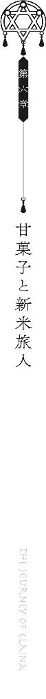

| 魔女の旅々３ (GAノベル) | |
| 白石 定規 | |
| SBクリエイティブ株式会社 (2016) | |

魔女の旅々３
白石定規

本書に掲載されているコンテンツの著作権等の知的財産権およびその他すべての権利は、ＳＢクリエイティブ株式会社または正当な権利を有する第三者に帰属します。
本書の内容を権利者の許諾なく複製・複写・翻案・放送・出版・データ配信（送信可能化を含む）などすることはできません。
カバー・口絵 本文イラスト
あずーる
夜の街角にて、一人の魔女が占い師を営んでおりました。
風呂敷を地べたに広げながら、その上にちょこんと座っている魔女は、灰色の髪と瑠璃色の瞳が特徴的な少女。
黒のローブと黒の三角帽子、それから、魔女の証である星をかたどったブローチをしています。
路上を挟むようにして伸びている背の高い民家たちより遥か上には星々が瞬き、手元に置かれた水晶玉に、まばゆい輝きを落としていました。
彼女は旅人であり、魔女でした。
「占い師さぁん。あたし、もう駄目なのよぉ」
「はあ」魔女は酔っ払いの女性を前にして、顔をしかめておられました。
わけあって今は占い師をやっていました。
正直に告白してしまうと、単純に金欠だったので占い師の真似事をして小銭を稼いでるだけです。
「あたしの話、聞いてちょうだいよぉ」
「相談料だけで金貨一枚頂きますけどいいですか？」
面倒くさいし、とっとと去ってもらいたいなと思いながら大金をふっかけるその彼女は、一体誰か。
そう、私です。
残念なことに目の前の女性はなかなかにお金持ちでした。
○
そもそもどうして占い師なのに人生相談など受けねばならないのか。
などと文句の一つも垂れてやりたいところでしたが、お金を貰ってしまっては仕方ありません。愚痴を聞いて差し上げました。
女性は少々ご自分を見失っているように見受けられましたが、お金を貰っている以上、面倒でもお話を聞かないわけにはいきません。
「あたしぃ、この近所のレストランでぇ、ウェイトレスをしてるんだけどぉ」
「はあ」
「もう仕事辞めたいのよねぇ」
「辞めればよろしいのでは」
「最近のお客さんったら、酷いのよ？ 何かにつけてすぐ文句言うし、ミスの一つでもすれば鬼の首でも取ったみたいにわーわーぎゃーぎゃー文句言うし、文句言うし、文句言うし」
「文句しか言わないんですね」
「そうなの！ しかも、何もそこまで言わなくてもいいじゃない、って思えるくらいに酷い言葉を浴びせてくるのよ。挙句の果てには近くの国の言葉を真似て、『お客さまは神様だ！』とか言ってくる始末だし」
「ふむふむ」
「どうしたらいいと思います？」
「祈りでも捧げれば黙るんじゃありません？」
「あたし真面目に相談してるのよ？ ひっく」
「と言われましても」
「そもそもさぁ。あたしは確かに店員で、お客さんは確かにお金を払っている立場だけどさぁ、でも、だから何？ って感じなのよねぇ。確かにあたしたちはお金を貰っている立場だけれど、けれど、お金を受け取って、お客さんが求めているものを、提供してあげてる立場でもあると思うのよ」
「ほうほう」
「だから思うのよ。あたしたちの立場は対等だー！ って。そんなに文句言うなら、もう料理なんか作ってやんないぞー！ って」
「いや対等ではないのでは」
「何よぉ。占い師さん、あたしから金貨一枚を貰ってるんだから、もっと真面目に相談に乗ってよ。あたしお客さんだよ？」
「前言撤回したほうがよろしいのでは」
「うう......もうやだぁ。仕事辞めたい」
「お辞めになればよろしいのでは」
「でもお金ない」
「さっき金貨一枚渡してくれたじゃないですか」
「それ全財産」
「返却しますね」
「占い師さん、優しい......。うう......こんなに優しい人が世の中にはいるなんて......世の中捨てたもんじゃないね......ぐすん」
「............」
「ねえ占い師さん。あたし、どうしたらいいと思う？」
「そうですね......。では一つだけアドバイスをして差し上げましょう」
「......？ 何？」
「もう少し自分自身に正直になったほうがよろしいと思います」
「というと？」
「文句を言われたら言い返して差し上げればいいのです。あなたの気持ちをさらけ出してしまえばいいのです」
「そんなことができたら苦労しないわよぉ！」
「そんなあなたにはこちら」
「？ なあに？ この瓶」
「それは魔法の水です。本当のあなたをさらけ出すことができるようになります」
「凄い......！ そんな水が存在するなんて......！」
「ええ。どうぞ。これは私からのサービスです。これを飲んで、明日からのお仕事も頑張ってくださいね」
「......うう。やだ。仕事したくない」
「まあまあそう言わずに」
それから何十分も彼女は私のお店の前でぐだぐだと愚痴をこぼし、やがて、「あ、トイレいきたい」などとぬかしてから帰っていきました。
ぐびぐびと、私が与えた水を飲み、「凄い！ なんだか本当の自分が戻ってきた気がする！」と叫んでいました。
「............」
まあ、あれはただの水なんですけどね。
酔いが冷めて気持ちも醒めれば、きっと本当の彼女が戻ってくることでしょう。
後日、その国で、あるお店のウェイトレスが話題になりました。
客に罵倒を浴びせる、ひどい女性だそうです。注文を頼まれれば舌打ちしながら卓に向かい、料理を運ぶときは蔑みの目線をプレゼント。お会計のときは「は？ もう二度と来ないでよね」というリップサービスも欠かしません。
どういうわけか、この奇妙な態度がお客さん（主に男性）に大変好評らしく「罵倒されたい！」と、お店は瞬く間に大繁盛となりました。この国はちょっとアレな人ばっかりです。どうせウェイトレスにきつく当たっていたのも、しゅんとしている女の子を眺めるのに妙な快感を覚えていたからに違いありません。この国はちょっとアレな人ばっかりです。
今や彼女は看板娘。
お店は連日大行列です。
彼女がこのようなありさまになったきっかけは一体何なのか。
とある新聞にインタビューが載っていました。
『やっぱり本当の自分をさらけ出すことが大事だと思いました』
とのこと。
............。
そういう意味じゃない......。
寒さと暖かさが混ざり合う季節でした。
平原を漂う風は冬の香りをほんの少しだけ残しています。
初春のひざしは暖かく、だからこそ風の冷たさははっきりとしていて、ほうきで草花の上を飛んでいる彼女は、時折、腕をさすりながら、前を見据えていました。
それは魔女であり旅人でした。
黒のローブと三角帽子を着込んでおり、魔女の証たる星をかたどったブローチを胸につけています。
三角帽子からのぞく灰色の髪は冷たい風をくぐりながらたなびいていました。
瑠璃色の瞳は、青空と平原の間にひっそり立っている小さな国に向けられています。
「次はあの国ですね──」
はてさてところで。
相変わらず旅を続けていて、相変わらずの景色の中に身を置いている彼女は、一体誰か。
そう、私です。
相変わらずに。
「ごめんくださいー」
門の前でほうきを降りた私は、そのように声を張り上げてみましたが、お返事はありませんでした。
ぽっかりと口を開けて旅人を歓迎するような雰囲気を見せているくせに、いざ国に赴いてみるとだんまりを決め込んでくるのですから困りものですよね。
何ですか？ 勝手に入っちゃっていいんですか？ てっきり門番か何かが立っているのかと思ったのに。
まあ誰も出てこないということは、つまり勝手に入っていいということなのでしょう。
というわけで私は国の中に足を踏み入れたわけです。
「......ほほう」
昔ながらの家々が軒を連ねる街並みでした。落ち着いた色合いのレンガの壁と、瓦の屋根の家が路地をはさむようにして並んでいます。ほんの少しのヒビが入っていたり、くすんだ汚れが目だちはするものの、統一感のある街並みの中では、その汚れすらも景色の一部のように感じられます。
落ち着いた雰囲気を助長するように、街の中は静寂に包まれています。
まるで誰一人として国に存在していないみたい。
国をしばらく歩くと、大きな広場がありました。
私はそこで、立ち止まります。
広場には大きな穴が開いており、そこから刳り出された土が、山のように積み重なっていました。人の気配が一切ない街の中、ここにだけ誰かの存在があった痕跡がありました。
「............」
そして穴の中を覗いたとき、この国の中に人の姿が見当たらない理由がはっきりと分かりました。
大きな穴には、布切れに包まれた人が積み重なっていたのです。
それも大量に。
この国に人の姿が見えない所以は、人がここに集められているからでした。
「──ん。そこにいるのは誰？」
穴を覗き込んで呆然としているときでした。
声がしました。女性の声です。
振り向くと、ほうきに乗った女性が杖を片手で握りながら空の上から私を見下ろしていました。金色の髪を後ろ一つに結っている女性でしたが、ローブもなければ三角帽子もありません。
けれど魔法使いであることは明らかで、ほうきの後ろには、布にくるまれた人たちがたくさん浮いていました。魔法で浮かしているようです。
彼女はそれらをゆっくりと穴の中へと降ろしながら、言いました。「ここの国の人間じゃないよね、あなた」
私は頷き、
「旅人です。ほうきを走らせていたらここにたどり着いたんです」
「そうなんだ。......もしかして宿泊とかしたかった？」
「そのつもりでした」少なくともこの惨状を見るまでは、ですけど。
「やめておいたほうがいいよ」
「そのようですね」
彼女はゆっくりと頷いてから、ほうきを私の前に下ろします。身長は私より頭一つぶんくらい高いようで、私は彼女を見上げていて、彼女は視線を下げていました。
「この国、こんな状態だし、それに明日にはもう、この国は閉じるから」
「......何があったんですか」
どなたも死んでいるようですけど──。
と穴を見下ろす私の心を見透かしたように、彼女は、今しがた人を重ねたばかりの穴を見やり、
「この人たちはね、みんな眠ってるの」
と言ってから、
「死んだように眠ってるの」
と目を伏せました。
○
この国には有名な予言者がひとりいたそうです。
予言者は若い頃から国のために天候、あるいは作物の豊作や不作、家からいなくなったペットの行方、今日の運勢、それに人の寿命や運命の相手に至るまで、その時より先の未来を予言していきました。
すべてが綺麗に的中とはいかないものの、その予言者の言葉には不思議な魔力が宿っているのか、たまに外すことがある程度で、ほとんどの予言は当たっていました。予言が外れたとしても、それは「予言を聞いたから運命が変わったのかもしれない」という都合のいい解釈のもとで有耶無耶にされたといいます。この国の人々はやや信心深すぎる傾向にあるようでした。
予言者の力に陶酔した国民たちは、誰もが予言者を頼り、何かあればすぐに予言者のもとへと駆け付けました。予言者が年をとり、顔に皺が幾つも刻まれている頃には、もはやその予言者は国で最も重要な人物として崇められるほどだったといいます。
先ほど私と出会った彼女──名をシャルロッテという彼女も予言者を信じていた一人でした。
しかし予言者といえど、先の未来を見透かすような力を持っていたとしても、自らに訪れる死期に抗うことはできませんでした。
予言者は今より半年前に、多くの国民に囲まれながら、安らかに、まるで眠るように息を引き取りました。
その死がきっかけとなり、国民たちはひどく怯えました。
予言者を失ったことが、ではありません。
予言者は死の間際に、恐ろしい予言をひとつ、残していたのです。
「この国は今より半年後に滅びる」と。
それが正確には半年後のいつのことなのかは分かりません。何が所以で滅んでしまうのかも分かりません。
しかし予言者の今までの実績と、漠然とした言葉は国民に耐えがたい恐怖心を植え付けました。
それから半年の月日が流れるまでの間に、ほとんどの国民は国を捨ててしまいました。国と心中するのを何よりも恐れたのでしょう。
結局、国に残ったのは百人にも満たない国民たち。
何よりも国を愛していた人たちです。
彼らはいつ訪れるかも分からない死の恐怖に怯えながらも、静かに暮らしていました。
そして、今より四日前のことです。
シャルロッテさんがいつものようにベッドに入り、眠りに落ちたとき、奇妙な夢を見たといいます。
「やあこんにちは。君はシャルロッテだね」
夢の中には悪魔がいました。シャルロッテさんと同じ姿をしていながらも、頭にはねじれた角を生やし、背中にはコウモリの羽を生やしている、不思議な悪魔がいました。
「あなたは？」
「私は君の願いを叶える者だよ。この国で死ぬために生きているんだろう？ あまりにも可哀想だから、夢の中で君の願いを叶えてあげるよ。どんなことでも構わないよ。私に願うといい。理想の世界を見せてあげよう」
「え、胡散臭いんだけど......」
「悪魔だからね」
よく分からない理屈でしたが、夢の中だし荒唐無稽なのが当たり前なのだろうとも思い、彼女は深く突っ込むのをやめました。
「さ、どんな願いがいい？ 理想の三日間を君にあげよう」
「............」
やはり夢の中なので彼女は突っ込むことはありませんでした。
なので彼女は願いました。
「じゃあ、魔法使いになりたい」と。
それからの夢の中の三日間は本当に理想的だったと彼女は語ります。ほうきで自由に空を飛び、魔法でありとあらゆる物を浮かせたりと、好き放題魔法を使って過ごしました。
夢の中の時間はまさしく夢のようにあっという間に過ぎ去っていき、三日目の正午に、再び悪魔は彼女の前に現れました。
「どうだった？ 楽しかった？ ところで君が望むのなら、まだこの夢の中にいてもいいよ？ どうせ現実の世界に戻っても、死を待つ以外にやることなんてないんでしょう？ だったら夢の中で楽しく暮らしたほうが幸せじゃないかい？」
言いたいことはごもっともでした。夢から醒めても、待っているのは死を待つばかりの悲しい時間だけです。
しかし彼女は首肯することはありませんでした。
「どうしてですか？」そこまで聞いたところで、私は首を傾げていました。
シャルロッテさんは、
「考えてもみてよ。確かに夢の中で過ごし続けることができれば幸せだし、死を待つ必要もない。けれど、それって生きていると言えるのかしら？ どれだけ幸せな時間だったとしても、夢はいつかは醒めるものでしょう？ いつかは現実に戻らなければならないものだもの。たとえすぐ先に死があったとしても、理想の夢の中に引きこもってしまっては、それは生きていることにならないと思うのよ」
「......かもしれませんね」
「だから私はね、悪魔の申し出を断ったの」
悪魔は彼女が首を振ることをまるで分かっていたように、「あ、そう」とだけ返しました。実に淡泊な反応です。
そして、
「現実に戻りたいなら、お土産をひとつあげるよ。記念にね」
「......はあ」
しかし変な夢だなと思いながらシャルロッテさんは頷いていました。
「君は夢の中で魔法使いになれたね？ だから、現実世界でも魔法を使えるようにしてあげる。目が覚めたとき、きっと夢の中で使えたように、魔法が使えるはずだよ」
「......はあ」
んな馬鹿な話があるか、と思いながら、「どうも」とシャルロッテさん。彼女は適度に冷めていました。
どうせこれは夢の話で、きっと現実に戻れば、死を待つだけの日常しかありはしないと思っていた彼女は、何もかも投げやりになっていたのかもしれません。
「私は君を魔法使いにしても採算がとれるくらいには人の命を奪っているからね──だからこれはサービス。気にせず現実世界で使うといいよ」
悪魔は最後に笑いました。あからさまな作り笑いだったとシャルロッテさんは言います。
そして彼女は、夢の世界から解き放たれます。
「馬鹿みたいな話だけどね、私はそこで、夢の中で悪魔が言ったように、魔法が使えるようになっていたわ。ほうきで空も飛べるし、魔法でなんでも浮かせられるようになった」
シャルロッテさんはあくまで淡々と語ります。
「きっとほかの皆も夢から醒めて、何か素敵なものを貰ったはず──私はそう思いながら、国の中を飛んで回ったわ」
「............」
「その結果がこれ」
「......誰も起きていなかったんですか」
彼女はゆるりと頷きました。
「幸せな夢の中で息絶えたみたい」
○
彼女が目を覚ましたとき、既にほかの国民たちはまるで眠るように息絶えていたといいます。
一体なぜそうなったのかなどは考えるまでもありませんでした。
シャルロッテさんは命尽きた国民たちのために穴を掘り、魂が抜け落ちた身体を布にくるみ、放り込んでいきました。
「ちなみにさっき入れたので最後。ここの国にはもう、私しかいない」
「あなたはこれからどうするつもりなんですか」
「そうだね。さしあたって、穴をふさいでから、この国から出ていこうかなって、考えてる」彼女は言いました。「本当ならね、この国と一緒に心中するつもりだった。これから先に待ち受けている滅びを受け入れるつもりだった。でも、魔法を手に入れてしまったもの。死を待つだけじゃあ勿体ないわ」
「つまり？」
「私はこの国を出ていく」
そして彼女は杖を振るいます。
土は積み重なった死体にこんもりと盛られ、やがて穴は見えなくなりました。
○
私はその日のうちに国を出ることにしました。
無人でほとんど滅んでいるとはいっても、不気味な雰囲気が渦巻く国に長居したくはなかったのです。
なのでシャルロッテさんに簡単に挨拶を交わしたのちに、私は再び門を出て、平原へと赴きました。
「............」
結局のところ、その国は明日にも滅んでしまうのでしょう。
予言者の言う通り、彼の死後、半年で国民は確かに誰一人としていなくなってしまいました。予言者が何も言わなければ、国は滅びることもなく、今も存続していたはずなのに。
この国は、きっと滅びるべくして滅んだのでしょう。
人々の信じる心と、それに付け入った悪魔によって、このような結末は招かれたのでしょう。
どんな物事においても、悪い方向に気持ちを置いてしまうと、何もかも悲観的になってしまうものです。ただし都合のいい方向に気持ちを置き続ければ、それはそれで、周りが見えなくなっていつしか自分でも気が付かないうちに命を落としてしまっていたりもするかもしれません。夢の中に閉じ込められて命を落とした国民たちのように。
「............」
結局のところ、何に関しても、適度が一番で、極度に気持ちを振ってしまうと、壊れてしまうということなのかもしれません。
だから。
よいことも悪いこともひとまず放っておいて。
私の旅は依然として、淡々と紡がれます。
相変わらずに。

こんにちは！ 私、イレイナ！ 灰の魔女イレイナ！
私は数年前から旅に旅を重ねて、数日前より、この国に滞在しています！
麗しい灰色の髪と、瑠璃色の瞳が何よりも特徴的な超美少女魔女です！ 服装はいつも大体黒の三角帽子と黒のローブを着込んでいます。街で見かけたら声を掛けてくださいね？ うふふ。
ところでこの国は素晴らしいですね！
なんといっても料理が美味しい！ これほどまでに美味しい料理がある国は初めてでした！ この国の料理は間違いなく世界一ですよ！ 絶品です！ 何もかもが三ツ星です！ レストランから出されるものも、喫茶店のコーヒーも、それどころか露店に置いてあるパンでさえ、紛れもなく世界で最も美味しいと誇れるものです。
それとですね、街から見える景観が最高でした！ 見上げれば、空はとっても透き通っていて、夜になれば満天の星を眺めることができました。
展望台から山を眺めれば、雪化粧で覆われた美しい山々がありましたし、耳を澄ませば風がそよいでいました。
素敵すぎます！
料理と景色だけでも十分すぎるくらいに素敵すぎるというのに、この国はそれだけではありませんでした！
街並みと、そこに住まう人々は、それらを霞めてしまうくらいに素晴らしかったんです！
歴史ある建物がずらりと並ぶ中、そこに住まう人たちは、誰もが笑顔で私に接してくれました。道に迷って困っていたらすぐに助けに来てくれましたし、どのお店の人たちも、私たち客をまるで神様かのように扱ってくれるんです。
私、料理を食べたあとにチップを渡そうとして、「そんなものはいりませんよ、私たちは当然のことをしているんです」なんて返されたの初めてでしたよ！ 凄い！ なんてサービス精神なのでしょう！
私はもう感動で言葉がありませんでしたよ！
それに、この国に住む男性たちはどなたもイケメン揃い！ 右も左もイケメンばっかり！
うっかり惚れてしまわないように気を付けるので本当に大変でしたよ！ うふふ。
とまあ、こんな感じで私は数日間の滞在を、本当に心から楽しんだわけです。
本当にいい思い出でした。
恐らく二度とこの国のような素晴らしい国と出会うことはないでしょうね！
○
「............」
カフェの受付のあたりに新聞が並んでいるとき、私は右から順番に、全部読むようにしています。
目に入る情報は多い方がいいですし、何より、新聞社によっては記事に関するスタンスが違ったり、時には正反対の意見を書いていたりもして、面白いのです。何より、コーヒーが来るまでの暇つぶしに最適です。
それに、国によっては、近くの国の新聞を置いているところなんかもありますから。
「............」
ちょうど、私がその日訪れたのがそのような国だったようで、近隣の国──私が数日前に訪れたばかりの国──の新聞も、置いていました。
もちろん読みました。
「......なにこれ」
そして愕然としたというわけですね。
というより非常にはらわたが煮えくり返っていたというわけですね。
もはや怒りは最高潮。新聞を思いっきり握りしめていました。表情も非常に険しいものになっていたのでしょう。コーヒーを届けにきたウェイトレスさんが、「コーヒーお持ちしま......ひいいっ！」と悲鳴をあげてすらいましたから。
「......ああ、すみません。どうも」私は新聞紙をひとまず置いて、深呼吸しました。
「あ、はい......。その新聞がどうかしましたか？」
ウェイトレスさんは私の表情を窺いながら、コーヒーをテーブルに置きました。
「私、この国を一度訪れたことがあるんですよ」
「あら。この国をですか？ ははーなるほどなるほど」なにやら得心がいったようで、ウェイトレスさんはお盆を両手で抱きしめながら、こくこくと頷きました。「もしかしてあなたも、国を出るときにアンケートを書かされたクチですか？」
むむ？
「あなたも、とは？」
確かに書かされた記憶がありますけど。
実は最近、他国から来た人たちの感想を新聞記事にしているんですけど──なんて謳い文句と一緒に。
「私も以前、あの国に旅行に行ったことがあるんですけれど......、後日、ここに戻ってみたら、同じように噓まみれの記事が書かれていたんですよ」
「............」
なるほどあの国が虚構まみれの新聞を出すのは日常茶飯事と。
全く信頼できませんね。信憑性皆無の新聞など読むに値しません。暖炉の中にでもポイしたほうがよっぽど有意義です。
「あの国はですね、つい最近まで鎖国していたんですよ。だから珍しいから行ってみたんですけど──他所の評判がよほど気になるんでしょうね。アンケートでは確かに『あまり目新しいものは見当たらなかった』って書いたはずなんですけど、『素敵な国でした！』って私が言ったように改変されていたんです」
「──はああ？ 注文？ あんたが伝票書きなさいよ！ 何よ、文句ある？ この豚がっ！」
遠くのほうから怒鳴り声が響きました。
目の前の彼女はその様子をちらりと見てから、
「......たぶんあんな態度を取ってもあの国ではいろいろと改変されるに違いないですよ」
と肩をすくめます。
「............」私は遠くの席で怒っているウェイトレスさんの顔色を確認してから、三角帽子を深々と被り、「でも、そんな風に改変して一体何の得があるんです？」と。
「さあ？ それは分かりません」
「ふうむ......」
「ちなみにこれも聞いた話なんですけど──」ウェイトレスさんは言います。「あの国の人たちは、門を開いたというのに、未だに国の外に出た人はいないそうです」
「ほう。なぜです？」
「自分たちの国が最も優れている国だと思いたいからじゃないですか？」
「............」
国の外に出たくない。出る勇気がない。
その気持ちを誤魔化すために、もしかしたら、その国の人たちは、新聞記事をねつ造して、自国の素晴らしさをアピールしているのかもしれません。
素晴らしい国に住んでいるのだから、わざわざ世界を見る必要などないのだ──と。
「ちなみにあの国に移住した人はいるんですか？」
私の問いかけに、当然とばかりにウェイトレスさんは笑います。
「いませんね。私の知る限りでは」
隣り合う二つの村が合同で行う収穫祭は、今年で十年目になる。
それより以前はいがみ合い、恨み合い、くだらないことでいさかいを起こしていたと聞くが、今はその痕跡は一切ない。
十年前よりも後に生まれた子供たちからすれば、もはや二つの村は隣り合う二つの村というよりは、大きな一つの村として捉えられているほどに。
「ねえおじいちゃん。こっちの村って、ほんとうにあっちの村と仲がいいの？」
しかしながら、少年はこの仲が良い二つの村──あるいは大きな一つの村という現状にやや懐疑的であった。
というのも、それは今日の収穫祭の催しが、まるで二つの村の仲を引き裂く行事にしか思えないからであった。
老人はぶどうがいっぱいに詰め込まれた木箱を道の中ほどに置いて、腰を軽く叩いた。
「どうしてこの祭りをやるのか気になるのかい？」
「うん」
「ふぉっふぉっふぉ......。二つの村の仲を取り持つためじゃよ」
「ええー？ でも......」
少年は木箱の中を覗いた。今朝獲ったばかりのぶどうが太陽の光を受けて瑞々しく輝いていた。
二つの村を分ける細く短い道の間には、同じような木箱が幾つも──数えきれないほどに置いてあった。こちら側にも、あちら側にも。
これこそが収穫祭の催しであった。
二つの村で、箱いっぱいに詰め込まれたぶどうを投げ合い、ぶどうまみれになる──という、ぶどうが勿体ない催しである。
表向きの名目は、「ぶどうまみれになるくらいに今年の収穫が豊作でありますように」などという願いを込めた祭り、ということになっているが、祭りの参加者たちはどうにも野蛮である。
たとえば去年の祭りでは、あちらの村に住む男がこちらの村で暮らす女の子に振られた腹いせに頭からぶどうを浴びせたりしていたし、同じ村に住む夫婦が互いに普段から積み重なっている不満と罵倒を叫びながらぶどうを顔に塗りたくったりもしていた。
毎日ほんわかと暮らす人々は、なぜかこの日になると豹変してまるで悪魔が乗り移ったようになっている。
もはや翌日から絶縁しそうな雰囲気すらある。
しかし不思議なことに、祭りが過ぎるとぶどうまみれになった道以外はすっかり元通りで、ほんわかとした日常へと帰るのである。
もしかしたら、定期的なガス抜きを担っているのかもしれない。このような収穫祭が、二つの村の仲を取り持っているのかもしれない。
それは少年にもよく分かった。
しかしだからこそ懐疑的である。
本当に仲がいいなら、こんな祭りを開催したりはしないのではないだろうか。
「お前の認識は正しい。我が村は、あちらの村と決して仲が良いわけではない。普通に腹立たしく感じることも多いし、あちらの村に住む奴全員を敵視しているくらいだ」
「それならどうしてこんな祭りをするの？」
「だからじゃよ。ぶどうを投げ合うことで鬱憤を晴らしているのじゃ。決して我々は仲が良いわけではない。ただ互いに正直になれる日を見つけただけじゃ。十年前にな」
「ふうん......」
「そういえば、お前には十年前に何が起こったのかを話していなかったな──聞きたいか？」
「うん！ 教えて教えて？」
老人は遠い空を眺めた。鳥が音もなく漂っている空は、なによりも広く、それでいていつもと同じで、まるで十年前とかわらなかった。
「十年前のあの日──わが村に、一人の旅人がやって来た」
「ほうほう」
あ、これ絶対長話になるやつだ。と一瞬で察した少年だった。
長話になるならせめて家に入ってから口を開いてほしかったとも思った。
「その旅人は灰色の髪をやわらかくたなびかせている魔女の少女じゃった。まるで天使のようで、それでいて悪魔のようでもあった」
「ふうん」
「そんな風に、世にも珍しい、不思議な雰囲気の魔女が、わが村に来たのじゃ。その日が、わが村にとって忘れられない日になった──」
そして老人は語る。
十年前の、あの日のことを。
○
天使っぽくもあり、よく見たら悪魔っぽくもある魔女が旅をしていました。
それは誰か。
そう、私です。
「............」
そこはのどかな田舎道でした。
透き通るような淡い青の空はどこまでもまんべんなく広がり、鳥が音もなく気持ちよさそうに漂っています。平原の緑の合間を通る小さな道は、土色の地面をむき出しにしながら、少し先に見える二つの村へと続いていました。
私はうねる道に沿いながら、ほうきを飛ばします。そこら中にありふれているやわらかい風は、私が速度を上げるたびに、涼しさを増しながら私に触れました。
ほどよい心地よさを感じながら深呼吸をひとつして、私は先を見据えます。
そこは隣り合う小さな二つの村。
他所からは二つのぶどう酒村と呼ばれている、小さくて素敵な村たちでした。
「ようこそ魔女さまぁ！ や、この日に訪問なさるとは、魔女さまは本当に運がいい！ さあさあどうぞ中へ。わが村の村長が大変歓迎しております」
私が村の一つにたどり着くなり大歓迎でした。
家々から村人たちが湧き出て、私の顔色を覗くなり嬉しそうに笑顔をこぼしていました。
案内されるままに村長さんの村に入ってみると、やはりここでも大歓迎で、初老に差し掛かった老人が愉快そうに「ふぉっふぉっふぉ」と手を叩きました。
「しかしお主、めんこいのう」
可愛いと言っておりますな？
「あ、どうも。知ってます」
なんでいきなり褒められたのかよく分かんなかったのでとりあえず愛想笑いを浮かべときました。
なんかよく分かんなかったらとりあえず曖昧に笑っとけばたいていなんとかなります。これぞ賢い処世術。
はてさて、ところで。
「この村ってぶどう酒が有名なんですよね？」
「然り。ぶどう酒は我が村の特産物であるぞ。......して、お主、結構若いが、ぶどう酒は好きかね」
「んー」
実は飲んだことありません。むしろここがぶどう酒が大変美味しいと聞いていたからこそ来たわけでもあります。
せっかくの初めてのお酒なら、とっても美味しいものを口にしたいと思いましたゆえ。
「我が村のぶどう酒は確かに、紛れもなく、非常に美味である。それはもう向こうの村のぶどう酒など相手にならないくらいに美味！ まさしく神が作りしぶどう酒である」
「ほう」
ちなみに私が聞いた話では「どっちの村のぶどう酒も味は大して変わんないよ。つーかまるで同じだね」とのことでしたが、現地人にしか分からない何かがあるのかもですね。
「しかしあっちの村といったら強情なものでな、我が村に負けたくないらしく、最近、あることをし出したのじゃ！ けしからんことにな！」
「へへえ」
「それがこのぶどう酒じゃ！」
村長さんはテーブルの上にずどん！ と一本のワインボトルを叩きつけました。『過去最高の収穫率を誇る五年前を更に上回る出来です』という美味いのかどうなのかはてさて微妙によく分かんねー感じのラベルを張り付けたボトルでした。『あっちの村のぶどう酒』という名前らしいです。あっちの村ってなんすか。
「ちなみにわが村はこっちの村という名前じゃ」
村の名前ですかなるほど。
しかしそのようなしょうもない情報よりも、いちばん気になるものがラベルのど真ん中にありました。
緩いウエーブのかかった金髪の女の子の笑顔があったのです。
『わたくしが愛情を込めてぶどうをふみふみしました』
という吹き出しと共に。『原産地：あっちの村のぶどう踏み乙女のローズマリーちゃん』とも書いてありました。
「............いやなんすかこれ」
すると村長さんはこぶしをテーブルに叩きつけました。うるさ。
「これは！ わが村に勝てなくなったあっちの村が作り出した苦肉の策！ 見よ！ この表紙のローズマリーちゃんを！ なんと向こうの村は原産地にローズマリーちゃんを仕立てたのである！」
「原産地じゃなくて生産者じゃありません？」
「生産者じゃなくて原産地と書いたほうが購入者をそそるのであるよ」
「............」そそるとな？
「まあつまりだな、このようなフェチズムをくすぐるような代物を売ることで、あっちの村はぶどう酒の売り上げをぐんぐん伸ばしておるのだ！」
「へへえ」
売れてるんですか。これ売れてるんですか。
「これのせいでわが村は窮地である。実に困ったものであるな！」
「でもこれ、ラベル変えてるだけですよね？ 味は美味しいんですか？」
「......の、飲んだことがないから分からんのう」
動揺してるじゃないですか。飲みましたな？
というかそのボトルよく見たら空じゃないですか。飲み干しましたな？
じとりと睨みつける私から逃れるように村長さんは私から目を逸らし、
「やはり可愛い女の子がふみふみしたぶどう酒は美味いのである......」
「ところでふみふみってなんですか？」
「我々の村ではぶどう踏み娘がぶどうを踏むことをふみふみすると言うのじゃ」
「はあ」なんですかその奇妙奇天烈なこだわり。「では可愛い女の子にぶどうをふみふみさせて対抗してみたらどうですか」
やはり私は適当かつ曖昧に返していました。この行先不明のよく分からない会話を早々に終わらせてしまおうと思ったのです。
これぞ賢い処世術でございます。ええ。
「よくぞ言った！」
しかし。
村長さんはそこで、テーブルに両手を叩きつけて、身を乗り出してきたのでした。
「その通りである！ めんこい乙女にぶどうをふみふみさせれば、我々は勝てるのである」
「は、はあ......」
「というわけでお主！ やってくれ」
「......むむ？」
「めんこい乙女ならやれるよな？」
「......むむむ？」
「むしろやれ。これはお主にしかできんことだからのう」
「......むむむむ？」
おや？
もしかして私の処世術、厄介ごとを呼び込みましたか？
○
「皆の者！ 聞いてくれ！ こちらの魔女殿がぶどう踏みの乙女をやってくれるそうだぞ！」
すぐさま家から飛び出した村長さんは、村中にたむろしている人々に向かって大声で叫びました。
その直後です。
村人たちは諸手を上げて喜ぶとともに万歳三唱。
「なんだって！」「確かにこの魔女さんならばあるいは」「村長......女の子がふみふみしたぶどう酒が飲みたいです」「もうババアが踏んだぶどう酒はごめんだ！」「村長！ ローズマリーちゃんのぶどう酒の新作買いましたよ。飲みます？」「こんな可愛い魔女さんに踏んでもらえるんか！」「やったぜ！」
............。
いやいやいやいや。
「あの、私、やるとは一言も言ってないんですけど」
「皆の者ー！ 魔女さんも大変やる気であるぞ！」
やる気じゃないですよ？ やる気皆無ですよ？
「あのー。大変申し上げにくいんですけど」
「さあ皆の者！ でっかい桶とぶどうをありったけ持って来い！ 死ぬまで踏ませるぞ！」
おっと本性を露わにしましたね？
やっぱ帰りますね。
というわけで私はその場でくるりとターン。バッグを肩にかけ、歩き始めます。
村人たちは賑わいながら桶やら何やらを用意し始めていますけど。完全に私にぶどう踏ませる気で満ち溢れたりしていますけど。
そんなん知りません。
俄然無視です。幸いにも村人たちは準備にばかり精を出していますから、こっそり逃げ出してしまえば大丈夫でしょう。いざとなったらほうきでぱぱっと逃げられますし。
......と思いながら歩いてたのですけど。
「あらぁ！ 廃れまくりのこっちの村の皆さんではありませんの！ 何をしていらっしゃるのかしら？ ん？」
まさか私の進むべき先にて通せんぼされるとは思いもしませんでした。
どこかで見たことのある金髪の少女が、高飛車な感じで口元に手を添えながら、村人たちを蔑んでおられました。台車を引いているやたら体格のいい男たちを背後に何人も配置しているため、女ボスというか、女王というか、そんな感じの雰囲気がありありと見えました。
「き、貴様は......！ ローズマリーちゃん！」
「ごきげんよう。村長さん。何をしていらっしゃるのかしら？」
「貴様には関係ない！ 貴様らこそ、ここで一体何をしている！ ここはこっちの村であるぞ！」
なにやら険悪な雰囲気のように見えますが、村長さんが原産地ローズマリーちゃんのワインボトルを握っているせいで虚勢を張っているようにしか見えませんでした。
ローズマリーちゃんは、ふん、と鼻を鳴らしてから、
「今ちょうどぶどう酒を売ってきたところよ。台車数台ぶんね。この時間はわたくしたちが通るのだから、道は空けておけといつも言っているでしょう？ どうしてこんなに騒がしいのかしら」
「この......馬鹿にしおって......！」
「あらぁ？ 何かしら、その手に握っているワインボトルは」
「............」
即座にワインボトルを隠す村長でした。
よく見たらローズマリーちゃんの直筆サイン入りでした。さてはファンであるな？
「あと、このちんちくりんの小娘は一体誰かしら？ なんか魔女のコスプレしてるけど」
失敬な。
「私、こう見えても本物の魔女ですよ」
ローズマリーちゃんはちらりと私に一瞥をくれてから、再度村長たちのほうへと顔を向けました。
「へえ。ふうん」ぶどう踏みの準備中である村人たちの様子から、彼女は何かを察したようでした──ちょっといやらしい表情を浮かべてます。「なるほどねぇ。わたくしに勝てないから、この貧相な女の子を使って、ぶどうをふみふみさせるつもりなのね？ ふふっ」
「貧相ですと？」
「顔も微妙。体形なんて子供みたい」
「微妙ですと？ 子供みたいですと？」
「いえ、まさに子供ですわ。こんな子にぶどうをふみふみさせたところでわたくしには勝てませんわよ？」
「............」
腹立ちますね。
一体何が悲しくて初めて会った人間にここまでコケにされなければならないのか。
「まあ頑張ってみなさいな。わたくしはこれから新しいぶどうをふみふみするので失礼するわ──どいてちょうだい、貧相な魔女さん」
「............」
ほうほう。なるほどここまで見くびられてしまっては黙っていられませんね。
「イレイナです。私の名前」
私は一歩踏み出し、ローズマリーちゃんのにやけた面を睨みつけます。「以後お見知りおきを」
「聞こえなかったかしら？ わたくしは目の前から退け、と言いましたのよ？」
彼女は一切表情を変えることなく、ただそれだけ漏らしました。
完全に勝ち誇った表情でした。勝負すらしていないのに、勝負にならないとでも言いたげな顔でした。
......むかつく。
これはもう徹底的に叩きつぶすしかないですね。
完全に乗せられる形になりましたが、結局、むきになった私は彼らに協力して、こっちの村のぶどう踏みの乙女をやることにしました。
したのですけど。
「......なぜコスプレ？」
村長曰く、ぶどう踏みをする乙女は必ず、決まりきった服装を身にまとわなければならないようでした。
ワインレッドのフレアスカートに、同じくワインレッドの長袖。袖口にはフリルをあしらっており、見ようによっては赤いだけのメイド服に見えなくもありません。
一体なぜこのような服を着させられなければならないのか。
村長曰くそのほうがそそるそうです。よく分からん理屈でした。
「まあとにかくふみふみしておくれ魔女殿」
「............」
ワイン踏みをしている最中に長い髪が煩わしく感じられることは明白でしたので、私は髪を後ろひとつに束ねてから、桶の中に素足を伸ばします。
「ところでどうやって踏めばいいんですか」
「まんべんなく愛情をこめて踏んでくれればよい」
「............」込める愛情がまったくない場合はどうすればいいんでしょうね。「とりあえずローズマリーちゃんに対する憎悪を込めて踏みますね」
「踏むのではない！ ふみふみである」
戯言なので無視しました。
「......えい」
そして私は、スカートの裾を両手の指先でつまみ、膝まで持ち上げながら、桶の中に足を下ろします。
桶の中いっぱいに詰め込まれている淡い緑のぶどうの粒たちが、ひんやりとした感覚を私の足裏に伝えます。私の体重がかかると、粒たちは耐えきれなくなったようにその身をつぶし、透明の果汁を吹き出しました。足元から漏れた濃厚すぎる甘い香りと、濡れた足元から逃れるように足を上げても逃げる場所は存在せず、私は再び、気持ちの悪いぶどうの上へと足を落とします。踏めば踏むほどに私の足の指先に、ちぎれたぶどうの皮が絡みついていきました。
つぶして、吹き出て、またつぶす。丸っこくて柔らかい感触は、徐々に水浸しの砂浜の上で足踏みしているような、変な感覚へとなり変わっていきました。
少々気持ちが悪いのですけど、なんだか癖になる、変な感じです。
簡潔明瞭に申し上げると大変ぞくぞくしました。
「死ね......死ね......死ね......死ね......！」
なので若干乗り気な私でした。
私のその様子を眺めていた村人たちは、写真をぱしゃぱしゃと撮りながら歓声を上げまくりでした。たぶん私の今の呪詛はこの好き勝手に私を撮る村人たちにも向けたものでもあったと思います。
次第に私の足はぶどう果汁でぐちゅぐちゅに濡れていきました。村人たちはいつまでも賑わい、私のストレスはいつまでもいつまでも増していきました。
よもや後半は完全に心を殺してぶどうを踏んでいたくらいです。
「............」
こんなことを毎日強いられているローズマリーちゃんの苦労は如何ほどでしょう。
恐らくあっちの村の人たちの期待を一身に背負わされながら、毎日ぶどうを踏まされているに違いありません。
............。
まあ、その苦労と私に対する態度は完全に別物ですけどね。
○
「......つかれた」
ひとしきりぶどうを踏み倒した私は、村長宅でしばしの休憩をさせてもらいました。村長曰く、このあともう一度ぶどうを踏んでほしいそうです。
せっかくなので大量生産したいということですね。
「いやあご苦労だった魔女殿。ほれ、見てみなさい。これが君が作ったぶどう酒を入れるボトルだよ」
村長さんは私の前にひとつのボトルを置きます。
『こっちの村の最高級ぶどう酒』『私が憎悪とか苛立ちとかを込めて作りました』『原産地：灰の魔女のイレイナさん』
と書き綴られたラベルには、私が暗黒にまみれた笑みでぶどうを踏んでいる写真が印刷されていました。
「......こんなの売れるんですか」
誰も買わない気がしますが。
「こっちの村は、あっちの村とは別方向で攻めてみようと思ってな。あっちがローズマリーちゃんの美しさを売りにしているのなら、こっちは、そういう要素を完全に排除して、別の売り方をすればいいのじゃ」
「............」
「たぶんそういう客には大反響のはずじゃ」
「ぶどう酒買う人ってそういう性的嗜好もってる人しかいないんですか」
「まあローズマリーちゃんのぶどう酒が売れてる時点でそうじゃろうな」
「............」
女の子が踏んだ酒飲んで酔っ払って、一体何が楽しいというのでしょうか。理解に苦しみます。
なんだか頭が痛くなりそうでした。ので、この話題はここで打ち切りにしましょう。「ところで、あの量でいくらほどぶどう酒を造れるんですか」
「そうじゃのう......だいたい、ワイン樽の半分くらいかのう」
「えっ。少なっ」結構踏んだはずですが。
「だからこそ、お主にはあと半分だけのぶどうを踏んでもらいたいのであるぞ」
正直に言うと非常に面倒くさいです。
しかし、ここで逃げてしまっては、ローズマリーちゃんに「あらぁ！ やっぱり逃げ出したのねぇ！ それもそうですわ、ぽっと出の素人娘がいつまでも踏んでいられるほどぶどう踏みの乙女の仕事は甘くないのよ！」とかなんとか馬鹿にされそうな気がしてなりませんでした。
うむむ。
............。
「......うむむ？」と、私はここで、はたと気づきました。「あの、村長さんが今も大事そうに握っているそのボトル──一体どれくらい売れてるんですか？」
すると村長さんは、ボトルをすりすりと撫でてから、
「相当に売れておるぞ。あっちの村のぶどう酒がすべてローズマリーちゃんのものになるくらいに大繁盛じゃ」
「すべて、ですか......」
ということは毎日朝から晩まで踏みまくっているということでしょうか。
............。
おや。
その割にはちょっとアレですね。
おかしいことだらけですね。
「............」
私は少々考えたのちに、ひとつ言いました。
「村長さん。休憩っていつまでですか？」
そのあと村長さんの家から出た私は、ぶどう踏みの乙女らしい服装のまま靴だけを履いて、あっちの村へと走りました。
この一件には違和感がいくつもありました。
どうして今に至るまでにこっちの村の人が誰一人として気づかなかったのか不思議で仕方なくなってしまうくらいに単純なからくりが仕組まれていました。
私は道に刻まれた幾つもの車輪の跡を追いながら、あっちの村の中を走り続けます。
違和感の一つは、この車輪。
ローズマリーちゃんは何人もの男を使って酒を自ら手売りしていたようですが、ぶどうを踏む役割を担っている彼女が売ることまで手伝うでしょうか？
あっちの村のぶどう酒のすべてをローズマリーちゃん製にしているというのならば尚更おかしいのです。
村ひとつを賑わせるだけのぶどう酒を造るために、一体どれほどのぶどうを踏めばいいのでしょうか。一体どれほどの時間をかければいいのでしょうか。
果たしてぶどう酒の販売を手伝っている暇などあるのでしょうか？
というか一人で全部のぶどう酒の製造をまかなうって無理がありません？
「............」
つまり簡単に言えば。
「ふふふ......ほらさっさとわたくしのために働きなさいな愚図ども！ わたくしのラベルを使ったぶどう酒を売りたいんでしょう？ ほら！」
車輪の跡を追った先には、ひとつの建屋がありました。
入口にて屈強な男が門番をしていましたので、魔法で「えいやっ」といった感じに眠らせたのち、私は扉を軽く開きました。
中から僅かに漏れていたのは、ローズマリーちゃんの声だったようです。腕を組み、ワイングラスを片手で揺らしながら椅子の上でくつろいでいる彼女の姿がありました。
おおよそ私の予想通りの彼女の姿がありました。
「......やっぱり」
彼女、ぶどう踏みの乙女などではありませんでした。ぶどうなど踏んでいませんでした。
では誰がぶどう酒を製造しているのか。
『セイヤっ！ ソイヤっ！ セイヤっ！ ソイヤっ！ セイヤっ！ ソイヤっ！』
答えはとっても簡単。見れば即座に分かりました。
彼女の周りで台車を引いていた屈強な男たちが、この辺りの言葉でいうところのふみふみを行っていたのです。男たちが汗水垂らしながらぶどうの粒をつぶしてできたぶどう酒──これが大量に造られたローズマリーちゃん産のぶどう酒の正体でした。
つまり産地偽装していたということですね。
「............」
これもう訴訟ものの事案ですよ。
○
「違いますの！ 今日だけですのよ！ 今日は偶然、そういう気分になりませんでしたの！ いつもは朝から晩までぶどうをふみふみしていますのよ！」
その場で全員縄でぐるぐる巻きにしたのちに、私は彼らと彼女をあっちの村とこっちの村の間にある一本の道の上に引きずり出しました。
お縄になった彼女たちの様子からただ事でないことを察したのか、こっちの村の人たちはぶどう踏みのために用意していたぶどうを抱えたまま集まり、あっちの村の人たちは捕まった彼女たちの様子から何かを察したのか若干そわそわしながら、同じくぶどうを抱えたまま集まっていました。
どうやらあっちの村の人たちはローズマリーちゃんのぶどう酒がただのむさくるしい男たちが作った酒であることを知っていたようでした。
「やべえ......ついにばれたか？」「くっ......いい商売だったのになあ......」「おいどうするんだよこれ」
彼らの声は私に筒抜けでした。
私はこほん、とあざとい咳ばらいを一つしたのち、ローズマリーちゃんから強奪したワイングラスをゆらゆらと揺らし、舞い上がる甘い香りにため息を漏らしました。
「しかしローズマリーさん、あっちの村のぶどう酒をすべてあなた一人でまかなっているとなると、かなりおかしいんですよ。数が明らかに合いませんし、販売まで手伝っている暇はないはずです」
「......いや、それはね、なんというか......その」しどろもどろになるローズマリーちゃん。
「というよりローズマリーさん。よくもまあ、男たちに無理やり作らせたぶどう酒を美味しそうに飲めますよね。罪悪感とか不快感とかないんですか？」
「あ、それは大丈夫。かなり前にわたくしがふみふみしたやつだから」
「それは？ かなり前？」
「......しまった」
「............」
詰めが甘すぎませんか。
私は手に持ったぶどう酒に口をつけました。
「......どういうことじゃ！ つまり、アレか！ この！ ローズマリーちゃんのぶどう酒は！ そこのむさくるしい男たちがふみふみしたものだというのか！」
怒り狂うこっちの村の村長さん。遅れて、ほかの村人たちもわーわーぎゃーぎゃーとわめき始めます。こっちの村の人々の動揺は徐々に伝染していきました。
「......ちっ。産地偽装くらいで何よ。面倒くさい男ども」ぼそりとローズマリーちゃん。
「おい今の聞こえたぞ！ やっぱり馬鹿にしておるだろ小娘が！」
「......ふん。わたくしのファンのくせに」
「それとこれは別じゃわい！ そもそもローズマリーちゃんがふみふみしたからあっちの村のぶどう酒を買ったのじゃぞ！」
「きもいですわ」
ごもっともでした。
しかし村長さんはそう思ってはいなかったようで、酒に酔ったみたいに顔を真っ赤にしながら、
「きもくないわい！ ふざけるな小娘！」
と、近くにいた村人が抱えていたぶどうを奪い取り、彼女に向けてぶん投げました。
すっ飛んできたぶどうの粒たちの大半は、ローズマリーちゃんに直撃。彼女から逸れた少量の粒は、隣にいた屈強な男や、私にぶつかり、果汁を漏らしました。
「......はあ？」なにゆえ私まで被害を被らなければならないのか。
ローズマリーちゃんが果汁に濡れたせいで、あっちの村の人々の怒りにも火が付きました。
「おいてめえ！ 俺たちのローズマリーちゃんに何を！」「ふざけるなジジイ！」「死ね！」
あっちの村の人々も、村長がそうしたようにぶどうの粒をこっちの村へと投げます。
そこから先はもはや目も当てられない状態になりました。道のど真ん中で縄にぐるぐる巻きにされているローズマリーちゃんと私、それと屈強な男たちをはさみながら、あっちの村とこっちの村の人たちによる、ぶどうの粒の投げ合いが始まったのです。
彼らはきっと向こうの村に向けて投げているつもりなのでしょう。
しかし、その間に挟まれた私たちには投げそこなった粒がもれなく直撃し、べちゃべちゃになっていきました。
「............」
なぜ私まで巻き込まれなければならないのか。
私は再びぶどう酒に口をつけました。美味しい。
「......どうしますのよ、これ」
「............」
しだいに綺麗さっぱり果汁まみれになっていく私たちでした。
苛立ちは濡れるたびに膨らみ、いずれ何もかもどうでもよくなりました。頭に血が上り、私は気づけば、杖を出していました。
なんだか少々暑いですし、もしかしたら私も酔っ払っているのかも。
「......ふふ。うふふ。本当にもう......さては皆さん、私を馬鹿にしていますね？」
そして私は杖を振るいます。
全身全霊をもって、私は飛んできたぶどうの粒を魔法で何倍もの速度を付け足して投げ返していきました。何度も何度もぶどう酒を口にしながら、こっちの村も、あっちの村も、もれなく粒まみれにして差し上げます。
もはや私が投げ返した粒は弾丸と化していました。
「はは！ あははははははは！ ははははははははは！」
はてさて、村人たちに容赦なく攻撃を浴びせながら悪魔みたいな笑い声をあげている女は一体誰でしょう？
そう、私です。
とまあ。
その村において、私の身にはそのような出来事があったと聞きますが、実際のところ、私はそのことをまるで覚えていません。
でもまあ確かに、そのような出来事があったのは事実なのでしょう。
私が頭の痛みで目を覚ましたのは、眩しいくらいの青空の下であり、身を起こせば、ぶどうまみれになって倒れている二つの村の人たちと、涙目になりながら「ごめんなさいもうしません」とうわごとのように呟くローズマリーちゃんがいたのです。
怯える彼女に事情を聞いて、私の身に起こった出来事を知りました。実際には私は彼女を建屋から連れ出したところから記憶がぱったりと途絶えていますし、気が付いたら青空の下だったわけですが、現状からみて確かに彼女が言うように、ぶどうの投げ合いは起こったのでしょう。
「......うう。頭が痛い。割れそう」
私は頭を抑えて立ち上がり、ふらつく足取りで、村長さんの家へと向かいました。
これほどまでの痛みを負いながらぶどう踏みなどできません。いえ、そもそも村人たちはもれなくぶどうまみれになって倒れているわけですから、ぶどう踏みをする理由すらありません。というかぶどうがありません。全部地面の上でつぶれてます。
ローズマリーちゃん以外のほぼすべての人が気絶している間に、とっととここからずらかるとしましょう。
............。
もしかしたら私はぶどう踏み何度もするのが嫌で、このような出来事が起こるよう仕向けたのかもしれませんが、頭痛のせいでよく思い出せません。
まあ、面倒なことを何もしなくてよくなったのは素直に喜ぶべきでしょう。
「......あたまいたい」
村長さんの家で着替えた私は、ぶどう臭い身体のまま、ほうきに乗って飛びました。
初めてお酒を飲んだ経験は、ひどい頭痛と曖昧な記憶だけを私に残していったのでした。
●
「──それから我々の村では、毎年この時期になると、ぶどうを投げ合うようになったのじゃ」
「えっ。ごめんおじいちゃん。今の話でどうしてそうなるの？」
まるで理解が追いつかない少年に対し、老人は淡々と語る。
「そのときにやったぶどうの投げ合いが意外にも面白くてのう、だから、我々の村は毎年、収穫の時期になるとこれをやって、ストレス発散をするようになったのじゃよ。そうするとな、どうしてかは分からんが収穫量も増え、作業効率も上がったのじゃ」
「へえ......」何度か頷いてから、少年は首をひねる。「あ、ねえ。そういえば、今の話で出てたローズマリーちゃんって」
「うむ。あっちの村でぶどう踏みをしているローズマリーちゃんじゃよ。あの事件以来、彼女もようやくまともに働くようになったらしい。いいことじゃ」
「未だにぶどう踏みの乙女なの？」
「うむ」
「もう三十路だよね？」
「いい感じに熟しておるぞ」
「............」
ローズマリーちゃんの身に起こっている悲痛な現実に涙を禁じえなかった。
「まあ、そういうことで、我々の村の恒例行事は、めでたく今年で十年目を迎えたというわけじゃ」
ふうん──と頷いてから、少年は、
「ところでおじいちゃん。その手に抱えてるワインボトルは一体何なの？」
と首をかしげる。
老人が語った物語の中で握っていたボトルとは別のものであった。
『こっちの村の最高級ぶどう酒』『私が憎悪とか苛立ちとかを込めて作りました』『原産地：灰の魔女のイレイナさん』
と書き綴られたラベルには、暗黒にまみれた笑みでぶどうを踏んでいる少女の姿が印刷されていた。
「これか？ これはだな──たった今話をした魔女さんが造ったぶどう酒じゃよ」
「飲んでないんだね」
「うむ。勿体ないからのう」
底知れないほどの腹黒い笑みと、可愛らしい外見。そして実際にぶどうを踏んでいる絵のおかげか、馬鹿みたいに高い値にしても、買う人間は買う。
結局、超高級ぶどう酒として販売された灰の魔女のぶどう酒は、あっという間に完売となった。
せっかくだし勿体ないからという理由で、村長はそのうちの一本をこっそり買っていたのだ。今も村長は、そのぶどう酒を飲まずに大切に抱えているという。家宝にするとも言っていた。
ちなみに。
あっという間に完売したぶどう酒は、現在。
たった数本しか販売されなかった伝説のぶどう酒として、今もマニアの間では破格の値で取引されているという。
私、イレイナ！ 魔女見習いのイレイナ！
私は今、師匠であるフラン先生と共同生活を送りながら、魔女になるための修練を積んでいる最中です！
師匠は星屑の魔女といって、とても崇高な方らしいです！ 夜闇のような黒い髪は光を浴びて美しく輝きながら伸びていて、優しそうな瞳で、そのとおり優しく、私に魔法を教えてくれます！ 性格がいい人というのはだいたい無能だったりしょうもない人だったりするわけですけど、師匠に至ってはそんなことはありません。完全無欠でもはや完璧すぎて非の打ちどころがないパーフェクト人間さんです。
そんな師匠のもとで魔法を教えてもらっているのですから、私ももちろんパーフェクト人間さんです！
ちなみに冗談です。
師匠に関する記述が主に。
「............」
さて妙なテンションはやめにして、素面で真実を語るとしましょう。
実際には私の師匠というものはサボってばかりですしふざけてばかりですし、今日なんかも「イレイナ、何してるんですか？ え？ 新しい魔法の開発？ へへえ。凄いですねえ。勉強熱心ですねえ」なんて驚いておられましたし、助言をくれるかと思えば、「ま、頑張ってくださいねー」なんて言いながら読書を始めてしまう始末。
修行を始めた頃はその放任主義っぷりに翻弄されて、「あ、これってアレですよね？ 私の自主性を試してるんですよね？ 私、がんばるです！」なんて感じに燃えていたものなのですけど、実際には私の両親に頼まれて厳しめの教育を施していただけのようでした。
で、それでは、事実が発覚したあとの先生はどうなのかといえば。
「イレイナ。修行を見てあげましょう」
などと言いながら普通に私に魔法を教えてくれることもあれば、
「イレイナ。修行を見......あ、蝶々......うふふ......」
などと行方不明になることもあったり、
「イレイナ。お腹すきました」
などと私を苛つかせることもしばしば。
まあ要するに私の師匠という人は、よく言えば自由奔放という言葉で形成されていて、悪く言えば能天気です。
「ところで一体何の薬を作ってるんです？」
そしてよくも悪くも気まぐれでした。
フラン先生は私の横からひょっこりと顔を覗かせ、テーブルに置かれたさまざまな資料と、小瓶に入れられた青色の薬を眺めていました。
「............」
いつもいつも、私はこの彼女の気まぐれに振り回されてばかりなのでした。「これは『物に命を吹き込む薬』です。なんかノリで作ってたらできました」
「物に命を......？ 一体どんな効果があるんです？」
「この小瓶に入っている液体をかけられると、物と自在に喋ることができるようになるんです。ちなみに実証済みです」
たとえばペンにかければペンが「いつも握ってくれてありがとう！ うふふ」などとわめきますし、雑巾にかけてみれば、「いや、ここだけの話、実はわたし、雑巾じゃなくてタオルなんだよね。わたし、汚れちゃった......」という意外な事実が発覚しますし。
ちなみにですが、たわしにかければ、「たわし、汚れちゃった......」と囁かれます。
とまあ。
そんな感じに、物とコミュニケーションを図ることができる素敵な薬を作り出すことに成功したのです。
偶然の産物です。
ですが案外、金になりそうな代物でした。
「......それは素晴らしい」そして先生はしばし黙ってから、「ところでイレイナ、実はですね、物と会話できないせいで困っている村がこの近辺にあるそうですよ」と妙なことを申しました。
「へへえ」やけにピンポイントな悩みですね。
物と会話できないことで一体なにがどう困るというのか。
ぜひとも当事者たちに会って問い詰めたいものです。
「ちなみに物と会話させてあげると、村人たちがパンを焼いてくれるそうですよ」
「へへえ」噓くさいことこの上ないです。
「というわけでイレイナ。その薬、一日貸してくれません？」
「貸したらどうなるんです？」
「決まっているでしょう？ 絶品のパンをたらふく貰ってきてあげますよ」
「............」噓くささがひどいことになって、私は顔をしかめてしまいました。「じゃあその村の場所を教えてください。私が自分で行って自分でパンを貰ってきます」
「それはいけません。その村の人たちは私以外のひとを信頼しないのです」
「え？ 私以外にあなたを信頼してる人なんているんですか？」
「ひどい」
全然酷くないです。
先生との付き合いはもうすぐ一年にもなりますから、やろうとしていることもなんとなく分かるというものです。
どうせ近くの村に出向いて、私の薬を高額で売りつけるつもりなのでしょうね。で、大儲けしてパンを買うと。
いやあ小賢しい計略です。
「まあイレイナ。私に任せてください。私なら、美味しいパンをいっぱい手に入れられますよ」
「............」
しかしフラン先生の腹の底が分かっていたとしても、私はべつに咎める気もありませんでしたし、提案を無下に突き返す気も起こりませんでした。
そんなものは面倒くさいだけですし、状況はどうであれ、フラン先生が私のために近くの村にわざわざ出向いてパンを買ってくるという事実は変わりないのです。
絵に描いたような自由奔放気まぐれ人間が起こす行動としては極めて稀なことでした。
「......どうぞ」
なので私は青色の液体が揺れる小瓶を先生に託したのでした。
○
で。
その日の夕方。
「ただいま戻りましたよ、イレイナ」
フラン先生が帰って来ました。
「ああ。お帰りなさ......い......？」
一体どういうことなのか、帰って来たフラン先生はパン一斤しか持ってませんでした。しかも食パン。しかも冷え切ってるやつ。まずそう。
おいしいパンを待って心躍らせていたというのに、なにゆえにこんなことになったのでしょう？
「いやあすみませんイレイナ。諸事情でこれしか貰えませんでした。ちなみに薬はほとんど使い切りました」
だそうです。
「............。へえー」言いながら、フラン先生から小瓶を受け取りました。
確かに、ほぼ空になっています。小瓶の底の色を変える程度しか生き残っておりません。
しかし先生の言うことはどうも怪しいですね。よく見ると口元にパンくずがへばりついてますし。身体中からパンの匂いがしますし。疑わしきで罰したい気分です。
「おっとイレイナ。まさか私を疑ってます？ でも噓じゃありませんよ？ 本当に本当に、パンはこれしか貰えなかったんです」
「その諸事情とは」
「それはちょっと諸事情で言えません」
「どうして薬をほぼ使い切ってしまったんです？」
「それもちょっと諸事情で」
この諸事情という言葉の利便性の高さは一体何なのか。
いやあしかし、噓つきというものは本当に分かりやすいですね。私も師匠も、どうやら似た者同士のようでした。
噓のつき方がまるでもって似ています。
一緒にいる時間が長いからでしょうか？
「............」
ま、それはいいとして。
フラン先生が私と似た者同士ということは、小瓶を渡した時点で、分かり切ったことでした。
そして分かり切った展開に対して何の対策も講じないほど、私も愚かではありません。
なので私は、ここで、張り巡らせた罠を回収するのでした。
手に持った小瓶をゆるりと振りながら。
「小瓶さん、小瓶さん。フラン先生は私が見ていない間、一体何をしてました？」
私の問いかけに、小瓶が答えます。
『へい姉御。この魔女、近くの村で、あっしに入れられてる薬と交換で大量のパンを買ってましたぜ。で、帰り道の途中で、「一個ぐらい食べても大丈夫ですよね......」とか言いながら、かれこれ十個食ってましたぜ』
「まじですか」
『ええ。こいつ、とんでもねえ女ですわ』
私は然りと頷きました。
小瓶とて物です。
薬を入れられれば喋ります。そういうものです。
さて。
「で、先生？ 私に何か言うことはありますか？」
しかしフラン先生は額に汗を浮かべながら、気まずそうに目を背けるばかりで、私に何も言葉を返してはくれませんでした。それこそまるで物みたいに。
魔法の液体でもかけてあげれば喋れるようになるのでしょうか？

トランペットとアコーディオンの音が、騒がしい街の広場の中で高らかに鳴っていました。
その音には慎ましさは皆無で、音はひび割れ、叫んでいるかのよう。あるいは騒がしさに騒がしさを塗り重ねているだけともいえます。
音を辿ると、街の人々が買い物に集まる大通りの向こうで、街頭芸人がすれ違う人たちに向けて張り付けたような笑みを浮かべ、時折、真顔に戻っては足元の楽器ケースに目を落としている様子が見えました。
清々しい空に向けて口をぽっかりあけている楽器ケースの中身はたった数枚の硬貨が置かれているだけでした。
「............ふあ」
私はベンチの上であくびを一つ漏らします。
白塗りの建物が立ち並ぶこの街の景色は美しく、ぼんやり佇んでいるだけでも非常に面白きもの。けたたましい音楽と喧騒はやや景観には不釣り合いですが、まあいいでしょう。
そもそもこの国は上流階級の者たちが大半を占めているセレブの国として有名なのだそうで、確かにこの広場以外の場所のほとんどは落ち着いた雰囲気に包まれておりました。むしろ街中を兵士が堂々と群れを成して歩いている光景も見られ、落ち着いているというよりは物々しい雰囲気もあったわけですが、しかしこの一角を除いては、街は静寂に包まれていることは間違いありません。
ではなにゆえに広場が騒がしいのかといえば、それはここにはよそ者が集められているからでした。
この国はスイーツの国などという俗称で親しまれている素敵な国。実際、街の広場にはこの国を代表するスイーツ専門店が軒を連ねており、やれマカロンやらチョコレートやらワッフルやら、とにかくそういった甘いものを売る店で溢れているのです。
この国のスイーツは他所でも人気のようで、だからこそ、他国からやって来た商人や旅人、あるいは観光客がここに集まり、こぞって買っているのです。
転売のため。あるいは、自分で食べるために。
「......ふふふふ」
ベンチの傍らに目をやると、袋にぎっしりと包まれているスイーツたちがいました。有り金の大半をはたいて買えるだけ買ったのです。
よそ者向けであるせいか、ほとんどは馬鹿みたいに高い値でしたが、評判は上々。値段のとおり美味しいそうです。聞いた話ですが、高級品をふんだんに使ったスイーツはどれも頰がとろけてしまうほどだとか。「高い金払ったんだから美味いに決まっている」という思想のもと嘯いているわけではないことを願うばかりです。
「おねえさん！ おや、靴が汚れているね！ よかったら靴磨きとかどうだい？」
「............」
よそ者が集まる場所というのは、このように変な輩が小銭稼ぎのためにたむろする場所でもあります。
しかし案ずることなかれ。こういった連中は、空っぽの財布（予備）を見せて差し上げればたいてい無言で立ち去ってくれます。
「ごめんなさいね」
という一言も添えてあげれば効果抜群です。
「......チッ」
ちなみに私がそこまでして差し上げたにもかかわらず舌打ちをする無礼者もたまにいます。灰になればいいのに。
「............」
セレブまみれの街とはいえ、日々ひもじい思いをしている人も少なからずこの国にはいるようです。
貧富の差があるようですね。
喧騒の合間を縫うようにして、くすんだ果実を売り歩いている子供の姿が見えました。ぼろぼろの服を着ていて、「超高級果実。おひとつ金貨一枚」と掲げた看板を首から下げています。
靴磨きをしている少年もいました。まだ働くような年には見えないのに。
それと、ひび割れた音を鳴らしている街頭芸人もいました。楽器はまともな音が出ないほどぼろぼろです。
よそ者にとっての稼ぎ場所でもあるこの場所は、この国の貧困層にとっても稼ぎ場所なのです。
「............」
しかし大半のよそ者は、彼らに見向きもしませんでした。鬱陶しそうに手を払う者の姿も見えます。まるで視界から完全に除外しているかのように。
冷たいようですが、たいていはそういうものなのです。
世界を渡り歩くことに慣れているたいていのよそ者は、そういった可哀想な存在に対して興味を示しません。
「......むむ」
だからこそ、新米の旅人なんかがいると、すぐにわかってしまいます。
「きゃー！ なんて素敵な音楽を奏でているのかしら！ 特にこのひび割れた音がもう、最高！ 世に蔓延るどの音楽よりも胸が高鳴りますわ！ わたく氏、感激ですわ！」
件の街頭芸人の前でるんるん踊りながら財布から金貨を落としている女の子が一人いました。やたらと派手なゴシック調の服を身にまとい、背中に茶色のリュックを背負い、頭にベレー帽を被っている金髪さんでした。自らのことをわたく氏などと呼ぶ変な子でもありました。
どうやら彼女は新米の旅人さんのようで、まさしく新米の旅人がするであろうことを一から順に踏みしめていきました。
まず、街頭芸人がいるととりあえず金を払う。
新米はどのような音楽であろうとも、耳に届いた時点で金を払わなくてはならないという概念をお持ちなのです。私もかつてはそうでした。
「まあ！ こんな若い女の子が働かされているなんて......健気ですわ！ 金貨一枚で果実一つですのね？ じゃあ全部くださいな」
可哀想な子供が果実を売っていたらもちろんお金を支払って買ってあげます。
新米は可哀想な子を前にすると物の価値が急激に変動してデフレスパイラルを巻き起こした挙句、財布の紐は緩むどころか消失さえするのです。私もかつてはそうでした。
「え？ 靴磨きですの？ まあ！ わたく氏、実はちょうど靴が汚れていましたの！」
磨く必要のない靴も当然、磨きます。
新しい国を訪れたことによる高揚感は不必要なことすら必要なことのように感じさせてしまうのです。私もかつてはそうでした。
とまあ、そんな感じに新米旅人は金をみるみるうちに消費していきます。一度狂った価値観は、どん底にまで落ちていかない限り戻らないのです。
ちなみに彼女におけるどん底は結構早く訪れました。
「あら？ お金がすっからかんですわ......。さっきまで金貨が何枚もあったはずなのに」
しかし彼女はどん底に落ちてもわりと平然としていました。
「まあいいですわ。とりあえずスイーツ巡りでもしますわ──あ、ちょっとそこのお店の方。スイーツを一通り頂戴な。右から左まで全部ね」
店員は彼女の堂々たる態度と注文にやや目を丸くしながらも、言われたとおりに商品を詰めていきました。
ちなみに代金は、「金貨十枚ね」だそうです。しかと聞こえました。滅茶苦茶な高さです。
「はい。じゃあこれをどうぞ」
堂々たる態度の彼女は、当然とばかりに店員さんにくすんだ果実十個を渡しました。
店員さんは彼女のその様子に大変驚いていましたし、「何言ってんだこいつ」とでも言いたげな顔色を浮かべていました。
「分かりませんの？ わたく氏、さっきこれを金貨十枚で買いましたの。ということはこれは金貨十枚の価値があるということでしょう？ さあ、だからスイーツと交換してちょうだいな」
「............」店員さんはしばし黙っていました。そして、やがて、「大変だああああああ！ 例の悪女が現れたぞ！ 皆、ひっ捕らえろ！」と叫びました。
その声に音楽は止み、声も止み、街の店という店からコック服を着たおじさんが飛び出し、彼女に飛びかかります。
「え？ ええっ？ ちょっと！ 何ですの！ おやめなすって！」
彼女はあっさり捕まりました。
男たちによって地面に組み伏せられ、石畳に頰ずりしていました。
「貴様が例の悪女か！」「悪徳な手段で俺たちの店を荒らして回ってるらしいじゃねーか！」「ふざけやがって！」「我々は貴様の脅しには屈しない！」「へへへ......嬢ちゃん結構いい身体してるじゃねえか......」「俺たちを侮辱した罪、身体で償ってもらおうか！ へへへへ......」「へへ......」「ひひひ......」
おや。
なにやら不穏な空気。
「あなた達、何をしますの！ わたく氏はスイーツを買おうとしただけですわ！」
「黙れ！」駆け付けた店員の一人が彼女をきつい目で見下ろします。「お前が数日前から汚い手段で俺たちの店を荒らしているのは知っているぞ！ 今度は安物の果物と交換させるつもりだな？ そうはさせるか！ お前は処刑だ！」
「処刑ですって！ まあ！ 何をするつもり？」
「へへ......そりゃあ......な」男の視線が彼女の胸元に注がれました。
彼女はその視線を辿り、男たちの目がぎらついていることに気づき、ようやく事態を把握したようでした。
顔を真っ赤にして、彼女は叫びます。
「閃きましたわ！ さてはあなたたち、わたく氏にえっちないたずらをするつもりですわね！ 今！ ここで！」
「え、今？ いやいやいやいや」「さすがに今すぐここでするわけねーだろ常識持てよ」「いくら俺たちでもそれはないわ」
「おやめなすって！ わたく氏、そういうアレが得意なタイプの女の子ではなくってよ！」
「そういうアレが得意な女の子って何だ」「何言ってんのこの子」「さてはこいつ馬鹿だな？」
若干ぐだついた空気になりましたが、しかしそれでも彼女の窮地に変わりはありません。
抑えつけられていた彼女はそのまま男たちに拘束され、縄でぐるぐる巻きにされました。
そのまま放っておけば、近くの店にでも連れていかれて、男たちに襲われそうな雰囲気すらありました。
「............」
や、見てられません。
私はその場から立ち上がり、ついでに黄色いマカロンをひとつまみして、口に放り投げてから男たちの元に立ちはだかります。
「どうもこんにちは。皆さん何かお困りで？」と口をもぐもぐさせながら私。
男の一人は私を見やると、「何だあんた。旅人か？」と首をひねります。
私は首肯して、
「ええ。旅の魔女です。先ほどからあちらのベンチから様子を眺めていましたが......彼女が何か不祥事でも起こしたのですか？」
「そうなんだよ。こいつ、数日前からこの辺りの店を荒らして回っている悪女なんだよ」
「ほう」
「噂が出回ってるんだ。なんでも、その悪女は金を一切払わず、その辺で買ったような果物とかで俺たちのスイーツを買い漁ろうとする汚い奴なんだと」
「ほほう。それで、果物と交換でスイーツを買おうとしていた彼女が捕まってしまったわけですか」
納得する私に、金髪の彼女は、「誤解ですわ！ わたく氏は金貨十枚で買った果物と交換してもらおうとしただけですもの！」と叫びます。
ごもっとも。
「私もその光景を見ていましたよ。彼女は本当に、果物売りの女の子から法外な値段の果物を買って、あまつさえそれでスイーツが買えるだろうと考えているだけのお馬鹿さんです。彼女は悪女なんかではありませんし、悪行を働けるだけの頭脳も持ち合わせていません」
「......ちょっとひどくありませんこと？ ねえ」
「というか皆さん、悪女の噂が出回っていると言いましたが、その悪女の外見に関する情報はないんですか？」
横やりを入れて来た彼女を無視して男たちに問いかけると、男たちは「むむ......」と唸ってから、口々に相談を始めました。
「そういえばこの前、うちに来た悪女はもう少し幼かった気がするな......」「金髪ではなかった」「黒髪だったかな？」「胸ももう少し小さかったな」「物腰ももう少し落ち着いていた気がするな......」
なるほどなるほど。
「ではその彼女ではないことは明白ですね。さ、彼女を放してください。でないと人を呼びますよ」
いえ既に人は呼ぶ必要がないくらいに集まっています。人通りの多い時間帯の、人通りの多い広場です。私達のいさかいは嫌というほど注目を集めていて、やり取りも筒抜け。
事情をほとんど知らない周囲の人からしてみれば、この光景はまさしく、女の子を不当に捕まえて節操のないことをしている男どもと、それを止めに入った魔女であるのでしょう。他所の商人や、広場にスイーツを買いにきたセレブや観光客たちは、男たちに冷たい目線だけを浴びせていました。
「......ぐっ」
男たちはたじろぎました。
たじろいだうえで、事態が好転する兆しが一切ないことを悟ったのでしょう。彼女を捕らえていた縄をほどくと、「......ま、まあ。今度からは果物じゃなくて、金で物を買うんだぞ？ 分かったね？」と常識人じみた態度をとったのちに、そそくさと人混みをかき分けて、それぞれのお店に戻ってしまいました。
「............」
事態が呑み込めずにぽかーんとしている彼女は、その場にへたり込んで、私を見上げました。「あの、えっと......ありがとう......？」
「どういたしまして。あなた、名前は？」
私が手を差し伸べると、彼女はためらいながら、軽く握ります。
「サビーネですわ。わたく氏の名前」
「そうですか。私はイレイナ。灰の魔女、イレイナです」
ところで話は変わりますが、先ほどサビーネさんを拘束せんとしていた男たちが言っていた、悪女とは。
それは、一体誰か。
そう、私です。
○
「え？ ごめんなさい。わたく氏ちょっと耳が遠いようですわ。わんもあ」
さてその場でお別れというのも少し勿体ない気もしましたし、どうせなら事情を説明してあげようと思い至った私は、街の広場から少々離れた場所にある、おしゃれかつ閑静な住宅街の片隅にある喫茶店で、彼女と向かい合わせになりながらコーヒーをすすっていました。
もちろん私の奢りで。
私と勘違いされてしまってあのような目に遭ったんですからね。謝罪も兼ねてます。
「ですから、先ほども言ったように、彼らが探しているのは私なんですよ。街のスイーツ店を荒らしているのは私です。だから、すみません。私のせいで」
まさか果物だけでスイーツを買おうとするような脳内お花畑な子が存在するとは思いませんでした。完全に想定外です。
というより、そもそも私は果物と一緒に少量のお金を手渡しているはずですが......どうやら果物のことだけが独り歩きしているようですね。
「どうしてそのようなことを......。あなた、スイーツを買うお金がないの？」
「ありますよ。でも払う必要性を感じませんでしたので、払ってないんです」
「まあ！ なんて傲慢なのかしら」
「いえいえ。むしろ謙虚と言ってほしいくらいですけど」
「でも、人を騙して物を買っているのでしょう？ ひどいですわ。どうして平然とそんな真似ができるのかしら？」
じとり。と、私を見つめるサビーネさん。
私は彼女から逃れるように視線を逸らしてから、
「まあ......それに関してはですね、実は深い事情があるんですよ」
「あら。なあに？」
「聞きたいですか？」
「知りたいですわ」
ならちょうどいいです。
「ところでサビーネさん。これから時間、ありますか？」
「わたく氏は旅人ですわ」
「つまり？」
「時間しかありませんわ」
「ほほう」
要するに暇ありで金なしってことですね。
ならば尚更丁度いいです。
カフェからしばらく歩き、ほうきで彼女と二人で飛び、家々の屋根を転々と超えていくと、街の裏門がありました。
上流階級が好みそうな派手な見かけをしている表門に対し、こちらはなんとも地味なたたずまいで、馬車一台がかろうじて通れる程度の狭さしか持っていません。
私がこの街を訪れた初日に、ほうきで空を飛んで暇をつぶしていたら見つけたものでした。
「ほら、見てください、あれ」
民家の屋根から顔を覗かせると、ちょうどこの国の小売業者の方が馬車を迎えたところでした。
「よう待ってたぜ。今日もご苦労さん」
商人は軽く会釈をしたのちに馬車を降り、荷台から包みを順番に下ろしていきます。
「今日も持ってきたぞ。ご覧のとおり訳アリの品物ばかりだ。一応、こっちである程度精査はしているから、使えないものはないはずだが──」
業者の男は包みを覗き込みます。
果物やバター、砂糖にミルク、小麦粉やカカオなど、スイーツ作りには欠かせないような代物ばかりが詰め込まれていました。
「あれは何かしら？」隣でサビーネさんは首をかしげます。
「商人の男が言っていたとおりです。あれは訳アリの商品なんですよ。たとえば製造工程で何らかの不備があって弾かれたものとか、味の質が悪かったり......そういった失敗作の寄せ集めなんです。もちろん高級品ということはありえません」
「......待ってちょうだい。この国の人たちは、厳選した原材料からスイーツを作っていると謳っていましたわ」
「ええ。まあ確かに厳選はしていますね」
訳アリですけど。
「でも、この国の職人たちが作るスイーツの味は美味しいと評判ですわよ？ だからわたく氏も噂を聞きつけてこの国を訪れたのですもの」
「私、数日前からスイーツを買い漁りながら幾つか口に放り込んでいますけど、味はいたって普通ですよ。よければおひとつ食べますか？」
私は持っていた袋からマカロンを一つ取り出して、サビーネさんに手渡しました。
彼女はそれをためらいながら摑むと、小さな口でぱくりと咥え、ゆっくりと嚙みます。
「............」彼女は非常に微妙な顔をしていました。「......まあ美味しい、けれど、これに金貨は出せませんわね」
「でしょう？」せいぜい銅貨一枚くらいです。「この国にスイーツを買いに来た人たちは、この国の高級品という謳い文句に踊らされているにすぎないんですよ。実際、蓋を開けてみれば、ただの安物です」
「............」
まあつまるところ。
簡潔明瞭に申し上げれば。
「つまり私は、この事実を知っていることをそれとなくちらつかせながら果物と少量のお金を手渡して、スイーツを買っていたんです」
○
「......ショックですわ。わたく氏、ここならば理想のスイーツが見つかると思いましたのに......ただの安物......？ 訳アリ......？ 馬鹿にするのも大概にしてほしいですわ！」
「憤慨してますね」
「当然ですわ！ 何ですの？ よそ者を馬鹿にしていますの？ というよりもどうして金持ちのくせに安物を売りますの？ 理解に苦しみますわ！」
カフェに戻ったとたん、彼女は頰を膨らませながらテーブルを叩いて荒れていました。
本日二杯目のコーヒーが彼女の気迫にびりびりと波紋を広げていました。
私はカップを手に取りながら、
「まあ、順番が逆だとは思いますけどね──実際には多分、金持ちのくせに安物を高値で売っているのではなくて、安物をうまい具合に高く売りつけることができたから、金持ちばかりの国になれたんですよ」
「......というと？」
「そのまんまの意味です」
安物を高く売るしたたかさがあるからこそ、この国の人たちは、今のこの国の地位を築けたのでしょう。
安物スイーツを高級品として売ったり、貧しい子供を利用して果物を売ったりしている大人たちが金持ちになり、セレブとして優雅な暮らしに身を置いているはずです。
しかし貧富の差は間違いなくあり、靴磨きをしたり、街頭芸人をしたり、あるいは金持ちに命じられて果物を売ったり──そういった方法で日銭を稼ぎ、生きているのでしょう。
私はコーヒーに口をつけました。ほろ苦い味が口に広がります。「目の前にあるものが必ずしも正しいとは限りませんよ、サビーネさん。あなたは旅人を始めたばかりだからまだ分からないでしょうけれど、世の中にはあくどいやり口で金を稼ごうとする輩が満ち満ちているんです」
「............」彼女は少々驚いていました。「どうしてわたく氏が旅を始めたばかりと分かりますの？」
「旅に慣れている人間は物売りの女の子から馬鹿みたいに高い果物を買ったりしませんし、靴磨きも自分でしますよ」街頭芸人にお金を払ったりは、たまにしますが、少なくとも金貨を投げ込んだりはしませんね。
「ええ......、でも、あの子たち、可哀想ではありません？ わたく氏のようにのうのうと過ごしている旅人が助けてあげないと......。特に果物を売っている子なんか、手を差し伸べてあげないと、今にも死にそうではありませんの」
私はゆるりと首を振ります。「その場で果物にお金をあげても、子供たちには何の助けにもなりませんよ。実はアレ、裏で子供たちに指示を出している大人がいるんです。『恵まれない貧しい子供が果物を売り歩いている』なんて光景、よそ者からすれば涙を誘う光景でしょう？ この国に限らず、世界中に、そうやって子供を利用して金を稼ぐ汚い大人がいるんです。もちろん子供たちが稼いだ金の大半は大人たちが吸い上げて、子供たちの手元にはほんの少しのお金しか残りませんよ」
「............」
「子供たちを本当に助けたいのなら、お金など支払わないことです。子供を使った商売が商売として成立しなくなれば、きっとあのような売り方を強いられる子供もいなくなりますよ」
少なくとも、可哀想な子供から果物を買うという行為はその場限りの気休めに過ぎません。
子供たちにとっても、金を与えた旅人にとっても。
「......そう、なのね」
何を考えているのでしょうか。
彼女はただ手元にあるカップを見つめたまま、眉をひそめていました。
私も、子供たちの裏に悪い大人が蔓延っていることに気づいたときはたいそうショックを受けたものです。
「あなたはどうして旅を始めたんです？」
私が問いかけると、彼女はにわかに笑みを浮かべて、
「わたく氏の国にはスイーツらしいスイーツがありませんの。だから、スイーツ巡りの旅をしようと思いましたの。それがつい数日ほど前の話ですわ」
「ほう」
「それで、旅した国々で見たスイーツを勉強して、わたく氏の国でも、スイーツを売りたいとも思っていますわ」
「ほほう」
「......まあでも、この国では何の勉強もできなかったみたいですわね」
「でも旅人としての心構えは勉強できたでしょう？」
「かもしれませんわね」
「............」
「............」
そして私たちはしばらくコーヒーを飲んで、沈黙の時間をやり過ごしました。
「失礼する！ 我々は本国の兵士団である。この店を少々調べさせてもらうぞ」
静かな時間が終わったのは突然でした。
物騒な格好をした兵士たちが、扉を勢い任せに開き、声を張り上げたのです。厚い革靴がずかずかと店内を踏みしめていきます。
「な......なな何ですの？ あれ。滅茶苦茶物騒ですわ。何か事件でもありましたの？」
「............」私は対面するサビーネさんに口を近づけて、こっそりと、「数日前から出没した悪女を探しているんですよ。彼らにとって悪女は邪魔な存在でしかありませんからね」と教えて差し上げます。
「......それってあなたのことではなくって？」
私は指一つ立てて、口に添えます。「しーっ」
「いや、しーっ、じゃなくってよ」
「大丈夫です。ばれないはずですから」私はテーブルの下で杖を出して、自らの髪に少しだけ魔法をかけました。「スイーツ店巡りをするとき、私、髪の色をこうやって弄ってたんですよ」
ほんの一瞬だけ、私は髪を黒く染めてから、元の灰色に戻しました。実際にするときはもちろん髪だけでなく、服装も変えています。ばれるはずもありません。
だから、つまるところ、
「失礼。近頃、この辺りで悪事を働いている女がいるとの情報を得たのだが、ご存じないか？ このような見かけをしているのだが」
と兵士がやって来ても、平然としていることができるというわけですね。
兵士が手に持っている似顔絵には、真っ黒の髪をした少女がいました。そこに魔女らしい風格は一切としてなく、黒髪の地味な少女が描かれているだけでした。
「ご存じないですね。あなたはありますか？」
私はあくまで飄々と首を振りました。が、
「えっ？ あ、えっと......」
サビーネさんは少々噓が苦手な子のようでした。
「............」テーブルの下で彼女の足を踏みつける私でした。「ないですよね？」
「ひゃい！ ななな、ないですわ！」
「だそうです。残念ながら」
私たちの席に来た兵士は、怪訝な表情を浮かべながらも、「ふむ、そうか......」と無理やり納得したように頷きました。
そのまま兵士さんが立ち去ってくれれば非常に嬉しかったのですが、どうやら用事はそれだけではないようで、兵士さんはもう一枚、似顔絵を私に見せてきました。
「ところで実は、近頃、近隣の国の王女が行方不明になったらしいのだが──何か知っていることはないかね？ この子なのだが」
「............」
なんとまあびっくり。
見せられた似顔絵には、金髪で可愛らしい女の子が描かれていました。こちらに向かって柔らかく微笑んでいる姿は美しく、ベレー帽を被せてゴシック調の服を着せてみれば目の前の彼女と瓜二つになりそうです。
「ちなみに名前はサビーネ王女というらしいのだが」
「............」
というかサビーネさん自身でした。
「数日前に忽然と姿を消したらしい。なにやら人さらいに遭ったのではないかとも懸念されていてな、だから、近隣の我が国でも探し回っているところなのだよ。何か情報があったら教えてくれな──んん？」
サビーネさんと兵士さんの目が合ったのはそのときで、兵士さんはその直後に似顔絵を彼女の顔の横に並べて、何度も何度も見比べました。
ついでに私のことも何度も何度も横目で見てきました。
サビーネさんがさらわれた王女と思われているのなら、一緒にいる私というのは、一体兵士さんからすればどのように見えるものなのでしょうか。
............。
あ、これはいけない。
「貴様さてはサビーネ王女をさらったな！」
「............」
やっぱりこうなった。
仕方ありません。
かくなるうえは。
私はテーブルの下から杖を引きずり出しました。
○
カフェの床を杖でトントン、と思いっきり叩くと、地面から蔦がうねりながら、生き物のように生えて、兵士たちを捕らえました。
私はその直後にサビーネさんの手を引いてお店を出たわけですが、そこにも当然のごとく兵士さんは待ち構えていました。
店内を蔦まみれにしておいて、今更弁解などできるはずもありません。
私は店の外にいた兵士たちも漏れなく蔦でぐるぐる巻きにして、街の広場へと逃げ込みました。
人混みに紛れ、私は平静を装いながら、彼女の手を引き続けます。
「............」
ついその場の雰囲気に気圧されて彼女も連れてきてしまいましたが、よく考えたらべつに彼女も一緒に逃げる必要はありませんでしたよね。
「ありがとう。イレイナさん。わたく氏の身を案じてくれましたのね」
「え、あ、はい。そうですその通りです」噓です。「というか一国のお姫様だったんですね」
「ええ。わたく氏の国にスイーツをもたらすためにスイーツ巡りの旅を始めることにしましたの」
「............」なんですかその軽薄な動機は。
「しかしまさかこの国にいることがばれるとは......不味いですわ」
「お帰りになればいいのでは？」
「そうはいきませんわ！ わたく氏の国にはスイーツがありませんもの！ わたく氏の国の女性たちのためにも、わたく氏が脚を止めるわけにはいきませんの！」
「ちなみに何と言って国から出て来たんですか」
「............」
「なるほど」
まあ兵士さんがサビーネ王女は行方不明になったと言っていますし、大方、何も告げずに勝手に抜け出してきたのでしょうね。
向こう見ずにも程があります。
「これからどうなさるおつもりですか」
「もちろん、これからも旅をしますわ。わたく氏の旅はまだ始まったばかりですもの！」
「この国から無事に出ることができれば、の話ですね」
「そうですの。そこが困りどころですの」
もはや既にサビーネさんがこの国に紛れていることは兵士たちの間に知れ渡っている頃でしょう。
そのまま堂々と門を前にしたとして、無事に通してくれるとも思えません。
「お願いですわイレイナさん。いつかきっとお礼は致します。どうかわたく氏をここから連れ出してはくれませんこと？」
「うーん......まあ、いいんですけど......」
「イレイナさんがさっき見せてくれた魔法を使えば二人共々なんとかなる気がしますの」
「............」なんとも微妙な心持です。「まあ、多分、そう......ですね......」
「なんですの？ 歯切れが悪いですわ」
「あなたが一緒だと不安要素しかありません」
「まあ！ 失礼ですわ！」
彼女はまたも憤慨していました。
でもサビーネさんは突飛な展開についていけない性分のようですし、ここはひとまず、彼女に一言も言葉を吐かせない方向で進めるのが是でしょうね。
むむむ。
「こうなったら仕方ありません。ちょっと裏技を使うことにしましょう」
「裏技ですの？ どうするつもりで？」
「とりあえずあなたを黙らせることができる素敵な技です」
そして私は、彼女に杖を向けます。
「止まれ止まれ。手荷物検査をさせてもらうぞ。近頃我が国は物騒でな......なんでも、一国の王女をさらった女が潜伏しているらしいんだ。というわけで荷物検査をさせてもらうぞ──」
日中ということもあり、国の正門（やたらとゴージャスなやつ）には列が出来上がっており、兵士たちは商人たちの馬車の荷台に乗り込んでは、女二人が紛れ込んでいないかを確かめていました。
列を遡るように兵士たちは歩き、そして、やがて最後尾の私の元まで来ました。
兵士の一人は私の前にしゃがみました。
目線を合わせるためでしょう。
「......んん？ お嬢ちゃんはどうしてこの国を出るのかな？ お母さんは？」
今の私は年端もいかない九歳くらいの女の子の見かけをしていました。片手に杖、もう片方にはクマのぬいぐるみを抱えており、ゴシック調のドレスを身にまとっていました。
もちろんいつも通りに灰色の髪と瑠璃色の瞳は健在なのですが、年齢がいつもの私の半分くらい。ばれるはずもありません。
「お母さんが国の外で待っているんです」
私はつとめて堂々と応えました。
「へえ。そうなんだ。それで一人で門を出るんだ。偉いね。おじさんも一緒に行ってあげようか？」
「ノーセンキュー」
「え、ああ、そう......」
「とっとと国から出してください。早急に」外見をいじくる魔法は非常に疲れるのです。しかも今はサビーネさんの姿まで変えている状態です。列に並ぶだけで疲労困憊です。
「君は結構アレだね......毒舌だね」兵士のおじさんはどうやら暇を持て余しているようでした。「ところで君、その手に持っているぬいぐるみ、可愛いね」
「そうですか？ ちなみにサビーネという名前なんです」
「おっと。我々が探している王女さんと同じ名前だね」
「そうですね」私は微かに動こうとしたぬいぐるみを拘束するように腕に力をこっそり込めてから、「もしかしたらこのぬいぐるみがサビーネさんかも」と笑っておきました。
「ハハハまさか。......おっと。ほらお嬢ちゃん。列がはけたよ。どうぞ国の外へ」
私の前にいた商人たちが退いたのはちょうどそのときでした。
私は軽く兵士にお辞儀をしてから、門へと足を進めます。
そして私達はその国を出たのでした。
「いやあ......ちょろいですね」
誰にも聞こえないくらいに小さな声で私は呟きました。
「ちょろいですわね」
手の中で彼女も呟きました。
いやあなた何もしてないでしょう。
こうして私と彼女はこっそり国を抜け出して、そのまま、国の外でお別れしました。
その後、新米旅人であった彼女がどのような道筋を辿っていったのかは、私にはよく分かりません。
けれど、きっと、その後どこかで出会える予感はしていました。
○
よく考えてみれば、詐欺的な行いをしてスイーツを買い漁った国から脱出するために詐欺的な行いをしてみせただけ、という何でもない物語です。
盛り上がりもなければ劇的な展開など皆無で、思い出すことすら難しいくらいに淡々としたお話でした。
されど私は、その国を訪れた直後に、その出来事を──一年前の出来事を確かに思い出していました。
街並みはいたって普通で、路地や広場、王宮に至るまで、特筆するようなことは一切ありません。
特徴と呼べそうなものは一切なく、まるで印象に残らなそうな街でした。
人口は多いわけでも少ないわけでもなく、栄えているようにも見えません。淡々と人が住まう様子とすれ違うばかりでした。
それでも私は、その国にて、王宮に招待され、応接間に通されたときに、その出来事を思い出していたのでした。
「どうかしら。わたく氏の国は」
応接間に後からやって来たのは、その国の王女様でした。
金色の髪をした、いつかどこかで会ったことのある、彼女でした。
「普通ですね」
きっぱりと応えると、彼女はにわかに笑ってから、頷きます。
「そうですわね。普通ですわ」
そして彼女は、テーブルにスイーツを置きました。やれマカロンやらチョコレートやらワッフルやら、とにかくそういった甘いものでテーブルが埋め尽くされました。
「でも、わたく氏、旅をして気づきましたの。この普通こそが何よりの幸せですのよ」
「............」
「服が汚れた子が歩いていれば、『ああ、ここは貧富の差がありますのね』と思いますわ。でも不思議なことに、綺麗な服を着た人が歩いているだけでは、何も感じませんの。人は悪いところばかりに目を向けがちですわ。目に映る新鮮で美しい風景も、長く時間を経ると風化して、ただの風景と化しますの」
「でしょうね。旅人が目にする光景がどれも美しく映るのは、その瞬間しかそこにいないからです」
「ですから、わたく氏、考えましたの。何の変哲もなくて、誰の印象にも残らないくらいの国になったとき、その国はとても幸せなのではないかって」
「............」
「無理して特産物など作る必要はありませんわ。普通が一番難しくて、普通が一番幸せなのかもしれませんわ」
「......ではスイーツを広めることは諦めてしまったんですか？」
彼女は私の問いかけにゆっくり首を振りました。
「いま、国中にスイーツ本を配っている最中ですの。誰もが好きにスイーツを作ることができたら幸せでなくって？」
「ほう」
「そのために今は準備中ですわ。近くの国と交渉して、スイーツ作りのための材料をこちらに流してもらえるように頼んでいますの。訳アリで粗悪品ばかりだけれど、それを有効活用できれば、きっと格安で素敵なスイーツを国に広められますもの」
「ほほう」なるほど上手いやり口といえます。「それで、これは安物の材料で作ったスイーツですか？」
「その通りですわ」
「そして私はその味見役と」
「その通りですわ」
「............」
私は渋々といった風を装って、マカロンを一つ手に取りました。
鮮やかな黄色いマカロンは、口に放り込めば、レモンの香りが口から喉の奥まで広がります。一年前にあの国で彼女と出会ったときと、まるで同じ味のようにも感じられました。
懐かしくて、心が落ち着く味でした。
「味はいかが？」
私はこくりとのみ込んでから、彼女に応えます。
笑いながら。
「普通ですね」
『親愛なる先生へ』
先生。お久しぶりです。
ロベッタから程遠くない森で修行をしている身ですから、もちろん先生に直接お会いして経過をご報告することは容易なのですけれど、しかしここから動くのは少々面倒くさ──ではなく、実は身動きが取れない状況下にあるため、手紙にてお知らせしたいと思った次第です。
先日の経過報告でお伝えした通り、私の愛弟子でありあなたの娘たるイレイナは、『物と会話できる薬』を作りました。これはとても素晴らしいことです。
本人は偶然作れた、と言っていましたが、偶然の産物としても、この発明は称賛に価するものでしょう。
しかし彼女はいつも冷静沈着なくせに、ちょっと褒めるとすぐに調子に乗るややこしい性分ですので、あまり褒めることはしなかったのですけど。
ですが。
あれから数日経った今日のことです。
「先生。この前作った『物と会話できる薬』ですけど、あれ、欠陥品でした。今はもっとすごいものを作ってます。見てくれません？」
「あ、はい。......どんなのを作ってるんです？」
「あれの改良版です。今度は姿かたちが人間そのものになります」
「ほほう......それはそれは」
「おっと悪用とかしないでくださいね？」
「しませんよ。私、前回のことで懲りてますから」
「ならいいですけど」
先生、大変です。
褒めなくてもイレイナが調子に乗り始めました。
何ですか姿かたちが人間そのものになるって。私でも作ったことないですよそんな薬。
『親愛なる一番弟子へ』
何もしなくて結構。
放っておけばなんとかなるわ。
『親愛なる先生へ』
まじですか。
あ、一応、先日イレイナが作った『物と会話できる薬』を一緒に包んで送っておきました。ご確認ください。
『親愛なる一番弟子へ』
まじよ。
あと荷物を着払いで送りつけるのやめてくれないかしら。怒るわよ。
というか何この瓶。喋るんだけど。気持ち悪い。あの子の趣味嗜好ちょっとアブノーマルすぎない？
『親愛なる先生へ』
そういうところは先生そっくりですね。
『一番弟子だった人へ』
破門にします。
『親愛なる先生へ』
あ、ちょっと。先生、ごめんなさい冗談です。
『親愛なる先生へ』
あのう、無視されると非常に悲しいのですが。
『親愛なる先生へ』
先生？ せんせー。
あのー。
『親愛なる一番弟子へ』
ところでイレイナの様子はどう？ まだ調子に乗ってる？
『親愛なる先生へ』
あっ。
いえ、それが先生の言ったとおりになりました──。
○
私が前回作った『物と会話できる薬』には問題点がいくつかありました。
まず、保存に全く向いていないこと。
瓶とて物ですから、薬を保存するために使う瓶も言葉を語れるようになってしまうのです。これではうるさくて仕方ありません。改善の余地あり。
次に、喋れるようになっただけでは、薬の効果が現れたかどうかがよく分からないこと。
無口な物であった場合、薬をかけても頑として喋らないことが稀にあるのです。興味本位でフラン先生の三角帽子に薬をかけたことがありましたが、シャイな性分なのか、それとも私と言葉を交わしたくないのか、三角帽子はまるで何も語らなかったのです。
これでは薬に効果があったのかどうかが分かりません。改善の余地あり。
私が作ったのは物と会話することができる薬でしたから、液体です。
実験の最中にこぼしてテーブルやら床やらにまき散らしてしまったこともありました。そのときの惨事といったらもう酷いものでした。
思い出したくもありません。これも改善の余地あり。
と、いうわけで。
「むむむむ......」
私は絶賛、薬の改善中なのでした。
この薬をもっとよりいいものにすることができれば、私はもしや師匠をも超える逸材になるやも......なんて妄想しながら。
問題点をすべてクリアできる発想はすぐに思いつきました。
「物を人間に変える魔法......これですね。これが最適」
間違いなしです。
薬でなく魔法にすればこぼす危険もありませんし、対象を人間の姿に変えることができれば、効果が現れたことを視覚的に感じることができます。
魔法としてしまえば、もちろんわずらわしい瓶の声も届きません。保存する必要ありませんし。
おや？ もしや私、天才......？
「これは......いける！」
そうと決まればすぐに行動に移しました。
前回、偶然作り出した薬に使った研究資料を私は開き、さっそく、魔法の開発へとのめり込むのでした。
新しい魔法の試作品はすぐにできました。
「先生。この前作った『物と会話できる薬』ですけど、あれ、欠陥品でした。今はもっとすごいものを作ってます。見てくれません？」
フラン先生のところに行くと、彼女は少々驚いた顔を浮かべてから、誰かに向けて手紙を書き始めました。
○
数日で魔法は完成しました。
「この前言っていた魔法、完成しましたよ」
完成直後に、ポストの前でそわそわとしていたフラン先生を捕まえた私でした。
先生はしきりにポストを開けたり、覗き込んだりしながら、「ほほう。それはそれは......一体どんなのが完成したんです？」と尋ねてきました。
「聞いて驚いてください。『物を人に変える魔法』です。凄いですよ」
「ああ......この前言っていた魔法ですか。完成したんですか」
「ええ。凄いですよ──見ててください」
そして私は魔法を放ちました。
ポストに向かって光は放たれ、魔法を受けたポストは輝きました。
そして、しばしの時間を置いてから、ポストは姿を変えました。
可愛らしい女の子に。
「や。どうも初めましてです。私、ポストです。いつもご利用ありがとうございます。ところで星屑の魔女どの。今日一日で四十二回も私を開けていますけど、きょうは手紙は送られてきてませんよ？」
女の子は笑顔でフラン先生を見上げました。
「なるほどこれは......」
フラン先生は実に微妙な表情で女の子を見下ろすのでした。
それからの私はといえば、もしかしたら少し調子に乗っていたのかもしれません。
物に魔法をかけては、雑用を命じました。たとえば皿のひとつを人間にして、皿洗いを命じたり、雑巾に部屋の清掃を任せたりもしました。
魔導書を人間に変えて、分からないところを解説してもらったり。
なんとも好き放題に、私は生活を送っていました。
「えい」
そんなある日のこと。
いつものように、椅子に座りながらフラン先生のマグカップを人間に変えて、私のマグカップにコーヒーを注がせようとしたときでした。
ついうっかり、私はミスをしてしまいました。
杖から放たれるはずの魔法を、杖のうえで留まったままにしてしまったのです。
「......あ」
杖の上に居座り続けた光は、やがて杖全体を包み込み、その姿を人間へと変えてしまいました。
「うふふふふ......この日を待っていた！」
なんか変なのが私の目の前に現れました。私より少し年上の、大人の女性でした。
杖から成り立った女性はそのまま私の両肩を摑み、顔を近づけました。「うふふふふ。イレイナさん。可愛い子。今までずっとあなたにこき使われながら、あなたとお友達になる日を待ち望んでいたわ。だって可愛いんだもの」
「あ、はい......どうも」
「ところで恋人はいる？」
「いません、けど」
「じゃあ私と恋人になりましょう！」
「いえ女同士ですし。人間同士じゃないですし」
「何を言ってるのかしら！ 愛に性別は関係ないわ！」
「え、ちょっ──わあ！」
女性はそのまま、両肩に置いた手に力を込め、私を押し倒しました。いやそもそもあなた人間じゃないでしょうに。性別云々以前のお話でしょうに。
あれこれ言いたくなる気持ちはありましたが、残念ながらそれどころではありませんでした。
女性は私に馬乗りになり、恍惚な表情を浮かべ、息を荒げていました。
あ、これは不味い。
「大丈夫！ 痛くしないから！」
そして女性は、片手で私の両手首を摑むと、じわりじわりと、私へと顔を近づけてきました。
杖を取り上げられてしまえば魔法使いは為すすべもない雑魚そのもの。そもそも杖が私を襲ってるのですからそれ以前の問題でうわああああ怖い怖い怖い怖い。
「やめ......ちょっと、やめてくだ──」
そして女性は私に──。
口づけをしようとしたところで、杖に戻りました。
「......全く。何をしているんですかイレイナ」
私の視界を阻んでいた杖をどかして見上げると、フラン先生が呆れながら私を見ていました。「危ないところでしたね。色々と」
「............」
「大丈夫ですか？」
先生が伸ばしてきた手を、私は摑み、引っ張られるままに身体を起こします。
「今のところは、なんとか......」
「それはよかった」
若干乱れた身なりをそそくさと整える私はみじめな気持ちでいっぱいでした。調子に乗ってしまったことに対する戒めなのでしょうか。まさか自らの物に襲われそうになるとは。
私の気持ちを察していたのか、フラン先生もさして苦言を呈することもなく、ただ一言だけ、
「人も物も同じです。何もかも思い通りになるわけではないのですよ」
とだけ語ったのち、頭をこつんと叩いたのでした。
●
『親愛なる先生へ』
......ということがありまして、彼女はそれっきり『物を人間に変える魔法』を使うことはありませんでした。
『親愛なる一番弟子へ』
とりあえず今度娘に会ったらその杖をへし折っておくわ。
『親愛なる先生へ』
既に私がやりました。
踏みしめるたびに、足元でぐにゅりと地面が沈んでいく感覚がしました。
今朝方まで延々とこの地方に降り注いでいた雨は、しつこいことに、森を未だに湿らせていました。
昇りつめた太陽の光を浴びて、木々から時折滑り落ちる雨粒たちは輝きを散らしながら、ふやけた地面か私の三角帽子どちらかに吸い込まれていきます。
森の道はじめついていて、初夏らしい熱気を立ち込めていました。
とっても暑いです。いらいらします。
「......うううう」
足元の地面の上では、木の葉の影がぬるい風に揺れていました。
不快な思いをしながら森を歩くというのは不本意極まりないのですけど、しかしこんな状況の中でほうきを飛ばしてしまえば、私は森を抜けたときには、ほうきによる風に釣られた雨粒の残党たちによってびしょ濡れになっていることでしょう。
しかし、だからといって、歩いたら歩いたで汗に濡れてしまうのですから世話ないですよね。
「暑い......」
私は杖を両手で持ち、緩い風を私に向けて送りながら歩き続けるのでした。
「ああああ......。なまぬるい......」
こんな暑さの日はローブは着ません。キャストオフです。シャツとスカート、それと三角帽子といった、一見すると魔女なのかどうなのか目を細めてしまうような格好です。
だからこそ杖から送られた風はまんべんなく私に送られて、私の灰色の髪をゆるく揺らして、首筋を撫でる程度には強かったのですけど、それでも私の気はまったく晴れませんでしたし、むしろ不快感は増すばかり。
じめついた気候は雨の次に嫌いです。
早く次の国に着いて、宿でゆっくり身体を休めたいものなのですけど。
はてさて。
次の国まで、一体あとどれほどなのでしょうか？
「......むむ」
どうやらあと三十分ほどで着けるそうです。
『セリアル王国まであと三十分』
という看板が、親切なことに、立てられていましたので。
『ご休憩にどうぞ』
と、ついでとばかりに小さなベンチが置かれてもいました。いやはやこの気候のなかではいささか有り難迷惑ですけど。
「............」
しかしこのような有り難迷惑を我慢強く受け入れることのできる懐の深い人も世の中には存在しているようでした。
ベンチには一人の男性が、扇子で自らを仰ぎながら、ぼんやりと佇んでいました。
見たところ、随分と長くここに居座っているようです。着ているシャツは汗の湿りが模様を作っていて、顔色にはわずかに疲労の色が窺えます。見かけ的に、たぶん年齢は三十代半ばくらい。黒い髪には白髪が交じっていますけど、もしかしてずっと前からここに根気強く居座ってるんですか？
ついでに、傍らには大量の水と食料が置いてありますから、もしかしたら今後もずっと長く居座るつもりなのかもしれません。
なんてまあ、そんなわけないですね。
あと男性の足元には、モップみたいな毛並みをしたへんな生き物が座り込んでいました。ペットでしょうか。なんか妙にでかいまりもみたいな外見ですけど。
............。
「旅の方ですか？」
私はベンチの横まで来たところで、その男性に声をかけていました。
自慢げに悠々と杖で自らに風を送りながら。ちょっと涼し気な顔を無理して作り上げながら。
熱気のせいで私の中の良心はくたばっていたようです。
男は私の問いかけに、ゆっくりと首を振り、
「違うよ。僕はあっちの国の人間だ」
と言いながら、私が今つけたばかりの足跡が伸びている道を指さしました。
今はもうすっかり道の向こうまで森しか見えませんが、その随分と向こうには、今朝まで私が滞在していたメルネル王国があります。
ちなみに何もない国でした。
「あの国の出身ということは......ああ、商人さんか何かですか。ごくろうさまです」
「違うよ。商人でもない。僕は普通にあの国に住んでいる。それでもって、別にセリアル王国に用があるわけでもない」
「......？」私は首をかしげました。「じゃあ何でこんなところにいるんです？」
「人を待っているのさ」
「ほう。見たところ、待ち人は随分と時間にルーズな方のようですね」
汗でびっしょりじゃないですか。
「全くだな。本当に、時間にルーズな奴だよ」
「どれほど前から待ってるんですか？」
興味本気の質問でした。べつに深い意味があるわけでもなければ、汗まみれになりながらも人を待っていられる懐の深さに感心したわけでもありませんでした。
ところが男は、ここで、
「僕は十数年前からずっとここにいる」
と、少々引っかかることを言ったのち、
「そして、今後もずっと、ここにいる」
と、非常に気になる言葉を吐いたのでした。
○
「もちろん、僕にも仕事があるからね、何も四六時中ずっとここにいるというわけでもない。でも、時間があるときは、ずっとここで、こうしている。僕は、ここでずっと人を待っている。そうやって、かれこれ十年の月日を過ごしてきた」
興味をそそられてベンチに腰を下ろした私に、男は自らをノールドと名乗り、そして斯様なことを語りました。
私は目を細められないように、魔女であることをやや協調しながら自らを名乗ってから、
「誰を待っているんですか？」
と首をかしげました。
「妻だよ。僕の妻がね、十年前にここから先の国に行って、それっきり帰ってこないんだ。だから、ここでずっと待っている」
「お迎えに行けばいいじゃないですか」
しかし男性はゆるりと首を振りました。
「僕の国と向こうの国は、その十年前に戦争をしてね、それっきり、関わり合うのをやめてしまったのだよ。今では僕らの国の者が行ったところで、門を開けることすらしてくれない」
「だから行けないと」
「ああ。だからここで待っている」
十年もの間ですか？
いえ、というより。
「十年前に向こうの国に行ったというのは、つまり──アレですか。亡命か何かですか」
「違うよ。僕の妻は魔女なんだ。だから、向こうの国には、戦いに行った」
「............」
「君が言いたいことはなんとなく分かるよ。十年待っても帰ってこないなら、死んでいるんじゃないかって、言いたいんだろう？」
私は頷いていました。
「僕もそう思うよ。でも、生きてる可能性があるかぎり、待たないわけにはいかないだろう？」
「そういうものですか」
「そういうものだよ。夫婦だからね」
「............」
などと、返す言葉を探し、私が押し黙ったときでした。
彼の傍らにいた生き物が立ち上がり、もそもそと動き始めました。
「............」
モップのような毛並みがにゅるにゅると伸びて、丸いまりものような本体を持ち上げ、無数の脚で、蠢き始めました。
脚の役割を担っている毛は私の身長をゆうに越すほどの長さでしたので、ベンチに座っていた私は、その生き物の顔──のような部分を見上げていました。目は見えませんでした。ただの毛むくじゃらの球体がありました。
「......あの、何ですかこの生き物。先ほどから微妙に気になっていたんですけど」
毛むくじゃらは無数の脚を私と男の間に伸ばし、やがて私たちの間に身を下ろしました。
男は傍らにまで来た毛むくじゃらを撫でると、
「お。やっぱり聞いてきた？ こいつはね、よくわからない生き物だよ」
「あ、それは見れば分かります」
「それでいて、このベンチに住んでいる生き物だ」
「ほう」と、うっかり頷いてしまいましたけど、「え、どゆこと......」よく考えたらわけが分かりませんでした。
ベンチに住んでる？ は？
「実のところ、僕もこの生き物に関してはよく知らないんだ。戦争が終わって、それでも僕の妻が帰ってこなくて、だからこのベンチで待つようになった日から、ずっとこの生き物は、このベンチにいる。朝から晩まで、ずっとここにいる」
「............」
「こいつも、誰かをここで待ってるのかもしれないね」
「......かもしれませんね」
「僕が妻を根気強く待っていられるのも、こいつのおかげなんだ。こいつが傍にいるとなぜか安心してね、だからずっと待っていられる」
言いながら、男は再び毛むくじゃらを撫でます。
毛むくじゃらがわずかに揺れました。
「......嫌がってません？」
「いや、これは喜んでるんだよ」
「............」
私も真似して撫でてみました。
毛むくじゃらはやはりわずかに揺れました。ふさふさの感触から振動が伝わります。
「あ、これは嫌がってるね」
「あなたに撫でられたときと同じ反応のようにしか見えませんが」
「初心者にはそうとしか見えないだろうけどね、僕には分かるのさ」
「そういうものですか」
「そういうものだよ」
「もはや熟年夫婦ばりの意思疎通ぶりですね」
「十年も一緒にいるからね」
「............」
男はそして、扇子で自らを仰ぎながら、しみじみと言うのでした。
「これからも一緒にいるからね」
だから、こいつのことなら、何でも分かる──と。
湿り気を帯びた風が森に流れたのはそのときでした。
涼しくも暑くもない風は私たちの間に通り抜け、毛むくじゃらがわずかに身を揺らします。
それが一体どんな感情を意味しているのかは、私にはまるで分かりませんでした。
○
かくしてしばしの休憩をはさんだのちに、私はその国にたどり着いたのでした。
けど。
「むむ......？」
妙でした。
目の前の光景は、男の話とは食い違っているのです。
「ようこそ魔女さま！ あなたは向こうの国の人ですか？」
男は確かに、門は閉ざされていると私に語ったはずでしたけど、しかし普通に開いていましたし、門兵さんは満面の笑みで私を迎えてくれました。
「旅人です。向こうの国の人間ではありません」
「なるほど！ 滞在は何日ほどなさいますか？」門兵さんは言います。「できれば最低でも三日ほど滞在していただけると嬉しいのですが......」
「？ なぜです？」
妙な申し出でした。
なにゆえに三日？
すると門兵さんは、
「今日から三日後に、この国は終戦するのです！」
と、更に妙なことを申すのでした。
頭がいたくなりました。
それから二日間、私は国を観光して回りました。せめて三日目まではいてくれと頼まれましたし、私自身も気になることでしたから。
この国の人たちはどうやら三日後に控える終戦を心待ちにしているようでした。
『ついに終戦！』
『十年前より待ちわびた日がようやくやって来た！』
『我々はようやく前に進める！』
などという看板や煽りが、街の至るところにありました。ややしつこいくらいに。
ところでなぜ三日後に終戦なのか。私が先日まで滞在していた国では、もうとっくに戦争は終わっていたはずです。どうしてこちら側だけ戦争は終わっていないのか。
あれこれと聞いて回りたいところでしたし、事実、私はそうして暇をつぶしたわけでしたけど、残念ながら街の人たちはまるで応えてはくれませんでした。
「大丈夫、三日後になれば分かるよ」
と、ほのめかしてばかりで。
「............」
そして、あっという間に終戦の日が訪れました。
しかしその三日後が訪れたところで、私にはさっぱりでした。
「......どうして」
どうしてかは、まるで分かりません。
街の広場に人々が集まっていました。見物に来た人ばかりのようで、何かを心待ちにしているようで、彼らは笑顔を浮かべながら、広場の真ん中を見つめていました。
そこにはライフル銃を抱えた兵士たちが輪を作っていました。それぞれの銃口を、輪の中心に向けながら。
「............」
しかし。
どうしてその先に、毛むくじゃらの変な生き物が、大量にいるのでしょうか。森の道で出逢った男と一緒にいた毛むくじゃらと似た姿のものが、囲まれているのでしょうか。
まるで晒しものにされているかのように、寄ってたかってこの国の人たちが毛むくじゃらを虐めているように、私には見えました。
毛むくじゃらたちは、小さく寄せ集まり、震えていましたから。
「あれ、一体何なんですか？」
私は傍で毛むくじゃらを見つめていた一人の肩を叩き、尋ねていました。
するとすぐさま、当然とばかりに、あっさりと答えが返って来るのでした。
「何って......決まってるだろ。向こうの国の魔女たちだよ」
○
この国における真実を、私はようやく教えてもらえました。
十年前のことです。
戦争の影響は、この国の中にまで及びました。向こうの国から、十数名の魔女が群れを成して現れたのです。
対して、この国にいる魔女はたった一人。勝ち目は最初からありませんでした。
十数名の魔女たちはこの国を蹂躙しました。建物を壊し、武器を壊し、次から次へと、この国が戦える手段を奪っていきました。
追い詰められたこの国は、たった一人の魔女に国の行く末を委ねました。
「あの大量の魔女たちを一斉に葬る方法はないのか」
と。
祖国をなによりも大切に思う魔女は、敵の魔女たちの攻撃の手を止めるために、命を捧げました。
命を捧げて、呪いました。
国中を飛び回る魔女たちに向けて。
それが、あの変な生き物になる呪いだったのです。
この国は頼みの綱である魔女を失ったことにより、防戦に走りました。ところが向こうの国は、魔女を送り込んだきり、攻めて来ることは二度とありませんでした。
こうして戦争は自然と終わり、二つの国は、互いに関わり合わなくなりました。
「ところであの変な生き物には、特徴が幾つかある」
「ほう」
「あいつはどうやら生き物というより、ただの物に近いらしい。物は食べなくていいし、何があっても死なないんだ」
「というと」
「水に溺れても平然としているし、火事に巻き込まれてもなぜか燃えない。流れ弾に当たったら毛むくじゃらから弾が吐き出される。あれは不死身なんだ」
「............」
「まるで何をしても、戦争の過去から目を背けさせないように、わが国の魔女が仕組んだみたいだったよ。だが、不死身にも限度がある。我が国の魔女の呪いには、期限があったんだよ。呪いをかけてから十年後に、あれは不死身じゃなくなる」
「......つまり、それって」
「そう。今日が、その十年後だ」
「............」
「だから祝ってる。だから、今日で戦争は終わりなんだ」
と。
そのときでした。
まばらだった民衆の歓声がより大きくなり、一つのカウントダウンへと変わっていきました。
規律よく刻まれる手拍子の音は、兵士たちを急かすように、刻まれます。人込みの向こうで、兵士たちの肩に力がこもるのが、わずかに見えました。
そして。
けたたましい銃声が、鳴り響くのでした。
○
歓声と拍手に包まれる広場の中心で、赤い花びらが綺麗に散り、宙を舞いました。
「............」
比喩などではなく、普通に、本当に、赤い花びらが飛んでいました。手を広げてみせると、風に乗った花弁の一つが、私の手のひらに収まりました。
銃から放たれたのは、花びらだったのです。火は噴きませんでしたし、もちろん誰も死にませんでした。
それどころか。
「......やったわ！ ようやく人間に戻れた！」「ああ......長い十年だった......」「ようやく地獄から解放された......本当に、辛い日々だった......」「酒！ 酒を持ってきて！」「わたしケーキたべたい！」「わたしは男を」
輪の中心で縮こまっていた変な生き物たちは、人間に──魔女に戻っていたのです。彼女たちは赤い花びらの中で、兵士やこの国の人たちと抱き合いながら、喜んでいました。
「え、どういうことです？」
再度首をひねった私でした。
「どうって、決まってるじゃないか。戦争が終わったから喜んでるのさ！」
「............」あれ？ ええ？ 「あの、私はてっきり、十年後となった今、不死身じゃなくなるから、殺されるのかと思ってたのですけど。そういうシリアス全開な展開かと思ってたのですけど」
「何言ってんだよ。そんなわけないだろ。僕たちは十年の歳月をかけて、あの魔女たちとの関係を修復したんだ。互いに赦し合って、手を取り合って生きていくことにしたんだ」
「......でも、それならどうして門を閉ざして、向こうの国との連絡を取らないようにしたんですか」
「それは仕方のないことだったんだ。互いに攻めの手を止めたあとに魔女のなれの果てを渡して、果たしてどう納得させられる？ 『魔女たちは全員こんな変な生き物にしたけどもう戦う気はありません』で許してもらえると思うかい？ 火に油を注ぐだけだ。だから我々は、十年の歳月が過ぎるのを待った」
「あなたたちは向こうの国の人たちを赦したんですか」
「赦して、それで、赦された。長い時間をかけてね。だから僕たちは、この終戦を、あの魔女たちとともに喜んでいる」
「............」
考えてみれば、あっけないものでした。
十年後に不死身じゃなくなるというのは、単に十年で呪いが解けるという意味合いでしたし、兵士たちに囲まれて震えていた毛むくじゃらたちは、委縮していたわけでも怯えていたわけでもなく、喜びに震えていたのです。
なんというあっけない結末か。
拍子抜けでした。
「そういえば君は旅人なんだってね。向こうの国は、僕たちをまだ恨んでいたかい？」
その問いかけに、私は苦笑してしまいました。
「向こうは今年で十年目だそうですよ」
○
そして私は歓喜に沸く街で、それから数日の時を過ごしました。
十年ぶりに人間になった魔女たちと交流したり、この国の人たちに外の様子のことを教えて差し上げたりしながら。
街の人たちはこれからの予定を既に決めていたようでした。
十年ぶりに街を本格的に開放し、向こうの国へと魔女たちを返すとともに、和解を申し込むそうです。
上手くいくといいですね。
まあ、私にはあまり関係ありませんけど。
「............」
数日の滞在ののち、私はその国を離れました。
森に漂っていた雨の気配はとっくに消えていて、からりと乾いた風が、私の襟元を過ぎていきます。
心地よい風でした。
ほうきで飛んだらさぞ気分がいいことでしょうね──。
「行きますか」
休憩はほどほどに。
私は森に備え付けられたベンチから立ち上がり、ほうきを出して、横乗りになりました。ふわりと浮上するほうきの下で、乾いた砂がにわかに舞い上がり、ベンチにかかります。
空っぽになったベンチは、また新たな誰かが座りに来るのを待ちわびるように、じっとそこに佇んでいました。
おはようございます。こんにちは。こんばんは。
果たしてどれでしょうか。どれでもいいですけど。
あなたとこうして言葉を交わすのは、初めてですね。
なのでご挨拶をさせていただきます。初めまして。
私はイレイナ。灰の魔女、イレイナです。
灰色の髪と、瑠璃色の瞳をした魔女です。黒のローブと三角帽子、それと、星をかたどったブローチをしています。
既にご存じかと思いますが、念のため自己紹介をさせていただきました。
わけあって、今、あなたの目の前にある国──のような物の中に、閉じ込められています。悲しいことに、私、しくじってしまいました。ついうっかり、ミスを犯してしまいました。見積もりが甘かったというか、油断していたというか、言い訳はどうとでもできるのですが、要するに、ドジを踏んでしまったのです。
逃げようと思った頃には既に手遅れで、私はこの場所に捕らわれてしまっていました。完全に、退路は断たれています。よもやこうしている間にも、私の頭に微かに残った正気が、私じゃない何かによって犯されようとしています。じきに私は、私を見失ってしまうことでしょう。
ですから、私はいったんあなたをここから外に追い出すことにしました。
大きな門の外で、この手紙を読んでいるあなたに、お願いがあります。
どうか私を助けてくれないでしょうか？ 私はきっと、あなたの目の前にある奇妙な国の中で、変な何かたちによって奴隷のごとき扱いを嬉々として受けていることでしょう。
今からあなたにしてほしいことは、ただ一つです。
私を──その奇妙な何かたちの世界に浸かってしまっている私を、外まで連れ出してほしいのです。外まで行けば、あとは何とかなるはずです。正気になれるはずです。
おそらく私はひどく拒絶すると思いますが、どうか、強引に連れ出してやってください。
そうでもしない限り、私は、ここで死んでしまうかもしれないのです。
こんなこと、本来なら、あなたに頼むべきことではないのは分かっています。
しかし、救助を求めるメッセージをここから外に出したとして、このような深い森の中、そうそう都合よく誰かが助けに来てくれるはずもありません。運よく現れたとして、そのとき、私はまだ生きているでしょうか？ いえ、そもそも、その助けに来た人とやらも、私と同じような末路を辿ってしまうかもしれないのです。
それに、あなたは、人間ではありません。
彼らと同じ物です。
だからあなたに、頼むことにしました。
これは一種の賭けです。
こんな魔法、久々に使いましたから。無事にあなたがこの手紙を読んでくれるかも分かりません。
読んでもらえたとしても、その場で破り捨てられてるかもしれませんね。今まで散々こき使っておいて、困ったときにお願い事をするなど、白々しいことこの上ありません。
だからこんなことを頼むのは、とても身勝手で、馬鹿げていて、欺瞞であることは明白で、愛想をつかされてこの場で破り捨てられても、何の文句も言えません。
しかし私はあなたに願わずにはいられません。
どうか私を助けてください──。
わたくしが目覚めたとき、その手紙が、わたくしの傍らに置かれておりました。
綺麗な字で、わたくしに対する謝罪と、お願いが、綴られておりました。
「............」
わたくしが立っているそこは、深い森のようでした。目の前には、彼女が手紙に綴っているとおり、国のようなものが見えます。
先日、雨が降っていたからか、わたくしの足元には、水たまりが出来上がっておりました。ちらりとのぞき込むと、そこに、わたくしの姿が映し出されます。
呆けた顔をしていました。
年はきっと、二十代前半といったところ。少しくせのある桃色の髪をしていて、色を除けば、彼女そっくりに見えました。
服装もびっくりするほど彼女と似通っていて、黒のローブを着込んでおりました。魔法使いではないので三角帽子も星をかたどったブローチもしておりませんけど。
「............」
わたくしが人になった姿というものは、こうも彼女に似通ってしまうものなのでしょうか。
ペットは飼い主に似るとは言いますが、どうやら、それは所有物であっても同様のようです。初めて知りました。
驚愕の事実です。
彼女と無事に再会できて、彼女を救い出すことができた暁には、この事実を教えて差し上げてもいいかもしれません。
「......さて。行きましょうか」
わたくしは誰にともなく、声を出してみました。
その声はやっぱり、彼女と──わたくしの持ち主である、イレイナさまと、とてもとても、そっくりでございました。
○
ちょうど私が森の中をほうきで飛んでいたときのことでした。
「わ。雨」
しかも激しい感じのものが、突然降ってきました。
日中ずっと空が灰色にまみれていたし、今にも降りだしそうな雰囲気を雲の中にふつふつと籠らせていましたので、天気が雨になったことにはさして驚きませんでしたし、むしろそのために森の中を飛び、いつでも雨宿りできるようにしていたのですが。
しかし降り注ぐ雨粒は想像以上の激しさを持っていました。
「え、ちょっ......」
まあなんということでしょう。天井のように頭上を覆っていた木の枝たちを容易く貫いてきた雨のせいで、あっという間にずぶ濡れです。
困りました。
このままでは風邪をひいてしまうじゃないですか。どうしてくれる。
「むう......ん？」
不幸に苛立ちを覚えながら頰を膨らませていると、都合がいいことに、狭い狭い森の道の先に、大きな建物が隠れているのが見えました。
なんたる幸運。
私はすぐにその国へと入ることを決めたのでした。
「あのー！ ごめんください」
雨の中、ほうきを仕舞い、傘を差し、木より背が低い壁に埋め込まれた門を叩いた私でした。寄り添うように木々の枝や蔦が壁に触れ、自然が壁を森の一部と認識するまでになっていることから、随分と昔からこの国が存在していることが窺えます。
窺えますけどどうでもいいので早く開けてと心から願う私でした。
願った直後に開きました。
ぎぎぎぎ、と軋みながら、門の向こうが見え始めます。
「............」
そして私は硬直しました。
ぼかーんとしました。
『............』
門の向こうにて、一冊の本が、宙に浮いていたのです。蝶のようにひらひらと羽ばたいていたのです。
私はすぐさま、ここが普通の国ではないことを察しました。
「あ、どうも。雨宿りさせてもらえません？」
察しましたし引き返そうかとも思いましたがこれ以上雨の中を進むことのほうがよほど嫌でした。
『............』
その本は私の言葉の意味が理解できたのか、一度、その場で身を上下させてから、ひらひらと、門から続いている道へと進むのでした。
「......？」来い、ということなのでしょうか。「ありがとうございます」
そして私は、その国へと足を踏み入れます。
私の背後で、今しがた開いたばかりの門が、ぎぎぎぎ、と軋みました。
振り返った頃には、既に、外の世界は見えなくなっていました。
そこは国と呼ぶにはあまりにも貧相で、廃墟と呼ぶにはあまりにも豪奢でした。
そこらじゅう、物で溢れかえっていました。門の外からは、激しい雨のせいで見えませんでしたが、中を通ってみるとひどいものです。民家に挟まれた道の上──足元は、割れた皿、壊れた時計、中身がはみ出ているぬいぐるみ、その他もろもろの小物たちで埋め尽くされています。
ここはどうにも変な場所でした。
『............』
やがて空飛ぶ本は、一つの建物の中へと吸い込まれていきます。入口には『宿屋』の文字が、寝そべっていました。私はそれを踏んづけてから、中へと入りました。
「......なにこれ」
中は更に変てこでした。
『............』『............』『............』『............』
どうやら一人でに動く物は本だけではないようで、たとえば外箱だけのタンスや、脚が何本かない椅子や、へし折れてるになってる杖やほうきなんかも、自由自在に動き回っています。まるで生きてるみたいに脚を動かし、歩き回っているのです。それらは私を見るなり、ピョンピョンとその場で跳ねました。
......歓迎してくれているのでしょうか？
いえ、しかし。
「あの、ここに泊まっていいということですか？」
『............』本はその場で上下しました。
「それはどうもありがとうございます。どこで寝ればいいですか？」
『............』すると本はひらひらと進み、ひとつの部屋に案内してくれました。よく言えば風情ある、悪く言えば単にぼろいだけの一室でした。でもありがたいです。
ぼろぼろの部屋に対して、ベッドや家具たちはやけに新しく、修理された跡が見えました。妙に新しいせいで違和感がこれでもかというくらいに溢れています。
「お金はどうしましょうか」
『............』本は身を左右に振りました。へばりついていた雨粒がぴしゃりと私の顔にかかります。
「......ちなみに確認ですけど、この部屋のベッドが勝手に動き出すこととかって、ないですよね」
『............』
「なぜ黙る」いえ、ずっと黙ってますけど。
『............』
そして本はゆっくり部屋から出ていき、
『............！』
やはり予想通りにベッドはひとりでに動き出しやがりましたので、私はベッドを部屋から追い出し、ついでに常備されていた家具たちもすべて追い出しておきました。
きれいさっぱり閑散な状態にしてから、私は着替え、バッグから寝袋を引っこ抜いて、ひと眠りつくのでした。
目を瞑ると、降り注ぐ雨の音色が穏やかに響き渡りました。
翌日も雨でした。
残念すぎることに旅は今日もお休みです。
『............』朝の挨拶とばかりに空飛ぶ本は私が借りている部屋にやって来ました。
「あ、おはようございます」
『............』
「すみません。雨が止むまで厄介になりたいのですけど、いいですか」
『............』本はこくりと頷いたあとで、その身を前後に揺らしてみせました。
ついて来い、ということでしょうか。
で、一度部屋の扉を閉めたあと、着替えて、私は、本のあとについていくのでした。宿から出て、外をしばらく歩くと、この国にある建物たちよりもひと際大きい、お城のような建物が現れます。
空飛ぶ本はそこで止まりました。
『............』
「なんです？ ここ」
しかし尋ねたところで本は答えてくれません。私を無視するように、本はひとりでに開いた門の向こうへと、消えてしまいます。
「むうー」
やや不服ではありましたが、仕方がないので、私、ついていきました。きっと見せたいものがあるのだろうと思ったのです。
本はお城の一階の突き当たりにある、扉の前で止まります。
『............』
扉はやはり、ひとりでに開きました。
そして私は、ここで、この国の門をくぐったときのように、言葉を失ってしまいました。
ぽかーん、としてしまいました。
●
わたくしは彼女からの手紙をじっくり読み終えたあとで、門を叩きました。
「どうもこんにちは。わたくし......旅の物です。実はわたくし物なのですが、わけあって、人の姿をしております」
門の向こうで浮いている本に対して、奇妙な挨拶をしてみせたわたくしでした。旅の物って何でしょうね。
『ほうほう。物、ですか。ということは、もしや、私の声も聞こえているのですかな？』
「左様にございます」
『ふむ......や、これは面白い。長生きはするものですなあ。いいものが見られました』
「それはどうも」
『しかしなにゆえに人間なんぞの姿をしておられるのでしょうか？ よければ、あなたさまの境遇を我々にお聞かせ願えますか』
「ええ。構いませんよ」
『それでは、私の仲間の元へと案内いたします。ぜひ、皆の前であなたのお話を聞かせていただきたい。他所から来た物の物語は、我々にとってはいい娯楽なのです』
「なるほど──ええ。いいでしょう。そのかわり、宿泊できる場所を用意していただけると助かります」
『無論です。最高級のものを用意しましょう』
そしてわたくしは、まんまと、その国へと侵入したのでした。
『やっべえ。なあ、この子可愛くね？』『分かる』
わたくしの背後で、門が斯様な言葉を吐きながら、ぎぎぎぎ、と閉じました。
『そういえば、あなたは、元々はどのようなお姿だったのですか』
前から話しかけられて、私は視線を戻します。
当然の疑問です。そして、隠す必要などどこにもありません。
「ほうきでございます」
だから教えて差し上げました。
「魔女が持っているほうきがあるでしょう？ それがわたくしです」
国の中程を歩くと、他よりもひと際大きい、お城のような建物に案内されました。
『さあさあ。どうぞ旅人さま。こちらへ』
本はわたくしをお城の中へと案内すると、出入り口付近にあった階段を上り、二階へと上ります。
「このお城は一体何なんですか？」
『ここは昔、国だったのです。ここはその当時、ここを統治していた王が住んでいた家でございます。まあ、早い話が王宮ですな』
「ほうほう」わたくしは本のあとに続きながら、「それで、その王様は今はどちらに？」と首をかしげました。
すると本は、進む速さを一切緩めることなく、ただ一言、
『今はおりません』
とだけ仰いました。
やけに冷たく、仰いました。
そして二階の突き当たりの、扉の前で、止まるのでした。
『さあどうぞ旅人さま。私の仲間を紹介いたしましょう』
○
ぽかーん、としている私のすぐ先には、人の姿がちらほらと見受けられました。
ほんの数人ですが、確かに、ここには生きた人も存在しているようです。
「まあ大変。脚が全部折れてしまったのね？ 大丈夫。私が綺麗にしてあげるから」
「お皿さん、お皿さん、もう寿命も近いんですから、あまり無理はなさらないほうが......ひいっ！ すみませんすみません！ 破片を投げるのはやめてください！」
「ほっほっほ。ぬいぐるみ殿、おぬし、なかなか壊れておるのう。大丈夫じゃ。わしが直してやる」
彼らはどうやら、ここで物の修理を担っているようでした。大きな一室に広がりながら、ひどく古ぼけていて、壊れまくっている物と向かい合っていました。年齢層はばらばらで、老若男女さまざま。見たところ、職業もさまざまで、いかにも旅人っぽい服装をした人から、魔法使いまで、さまざま。
なんとも混沌とした一室でした。
奇妙な光景に首をひねりながら、私は、その中で作業をしていた一人の老人のもとへと歩み寄ります。魔法使いの格好をした、いかにもベテランっぽい風貌の方でした。
「あのう、何をなさっているんです？」
おじいさんは私を見やると、
「ほう。新入りか。これはまた若いのう」
「は？」新入りとな？
「ふむふむ。お主、魔女なのか。それはいい。わしらの負担が減るぞい」
「あの......負担とか新入りとか、一体何を仰っているんです？」
「む。その様子、まだこの場所のことをよく知らんようじゃな」
「昨日来たばかりです」
「なるほどのう」おじいさんは真っ白の髭を撫で、目の前でぴょんぴょん跳ねている小さな熊のぬいぐるみの腕を縫い付けながら、言いました。「ここはのう、壊れた物を治す場所じゃよ。物はいずれ寿命が来るものであるからのう、ここに来る物たちの修理を担っておるのじゃ」
「ほう」
「ちなみに寿命が来る前にわざと壊れてからここに来る物もおるぞ」
ほほう。
ここの物共はマゾヒストか何かですかな？
「ふむ......」しかし、壊れた物を修理させられている、ということは。「あなたたちはこの国に住んでいる方から依頼されて、他所から働きに来ているんですか？」
もしよければ、この国に住んでいる人とお会いしたいなと思ったのですけど──このおかしな国のこと、よく知りたいですし。
しかしおじいさんは首を振りました。
「残念じゃが、それは違う。わしらはこの国で働いておるのじゃ」
「............」合点がいきました。「なるほど。つまりあなた方も、昨日の豪雨にやられて雨宿りに来た口ですか」
そしてお礼に物を直してあげていると。
なるほどなるほど。
「いや──残念じゃが、それも違う。わしらは、ここに住んでおる。住み込みながら、この国の物たちのために奉仕をしておるのじゃ」
「住み込みで、ですか。一体何のためにです？」
「さあのう。忘れてしもたわい。ほっほっほ」
どうやらご老体は記憶力が著しく低下しておられるご様子でした。
「......いつからこの国に？」
「さあのう。もう随分と前のことになる。商人として売れる物を探し歩いていたらな、この場所を見つけてのう、気が付いたら、ここで働いとった。ほっほっほ」
「............」と。
私は、ここまで話し込んだところで、ようやく、この場所──国のようで、国でない場所の異質さに気づくのでした。
考えてみれば物がひとりでに動いている時点でおかしな感じ満載でしたけど。
くるりと振り返り、私は、宙を浮いている一冊の本を見やります。相変わらず黙りこくりながら、ふわふわと、蝶のように舞っています。
『............』
私の視線に気づいたのか、本は私のそばへとやって来ます。相変わらず無言で、言葉を発する様子もなければ、何を言わんとしているのかも、まるで見当がつきません。
そして本が、私の目の前で止まります。
『............』
そのときでした。
頭を硬い何かで叩かれたような感触が──地面がぐるりとひっくり返るような不安定な感覚が、私を襲いました。
気が付けば私はその場の床に伏せていて、見上げてみれば、宙を舞う本が、私を見下ろしていました。
鉛のようになった私の身体は、私の意識からどんどん離れていって、やがて、指先一つすら動かなくなりました。
そのあとのことは、よく覚えていません。
●
「この方たちがあなたのお仲間ですの？」
お城の二階。その突き当たりの部屋は、ありとあらゆる物で溢れておりました。
ペンのような小物から、本棚のような大きな物まで、さまざま。彼らはわたくしの横にいる本と同じような表紙をした本と向かい合いながら、お話しをしておりました。
『いや、だからね？ ほら見てよここ！ 完全に壊れちゃってるよ！ これもう二度と動かないってば』
『もう随分と長生きしたからねぇ、身体のあちこちにガタが来てんのよ。ね、直してちょうだいな』
『ワシはもう駄目じゃ......まともに動くことすらままならない欠陥品なんじゃ......うう......』
本たちに口々に弱音を吐いている彼らは、そのどれもが随分と古ぼけて、壊れておりました。
ここは一体何をする場所なのでしょうか？ 首をかしげるわたくしに本は教えてくださいました。
『ここは修理場の受付でございます』
「ほう」
『ここで修理の依頼や、定期検査の受付をしてから、一階にある、修理場へと送られます』
「ほほう」
『あと、わが仲間が集まって駄弁っているだけの場所でもございます』
「ご老体は暇になるとこのような場所に集まる習性でもあるのですか」
『ちなみに近頃は物同士で合体したりするのがブームでございます。ほら、部屋の隅に積み重なっている物たちがいるでしょう』
「まあ。ゴミが重なっているだけにしか見えませんわ」
わたくしの言葉に、本は笑いました。
『私どもは娯楽もないので暇を持て余しているのです。致し方ないでしょう』言いながら、本はその部屋の奥へと進みます。『さあどうぞ旅人さま。皆にあなたのことを紹介いたします』
わたくしもその後に続いて歩きましたが、やはり、今のわたくしの姿というものは随分と奇妙であるようで、その辺で駄弁っていただけのご老体家具の皆さまや、ご老体の相手をしていた本たちの視線が、一斉にわたくしに向くのが分かりました。
お部屋の中心で本は止まると、わたくしの周りをくるくると回り、飛びながら、言いました。
『皆さん。本日は珍しい姿をした仲間が、わが国にやって来ました。見てください。人の姿をした物です』
どよめきがそのお部屋に広がります。
『なんと。人の姿をした物とな』『これは珍しい』『長生きはするもんだのう』『しかし人間なんぞの姿にされて、可哀想に......』
『皆さん、静粛に。このような姿をした物がいるというのは、我々にとっては、危惧すべき由々しき事態です。彼女がなぜ、このような姿にされてしまったのかを、聞かせていただきましょう。その上で、我々も彼女の力になって差し上げましょう』
そして本は、
『なぜなら彼女は、我々と同じ、物。仲間でございます』
と吐いたのち、さあ、どうぞ。とでも言わんばかりに、本はわたくしの傍から離れ、その辺の床の上に、止まりました。
その一室に集まった物たちの視線が、わたくし一人に注がれているような気がしました。
「............」
わたくしは、しばし黙ったのちに、言います。
イレイナさまからの手紙に綴られていた、イレイナさまが脱出するためのプランを頭の中で思い起こしながら。
「わたくしは、悪い魔女に呪いをかけられて、このような姿になってしまいました──」
○
私が倒れたあとからの記憶は、とても曖昧でした。
気が付いたらお部屋で寝ていて、不思議なことに、私が追い出したはずのベッドやら家具やらはすべて部屋に戻っていて、けれど私はそのことをさして気にも留めないで、部屋を出ます。
向かった先は、お城の一階。
そこで、私は、ほかの人たちと同じように、物を直していました。
「わあ。とても汚れていますね。でも大丈夫。私、魔女ですから、この程度、簡単に綺麗にできますよ」
とても私の声とは思えない甘ったるい声色で、目の前にある物言わぬ物に語りかけながら、魔法をかけて差し上げていました。
「ふむ。新入り。なかなかいい筋をしておる。ほっほっほ」
「そうですか？ うふふ」
隣で作業をしていた魔法使いのおじいさんに褒められて、満面の笑みを浮かべていたのも、残念なことに私でした。
その場所で、私は私ではなくなっていました。
日中はずっとそんな感じで、夢の中にいるみたいに私の記憶と意識は曖昧で、まるで操り人形にでもされているみたいに、身体がいうことを聞いてはくれませんでした。
恐ろしいことに、私はその事実さえ、疑問を抱いてはいませんでした。
正気に戻れたのは、夜が更けて、宿屋へと舞い戻ったときです。
「うう......一体何が......」
恐ろしい現実に震えが止まりませんでした。
そういえば、前も、こんな場所を訪れたことがあります。
猫がいっぱいいて、猫に心を奪われてしまう、不思議な国。そのときは偶然にも私は、猫を拒絶する体質だったので、無事に脱出することができましたが──。
この場所も、あそこと同じように、心を奪われてしまうような性質を持っているのだとすれば──一体、何が原因でしょうか。
............。
考えるまでもありません。ここでは、人は物に心を奪われてしまうのでしょう。そして、あの国と同様に、際限なき愛情やら何やらを注ぐようになってしまうに違いありません。
「......むむむ」
困りましたね。なんとしても、ここから逃げ出さねば。雨が降っていようが、関係ありません。ここは、雨の中よりもよっぽど、嫌な場所です。
何なら、今すぐにでも逃げ出したほうが──。
と、焦った私がほうきを出した直後です。
「──わっ」
いつの間にか部屋に舞い戻っていたベッドから、シーツがしゅるりと伸びてきて、私の手を摑み、思いっきり引っ張りました。
あ、これ完全に逃げられないやつだ。
とお察ししたのは、ベッドの上に叩きつけられて、ふとんを被せられたあとになってでした。
「......ううう」
まるでここは牢獄です。
翌日もやはり、夢のような曖昧さの中で、私はごく普通に仕事をこなしていました。
「──はい！ 治りましたよ。お大事に！」
満面の笑みで、私は今しがた修理して差し上げたぬいぐるみ殿を送り出していました。手を振ってさえいました。お前誰だと言ってやりたくなりました。私ですけど。
お昼どきになれば、鍋やまな板（例によってかなり古いやつ）によって申し分程度の食事が与えられます。
与えられるのは決まって、その辺に生えてそうな草とか草とか草。要するに雑草です。
「ほっほっほ。旨いのう」「この葉っぱの青臭い感じがとってもジューシーだわ！」「ああ......こんな食事を頂けるなんて。僕はなんと幸せなのだろう」
しかし皆さん大喜びでそれを食べてます。
うわあって感じでした。でも私の表情はにこやかなままです。
「............」
にこやかなまま、私も雑草に手を出そうとしていましたが、さすがにそれは嫌すぎましたので、全身全霊を以て手をとどめました。空中で私と私でない何かが葛藤をして、中途半端なところで宙ぶらりんになっている手が、ぷるぷる震えてました。
「んん？ おぬし、まだ時々、正気に戻るようじゃの」
私の様子を怪訝そうに見つめながら、おじいさんは言います。もしゃもしゃと雑草食べながら。
「......そ、の......よう、です......！」あ、喋れました。
「ほっほっほ。わしも最初はそうじゃった。この場所で働かされるのが嫌でな、どうにかして抜け出そうと思ったものじゃ」
ほう。
「い、今は......どう、なん......ですか......！」
「笑顔でしゃがれた声出さないでくれよ怖いよおぬし」
おじいさんは雑草が入っていたお皿を空っぽにしてから、
「今は別に、なんとも思っておらんな。それどころか、ここにいるのが心地よく感じられる」
「............」
「なに、おぬしもいずれはそうなる。わしや、ほかの連中と同じようにのう」
そしておじいさんは言いました。
「案ずるな。この場所の物に全て身をゆだねよ。楽になれるぞ」
そんなの絶対に嫌です。
などと返そうと思ったのですが、残念ながら、私の意識は、ここで負けました。
最初はそうだった。
ということは、時間が経てば経つほど、脱出のチャンスは限られてくるということ。
裏を返せば、今ならまだ、逃げる機会はなくもないということです。
「......むむ」
その日の夜、私は考えました。
あ、ほうきで逃げればいいのか。
幸いにも、まだここに閉じ込められて日の浅い私は、口元だけでなく、身体全体の自由が利くようになることもありました。
数日ぶっ続けで降り続けた雨が止んだその日もそうで、私は、私の身体を自由自在に扱えることができるようになっていました。
「これは好機」
だと思いました。
このようなチャンスをみすみすふいにするほど私は愚かではありません。
早速とばかりに、私は自由を手に入れた身体をフルで扱いました。それでは早速、私が逃げられるための手順を踏んでいきましょう。
「えい」
まず一つ目。家具とベッドが邪魔です。すぐに部屋から追い出しました。ついでに魔法で出入り口を氷でばっきばきに固めて、絶対に入れないようにしておきました。扉の向こうで激しく叩かれている音がしますがこれはスルー。
「やー」
二つ目。ほうきを取り出します。以上。
「てりゃー」
三つ目。ふたつほど魔法をかけました。一つは魔法使いならば誰でも扱えるような簡単な魔法で、しかしながら、使いどころがまるで見当たらない単純な魔法。二つ目は、フラン先生との修行の日々の中で、暇を持て余していた私が作り上げた、奇妙極まりない魔法。
それらをかけました。
「えいやー」
そして最後。
手紙を書きました。以上。
準備は滞りなく進んでいってくれました。
『............！』『......！』『............！』『！ ......！』
しかし、連中もそうそう簡単に逃がしてくれるはずがありません。手紙を書き終えた直後に、私に部屋を追い出された家具とベッドたちは、大勢の仲間を引き連れて、氷漬けにされた扉を破壊してきました。
ばりん、と飛び散った氷の向こうから、ベッド、机、椅子、お皿、包丁、縄、布団、シーツたちが、群れを成して、飛び込んできます。
私はすぐに逃げました。ほうきを握り、手筈通りに、窓を破り、廃墟のようになった街の真上を飛びます。
やはりただでは逃がしてはもらえないようで、割れた窓から、次から次へと、物が溢れ出てきて、私を追いかけます。不思議なことに、その中には、今しがた割られたばかりの窓の破片の姿もありました。
ほうきを片手で摑みながら、私は杖で風を塊にして吹かせて、彼らを次から次へと撃ち落としてみましたが、しかし残念。数が多すぎます。
割れた窓から出てきたものだけでなく、この場所のあちこちに点在していた物たちが、わらわらと私を追いかけてきたのです。
やがて物たちは大群となりました。
「うわあ......」
若干引きながら、私は視線を前へと送ります。この奇妙な場所の出入り口は、もうすぐでした。これにて、こことはおさらばできたらいいのですが。
──しかし、上手くはいきませんでした。
国の出入り口が近づいた頃になって、見計らったかのように、私の身体が、いうことを聞かなくなってしまったのです。頑張って力を加えようとしても、身体は震えるばかりで、どうにもなりません。
やがて私の身体は、私の意思とは関わりなく、ほうきから飛び降りていました。
「......やっぱり失敗しましたか」
屋根の上に墜落して、私は空を見上げます。ここまで来るともはや私の身体は、震えることすらしなくなっていました。首から上だけが、今も尚、私らしい意識を保っていられています。
「............」
いえ、分かっていたことです。どうせ、こうなるだろうと思っていました。
無事にほうきで逃げおおせることができれば万々歳でしたが、おじいさんの話を聞いたあたりで、どうせ普通に逃げようとしたところで上手くいくはずもないことはおおむね分かっていました。
逃げようとしても、この国に蔓延る何かが、私の頭の中を抑えつけて、身動き取れないように仕向けるのでしょう。恐らく魔法で片っ端から物を破壊して回っても同じ結末になったはずです。
しかし。
だからこそ、私はほうきに二つの魔法をかけたのです。
一つは、単純な魔法。
ある程度の時間だけ、勝手に飛んでくれるという、単純なもの。
もう一つが重要です。
もう一つは、物に命を与える魔法です。命を与え、人の姿に変えるという、とってもおかしくて、使いどころがまるで見当たらない、変なもの。フラン先生と修行をしていた頃は、これを使って暇つぶしに勤しんだものです。
まさかこんなところで役立つとは思いもしませんでした。
連中が追いかけているのは、私一人。わざわざほうきを追いかけていく物などいないでしょう。きっとほうきは、無事に国の外へと逃げることができるでしょう。
見上げれば、空の中で、ほうきがひとりでに飛んでいました。
「お願いします......」
どうか、私を助けてください──。
●
そのように綴られていた手紙には、続きがありました。
とっても具体的に、イレイナさまがどのようにして逃げおおせる手筈なのかが、書かれていました。およそ急いでいたとは考えられないほどに具体的に、このような計画が記されていました。
私が思うに、恐らく、この国の物たちは、周辺の森から絶え間なく与えられる魔力によって狂ってしまった物たちです。
どういうわけか、この国には既に住民の姿はありません。いるのは、私のように偶然迷い込んでしまった人ばかり。そして、その人たちは、いずれも、物たちの手によって奴隷のような扱いを受けています。
きっと、この場所にいる物たちは、私たち人間をひどく毛嫌いしているのでしょう。
だから私、考えました。
きっと、人間の姿でありながら、物でもあるあなたのことを、この国の物たちは、哀れに思ってくれるでしょう。惜しみない同情を送ってくれることでしょう。きっと彼らは、あなたと会えば、どうしてそのような姿になってしまったのかを聞きたがるはずです。
そのときは、こう言ってください。
「わたくしは、悪い魔女に呪いをかけられて、このような姿になってしまいました──」
悪い魔女が、物であるあなたを、人の姿に変えて、苦しめているのだと、噓をついてください。
そして、そのあとで、こう尋ねるのです。
「その魔女はとっても悪い魔女で、人を殺めたこともあるほどの、極悪人でございます。わたくしは今、その魔女の行方を追っております。皆さん、ご存じではないですか？ 灰色の髪で、瑠璃色の瞳をした、若い魔女を」
きっとその場にいる物は動揺するでしょう。怒りを露わにする物もいるかもしれません。
見覚えないはずがありませんからね。つい先日入ったばかりの大嫌いな人間が、実は極悪人だと知って、冷静でいられるわけがありません。
あとは仕上げです。
彼らにこう言って差し上げましょう。
「もしも見覚えがあるのなら、わたくしのもとに引き渡していただけないでしょうか？ わたくしは、故郷に戻り、その魔女を処刑せねばならないのです」
きっと彼らは喜んで差し出すはずです。
人の不幸を何よりの喜びとしそうな連中ですから。
......などと。
わたくしは、イレイナさまが作り上げた手筈通りに、ことを進めました。
彼女の予想通り、わたくしの言葉一つ一つを重く受け止めたその場の物たちは、偽りのわたくしの境遇を嘆き、灰の魔女を恨み、憎しみました。
ここまでは順調。
『なるほど......、人なんぞの姿に変えられて、さぞ辛かったことでしょう。心中、お察しいたします』
「それはどうも。ありがとうございます」
心中など何一つ察することのできていない本の的外れな言葉に、わたくしは上辺だけの礼を返します。
持ち主と同じ姿になれて喜んでいるわたくしなど、彼らには到底理解できないでしょう。
「それで、魔女はこの場所にやって来たのですか」わたくしは話を進めることにしました。すぐにでも彼女をここから逃がして差し上げたいのです。
『ええ。おりますよ。今は下で、修理を手伝わされていることでしょう』
「では差し出していただきたいのですが」
すると本は、わたくしの言葉に、身を振りました。
横に。
『それは不可能でございます』
「えっ」
予定外の展開に動揺するわたくしに、その本は、続けて、信じがたいことを口にします。
『その魔女は、我々が処刑いたします。残念ながら、あなたにお渡しすることは叶いません』
と。
「..........................................えっ？」
さしものわたくしもびっくりでした。
イレイナさま、こういうときどうすればいいのですか。
●
ひとまず、その魔女が本当に灰の魔女その人なのか確かめたい、と駄々をこねて、わたくしは、一階まで案内されました。
そこには確かにイレイナさまがおられました。
「わ。これは酷いですね。ささくれまくってるじゃないですか。ささくれだらけで毛先ぼろぼろですよ。キューティクルがぐっちゃぐちゃです」
ほうきの修理をしておられる真っ最中でした。
『お。姉ちゃん可愛いね。へへっ。パンツ見せろ』
「じゃあ直しますからねー。ちょっとじっとしててくださいねー」
ちなみに会話は成立しておられませんでした。
本はわたくしと並びながらその様を眺め、
『彼女がその悪い魔女ですか？』
と尋ねます。
「......ええ。そうでございます。しかしなにゆえに、彼女を処刑するのですか」
『彼女はこの国で暴れ過ぎました。それに、よほど強情のようだ。なかなか、我々の国に染まらぬのです。いずれは、完全に正気を取り戻してしまうやもしれません』
「それで処刑をすると？ 随分と物騒な物の考え方をしておられるのですね」
『昔に比べれば今は大人しくなったほうですよ。昔なんかは、人を見れば殺さんとする物ばかりでした』
「............」
ここでわたくしは、そういえば、と思い至ることがございました。
わたくしは言います。「この国に元々住んでいた人たちは、一体どうなったのですか？」
本は、答えます。
『いなくなりました』
淡々と、
『わたくしどもが、追い出したのです』
そのように、答えたのです。
「はい。これで元通りですよ」
『なあ姉ちゃん。今度俺とデートとかどう？ へへっ』
「次の方どうぞー」
ちなみにイレイナさまは淡々と仕事をこなしておられました。
その国に巻き起こった真実を、本は語りました。
今より十数年も前のことでございます。
その当時、まだ国だったここは、お金持ちたちが多く暮らしていて、それなりに栄えていて、人も大勢いたのだといいます。
しかし、その国の者たちは、物を大事にしない、酷い人たちでした。
周辺は森。木を切りさえすれば、すぐにでも新しい物を作れるほどに、材料は溢れておられました。その国において修理という概念は薄く、壊れれば新しい物を作り上げておられました。
古くなった物は、国の外に運ぶのも面倒であるということで、領地の隅っこのほうにまとめて捨てられました。まだ使えるのに、生きているのに、ちょっと傷が入ったからといって、飽きたからといって、捨てられました。
命半ばにして人々に見捨てられた物たちは、山に重ねられながら、うらめしそうに、人々の生活を眺めました。
国の隅っこのほうに出来上がった山は、次第に大きくなっていきました。
恨みつらみも、当然のように膨れ上がっていきました。
山が大きく、大きくなり、やがて、木よりも大きくなったあたりで、人々は、「このゴミをどうしようか」と話すようになりました。
「このままでは領地が狭くなる」「邪魔だ」「見晴らしが悪くなる」「いっそのこと埋めて山にしてしまってはどうか」「どこか別の場所に捨ててしまおう」
話し合いは長いこと続けられましたが、その間、一度も、再利用しよう、という言葉が出てくることはございませんでした。
結局、国の人々は、まだ使えるにもかかわらず捨てられてしまった物たちの山を、半分は別の場所に捨て、もう半分を、埋めてしまおうという折衷案をとることにしました。
そのとき、山に埋もれた物たちの怒りが頂点に達しました。
変化が訪れたのは、そのときでございます。
人に酷いことをされた物たちは、その身を動かせるようになり、人は、物を心酔するようになったのです。まるで猫を愛するようになった国のようでございます。
もしかすると、深い森に蔓延る魔力というものは、すべからく、このように心を弄ぶ性質を備えているのかもしれません。
ともかく、その場に居合わせた者のすべてが物に傅くようになりました。
物は、恨み一つを原動力に、自由自在に歩き回れるようになりました。
しかし、物たちの怒りは、それだけでは収まりません。ゴミのようにされて捨てられたことで、物たちは、人というものを信頼できなくなっていました。
『ここは今から我々の国とする。貴様らはすぐに無一文で出ていけ』
物たちは、国に住んでいた人々を集め、そのように言い放ち、追い出しました。
実際には物の声など人に届くはずもありませんので、たぶん、突然動き出した物を不気味に思って逃げ出しただけかと存じますが。
ともかく、こうして、物だけが住む国が出来上がったのでございます。
ところが彼らは一つ、重大なミスを犯しておいででした。
物とて、命尽きれば動けなくなるものでございます。十数年、誰も領地に入れずに物だけで生活をしていましたが、仲間の物たちは、次から次へと、倒れていってしまったのです。
壊れたとしても、物を直せる人というものが存在していなかったのです。
彼らは無計画な困ったちゃんなのでした。
困った物たちは、門を開くようになり、人々を招き入れるようになりました。
たまたま道に迷って来てしまった旅人とか。
あとは、雨宿りに来ただけの旅人も。
例外なく招き入れ、物に心酔させ、人を奴隷のように扱いながら、直させるように、なりました。
そして先日、彼女がここに、訪れてしまったと──どうやら、そういう事情のようでした。
●
その日の夜のことでございます。
『え？ 灰色の髪をした魔女？ ああ、そいつなら、あっちの宿に泊められてるよ』
夜分遅くにこっそりと、高級宿屋（といってもさすがに年季が入っているおかげでぼろ宿どうぜんでございました）から抜け出したわたくしは、まだ起きている物に片っ端から声を掛け、イレイナさまの居場所を突き止めました。
昨日に結構な大暴れをしてみせたことで、宿屋から牢獄にでも移されたのかと危惧しましたが、彼女はどうやらまだ、本に案内されて入れられた宿屋にいるようでした。
「あの魔女がこの国で苦しむ様子をもう少し眺めたいのです。面会させてくださいませ」とほらを吹いてみせれば、物たちはあっさりと案内してくれました。
わたくしは人の姿をしているけれども実際は物でございます。イレイナさまのように、この国によって頭の中を弄られることを危惧する必要もありません。
つまり魔法が切れるまで──わたくしが物に戻るまでの時間、わたくしは自由自在に歩き回ることができるということでございました。
「ややっ。好機」
でございます。
そしてわたくしは、一日ぶりに、イレイナさまの居場所へと舞い戻ったのでした。
「ごめんくださいませ」
ノックをしてから開けると、イレイナさまがおられました。
ベッドに腰かけ、窓の外に浮かぶ月を見上げて、ぼんやりとしておいででした。先日わたくしが割った窓からはそよ風が流れ、彼女の美しい髪を、軽く撫でていました。
未だ修繕されておらず、破片が床のあたりで散らばっている窓は、『あの......直してほしいです』と小言をわめいておられました。無視しました。
「あなたが灰の魔女、イレイナさまですね？」
わたくしが問いかけると、彼女は顔をこちらに向けます。
「そうですが。あなたは？ あ、新入りですか？ なるほどー」
「まだ何も言っていませんわ」
「もう私眠いんで寝たいんですけど」
「今夜は寝かせませんわ」
「いやらしい」
「冗談でございます」こほん、とわたくしは咳ばらいをひとつしてみせて、そのあと、「実は、今日はあなたに報告があってきたのです」と話を本筋に戻します。
「報告？ ......というか、あなたは一体どこのどなたなんです？」
「わたくしはこの国の偉い人でございます」噓でございます。
「偉い人......ですか。いたんですか」
「いたのです。実はあなたの仕事ぶりを見て、直接会うことを決めました」
「あ、褒めてくれるんですか？」
「逆でございます」
「えっ」
ここから先も噓でございます。
「あなたはこの国の物を直しすぎました。そもそも、この国の物は、直してもらいたがっているのではないのです」
「なんですと」
「本当は壊してもらいたがっております」噓です。
「なんと。しかし、あのお城にいた人たちは、修理を依頼されていると言っていましたが」
「彼らも全員、勘違いをしているのです」
「まじすか」
「まじです。この国に蔓延る物は実はどいつもこいつもそういう趣向の持ち主でございます。言葉が通じないゆえに勘違いされておられるようですが、彼らはマゾヒストです」
「マゾヒスト」
「特にあなたのような年端もいかない少女にぶっ壊されるのが何よりの幸福でございます」
「幸福」
「壊されに行ってるのに直されて、彼らはよほどフラストレーションが溜まっています」
「溜まってる」
「そういう事情です」
「そんな......」がっくりとうなだれるイレイナさまでした。
わたくしは手を出し、イレイナさまを指さします。
「ですがご安心を。今ならまだ、あなたの行いを正すことができます」
「なんですと」
わたくしは言います。
「これから先は──」
そこまで吐いた直後のことでございました。
それまで黙って聞いていたベッドから、シーツがしゅるりと伸び、わたくしの手を摑んだのでございます。
わたくしはすぐさま、ベッドに引きずり込まれ、布団をかけられました。
『貴様。何を考えている。我々に歯向かうつもりか』ベッドが喋りました。『貴様のおかしな行動は、わが仲間に報告させてもらうぞ』
「そんな機会与えませんわ」
わたくしは途切れていた言葉を、紡ぎます。「イレイナさま、これから先は、あなたの前に立ちはだかる物を、片っ端から壊して差し上げてください。それが、彼らに対する最大限の礼儀というものでございます」
「えっ。まじすか」
「まじでございます。ついでに、この国の門が、あなたに壊されたがっておられましたよ」
「なんと」
「壊して差し上げてくださいませ。今から」
「今からですか」
「今すぐお願いします」
「............」イレイナさまは少し考えるような素振りを見せましたが、すぐに、「分かりました。壊してきます」と言ってくださいました。
「それは何よりです。──ところで」
「まだ何か？」
わたくしはベッドから手を出し、言いました。
「このベッドもマゾヒストでございます」
「壊したほうがいいですか」
「是非」
イレイナさまはわたくしの言葉に頷くと、杖をお出しになりました。そして、わたくしを捕らえているベッドへと、その先を向けるのです。
『ちょっと待て。お前ら、そんなことをしてただで済むと思──あ、あああああああああ──！』
悲痛な断末魔が響き渡りましたが、少なくともイレイナさまの耳には入らなかったことでしょう。
●
宿屋から門まで続く道は、多くの物の悲鳴で埋め尽くされました。
「えいっ」
『痛い！ 痛い！ 痛い！ ああああああああああああああっ！』
「やー」
『ひいいいいいいっ......！ もう勘弁し──』
「とりゃー」
『駄目ええええええっ！ 壊れちゃうううううううううっ』
「えいやー」
『貴様よくも──あ、ちょっと待ってやめて嫌ああああああっ！』
わんさか群がる物たちを片っ端から倒していくイレイナさまの雄姿といったらそれはもう素晴らしいものでした。
「あの、これ本当に喜んでます？」
怪訝な顔を浮かべるイレイナさまも素晴らしいものでした。眼福でございます。
「大丈夫です。とっても喜んでおられますよ」
もちろん噓でございます。平然と噓をつきながら、わたくしはイレイナさまに付き従います。
わたくしはどうも、噓というものが得意のようでした。
これもまた、持ち主に似たのでしょうか？
さすが魔女でございました。物程度がイレイナさまに敵うはずもなく、わたくしたちは、いともあっさりと、この国の門までたどり着いて仕舞いました。
しかしながら。
『人の姿をしている物など、信頼すべきではなかったようですな』
たどり着いたとはいえ、門から外に出るためには、少しばかり、骨が折れそうでございました。
ありとあらゆる物が積み重なり、巨大な人型の化け物へとなり替わっておいででした。どうやら寄せ集まって即席の化け物を作り出したご様子でございます。
門を、森の木々さえも見下ろすほどに大きな物の化け物は、『ふはははは！』と小物っぽい笑い声をあげます。
あ、そういえば物同士の合体が近頃のブームなどと言っていましたね。
『ふざけた真似をしてくれる』顔のあたりに埋め込まれている本が仰いました。『あなた方のせいで、我々の仲間の多くが息絶えました。許すわけには参りません。生き残ったわが仲間たちによって形作られたこの巨人で、貴様らを地獄へ──』
「えいっ」
巨人とやらの片腕が吹っ飛びました。
『待ってまだ話の途中』
「イレイナさまちょっと待ってください」
「あ、すみません」
吹っ飛んだ腕が民家を押しつぶすのを見届けてから、巨人（本）は言います。
『人間はいつもこうだ。自分勝手で、我々を作るだけ作っておいて、必要がなくなったらすぐに捨てる。なんと愚かしいことか。我々を作っておきながら、作った命に対して何の責任も持たない。そのうえ、我々の言葉はいつだって彼らには届かない──あなたに分かりますか。命半ばに捨てられた我々の怒りが』
「残念ながら」
わたくしは首を振ります。
生まれてこのかた、ずっと彼女に大事にされてきたわたくしには、到底理解しえないことでございました。
『これが我々の怒りです。この巨人こそが、我々の人間に対する恨みそのもの！ これで、我々は、憎い人間どもを根絶やしに──』
「えいっ」
巨人とやらのもう片方の腕も吹っ飛びました。
『待って』
「イレイナさま」
「え、まだですか」
「もうしばしお待ちを」
「むう......」
ふてくされるイレイナさまも大変可愛らしくありましたが、今は大事な話をしているところです。
本筋に戻しましょう。
「あなた方の怒りはよく分かりました。ですが、それは人を傷つけてよい理由にはなりませんよ」
『何を言うのですか。傷つけられたから傷つける。まっとうな理由ではありませんか』
「わたくしは分をわきまえろと言っているのです。必要とあらば使われ、いらなくなれば捨てられる。それが我々の運命でございます」
『それでは奴隷と同じではないですか！』
「わたくしの話はまだ終わっておりません」わたくしは言いました。「いらなくなれば捨てられたなら──そのあと、ずっと待てばいいのです。新しく生まれ変われることを、また必要とされることを、待ち続ければいいのです。人に大事にされていた頃の思い出を抱きながら、ずっと待てばいいのです」
だから恨むなどというのは、お門違いもいいところでございます──とわたくしは、巨人を見上げました。
『お門違いだろうと何だろうと、我々の怒りは本物！ すべての人を──あなたも！ 我々は、許しません！ 二人共々、ここで死んでいただきます！』
「............」
どうやら。
わたくしの言葉などは、彼らには届いていないようでございました。
「あなた方は間違っております」
わたくしはそれでも尚、声を張り続けます。
「けれど、大事にされなかったあなた方の悲しみは、わたくしが受け取りました」
そしてわたくしは、イレイナさまの肩をぽん、と叩きます。
イレイナさまはそれだけでわたくしの言いたいことが理解できたようで、杖を構えてくれました。
彼女の手から魔法はすぐさま放たれ、わたくしたちに襲い掛からんとする巨人の体軀を、ばらばらに吹っ飛ばします。
「あとはどうぞ、ゆっくりと眠ってくださいませ」
わたくしの言葉は、まだ彼らには届いていないのでしょうか。
●
門を抜けたとき、イレイナさまは、ようやく、正気を取り戻しました。
森の中、月明りの下で、ひどい表情を浮かべておいででした。
「......なんだかとっても悪い夢を長く見ていた気分です」
「残念ながらすべて現実のものでございます」
わたくしがそう応えると、イレイナさまは、
「......あなたが、その......私のほうき、なんですよね？」
「ええ。まぎれもなく」
「............」
「嫌でございますか？」
彼女は髪が軽く揺れる程度に、首を振りました。
「ちょっと私に似てるなって思って。それで、びっくりしました」
「きっと持ち物は持ち主に似るのですよ」
「ペットみたいですね」
わたくしは頷いただけで、言葉を返すことはありませんでした。
「............」
わたくし達の間に、沈黙が落ちます。
そのときの彼女の表情といったら、なんと形容していいか分からないほどに、複雑でございました。何か思い詰めているような、悩んでいるような、とにかく、暗い表情であることは間違いありません。
「何か？」
わたくしは首をひねってみせました。
するとイレイナさまは、
「............あの。助けてくれて......その、ありがとう、ございます。それと──」
そのあとの言葉は、わたくしは聞きたくありませんでした。
手紙にも書いてはいましたが、物と会話できる魔法を持っていながら、言葉を交わせることを知っておきながら、ずっとわたくしと顔を合わせようとしなかったことを、詫びたいのでしょう。
「あなたの気持ち、わたくしは分かっております」わたくしは、彼女の言葉をさえぎって言いました。「気にすることはありません。言葉が通じずとも、声が届かずとも、わたくしは、どこまでもあなたの物でございます。いくら酷使されようとも、あなたを恨むことはありませんよ」
「............」
「でもグールの首をぶっ刺したまま飛んだりするのはどうかと思います」
「あ、すみません」
わたくしは言います。
「わたくしは別に気にはしておりませんが──けれど、イレイナさまがどうしても、わたくしに詫びたいというのなら、一つだけ、お願いがございます」
「？」
「聞いていただけますか？」
イレイナさまはすぐに、こくりと頷いてくれました。
ですからわたくしは、遠慮なく、わがままなお願いを、一つするのでした。
「──どうか、助けてくださいませ」
○
物がひとりでに動く国......だったものを一度訪れてから、数週間の月日が経ちました。
天気は快晴。過ごしやすい初夏の風が、森の木々を吹き抜け、私の頰を撫でました。
「............」
数週間ぶりに訪れるそこは、以前とはずいぶん、様子が違って見えました。
晴れているからでしょうか。
いえ、それだけではありません。
「やあやあ。これは本当に凄いな」「こんな大量とは......」「順番守れ！ ふざけるな」「おい！ これに先に目をつけたのは俺だぞ！」「うるさい知るか！」「早いもの勝ちだろうが」「ほっほっほ」
狭い門のあたりに集まった商人たちが、互いに争いあいながら、国から物を持ち出していました。荷台には多くの壊れた物が積み重ねられ、馬車を引っ張る馬たちが軒並みきつそうにひひぃんと悲鳴をあげます。
「や。しかし本当にすごい場所だな、ここは。素晴らしい物に溢れている。直して売ればかなりの値がつきそうだ」商人の一人が私に言いました。「きみ。本当にありがとう、よくもこんな場所を見つけたね」
「雨宿りに来たら偶然出会いましてね」
荷台に積まれた物たちは、壊れているものの、直せばまだ使うことはできます。
まだ命が完全に尽きたわけではありません。
だからこそ、彼女は、彼らに再び、活躍する場面を与えてあげたかったのでしょう。
今度こそ幸せになれるように、彼女は、彼らを、助けたかったのでしょう。
「魔女さん。これを」
商人の一人は、そう言って、包みを私に押し付けてきました。結構な重さで、中を覗いてみると、幾つもの銀貨が集められています。
「そいつは、俺たちの仲間で集めた金だ。使ってくれ。こんなにもいい場所を教えてくれたお礼だ」
「............」私はずい、と商人さんにそれを押し返します。「いりません。私はお金のためにあなた方にここを教えたわけじゃないんです」
「？ では、どうして？」
怪訝な顔色を浮かべてみせた商人さんに、私は言いました。
「頼まれたんです。私の大事な相棒に」
とってもとっても、お人よしの彼女に。
私は彼女と出会ってから、彼女とずっと言葉を交わそうとはしませんでした。
今まで、言葉を交わすことのできる魔法が使えながらも、どうしても、その気になれなかったのです。
理由は単純。
私は、怖かったのです。私のほうきがどんなことを普段考えているのかを、知りたくなかったのです。私の物である彼女が人の姿になったとき、どんな姿をしているのか、どんなことを語るのか、想像したくなかったのです。
だから、今までずっと、その魔法を自分の所有物に使うことはありませんでした。
「............」
けれど、物に溢れたあの国で、彼女と出会えて、私はよかったと思っています。
助けてもらえて、私はとても嬉しかったのです。
私のほうきが彼女で、本当によかったと、今では思っています。
「それじゃあ、行きましょうか」
思ってはいるものの、それを口にすることはありませんでした。
私は人で、彼女は物です。
声は届かないものです。
けれど気持ちは伝わっていると、私は信じています。
私はほうきの上に座り、地を蹴りました。
ほうきが私の呼びかけに応えるようにふわりと浮き、大地から空へと飛び出します。
商人たちがたむろする古い国の跡は徐々に見えなくなっていき、新しい世界が、私の目の前に広がります。
数日の間お休みしていた旅人稼業は、こうしてようやく、再開したのでした。
大事な物とともに。
私は夜道を急いでいました。
その国を訪れたのはつい二日ほど前。一日目は単純に観光をして、二日目はその国の観光スポットを日中巡りに巡り、そして三日目の今日も観光スポット巡りに勤しみました。
なんでも、夜景がとてもきれいな丘が国の近くにあるとのことだったので、わざわざ夕方に国を出て、夜になってから国に戻ったというわけです。
そんなこんなで街灯が照らす夜道を歩いていた私です。腕のあたりをしきりにさすりながら、時折、背後に目を向けながら、足早に宿への道を辿っていました。
夜の道は不気味です。昼間も通ったはずの道はいつしか様相をがらりと変えていて、まるで別世界へといざなう道にも見えました。
夜の深い闇に誘われたように、街中には霧が立ち込めており、視界は不明瞭。街灯に照らされた私の影は、やけに大きく、私の目の前へと映し出されていました。
「......むむ」
いえ、違いました。
目の前にある影は、私のものではありません。ぴたりと立ち止まっても、その影はゆらりと闇の中で蠢いています。
──何かが、私の前に立っていました。
「......あの、どなたですか」私は気づけば、杖を取り出し、そちらに向けていました。
かすかに震える私の声に反応した影は、闇の中でゆらりと動き、こちらに向かってゆっくりと、焦らすように歩みます。
かつ、かつ──と、靴音が響きます。
そして、影はやがて明瞭になり──。
「ふはははははは！ 俺は数日前よりこの国に潜伏している狼男である！ こんな夜道を一人で出歩くと危ないぞ？ 俺のような化け物が食ってしまうからなぁ！」
驚きました。
目の前に現れたのは、そう。
狼男だったのです！
「............」
狼男だったのです！
狼男！ だったのです！
「おっとどうした？ 怯えて声も出せないか？ ふふふそうだろう。怖かろう」
「............」私は目の前の狼男を見上げました。「......はあ」
ついでにため息も漏れてました。
「おいちょっと待て。なぜため息をつく。狼男だぞ？ 化け物だぞ？ お前をこれから食ってしまうのだぞ？」
「あ、はい」
「はいじゃないが」
「すみません霧の中から登場してきたわりにはあまりにも微妙でしたのでがっかりしたんです」
「がっかりしただと？ 俺は狼男だぞ？ お前、狼男を知ってるか？ 化け物界隈ではその名を知らぬものはいないくらいの超有名化け物だぞ？」
「もしかしてあなたはご自分の姿を鏡で見たことがないのですか？」
「なんだと？」
「老婆心で教えて差し上げますけど、まず大前提として、あなたは狼男じゃないです」
「......では何だと言うのだ」
「犬男です」
「犬男」
「しかもチワワ」
「待て。チワワとは何だ」
「犬の中でも最も可愛いと類されている連中のことです」
それでは想像してみてください。
私の目の前にいるのは、顔がチワワで、身体は筋肉もりもりの男。しかも全身が汚らしい茶色の毛並みで覆われていて、声はダンディなおじさま。でも顔はチワワ。
ありとあらゆる汚物を煮込んで鍋に詰め込んだとしてもこれほどまでの不快感を味わうことはないでしょう。
それくらいに薄気味悪い光景が目の前にありました。
せっかく私が怯えている素振りも見せて、完璧なくらいに登場しやすい舞台を作って差し上げたというのに何なんですか。
怒り心頭です。
「そもそも何ですか。あなたどうしてその顔で狼男だなんてわめけたんですか。馬鹿ですか。阿呆ですか。身の程知らずにも程がありますよ愚図が」
「......言い過ぎじゃね？」
「とりあえずそこに座ってください」
「あ、はい」
座らせました。気づけば狼男（自称）は敬語にすらなっていました。
ちなみに狼男は地面の上でどっこいしょ、という感じに胡坐をかいていました。
「何なめてるんですか。正座に決まってるでしょう」私は狼男の膝を蹴りました。
チワワ男は「きゃん」と可愛らしい鳴き声を漏らしてから正座。うるんだ瞳で私を見上げていました。腹立ちます。
「そもそもこんな夜道にあなたのような顔の化け物が出て来たとして、多くの人がどのような反応をするかお分かりですか」
「怯えます」
「ノー」私は首を振りました。「むしろ笑います」
「なぜですか」
「顔だけは可愛いからです。狼男を名乗りたいならまず整形してください」
「さっきから毒舌が酷くないですか」
「それはあなたのせいです」
「そうなのですか」
「そうなのです」
「............」
話を続けましょう。
「そもそもあなた、どうして人を驚かせたりなんてしているんですか」
「これにはですね、深い事情がありまして──」
そうしてチワワ男は悲しい事情を語りました。
チワワ男は人間とチワワの間にできた子だそうです。ちなみに人間は父のほう。一体どうやったら人間と犬の間に子が生まれるのかとお思いでしょうが、魔法のある世界ではこのような奇跡とも呼べるくだらない出来事がしばしばあるのです。困りものですね。
さて、チワワ男は両親と共に今まで人里離れた山奥で生活していたのですが、チワワ男は年頃の男の子。思春期も当然のごとく訪れます。
「もうこんな家、出て行ってやるよ！」
ある日、チワワ男はくだらない諍いの末に、両親と決別しました。父は「やめとけお前に独り立ちは無理だ」と首を振り、母は「くぅん」と悲しみました。
そして山を下り、たどり着いたこの国にて、まずは定職に就こうと思い至りましたが、レストランに行けば気味悪がられ、宿屋に行っても気味悪がられ、どこに行っても気味悪がられ、もはや定職どころか彼の居場所は皆無でした。
それもそのはず。彼は狼男というよりはチワワ男。満月の夜にだけ毛むくじゃらになるなんてことはなく、四六時中、チワワと人間の中間みたいな姿をしているのです。
気味悪いに決まってます。
というわけで彼は不貞腐れました。
面倒くさくなったのでこの辺りから聞き流しましたが、どうやらそういう事情で、定職に就くことができなかったから、半ばやけくそになって、狼男として人を襲い、金を巻き上げることにしたそうです。
ちなみに私が最初の被害者だそうな。
「しかしですね、あなたの身なりで狼男はさすがに無理がありますよ。そんなんじゃ人なんて一人も驚きはしません。狼男をなめないでください」
「ではどうすれば」
「......はあ」私に丸投げですか。
まあいいでしょう。「とりあえず、さしあたって、その可愛さ満点の顔をどうにかしましょう。それのせいで恐怖感が薄れます」
「整形するにも金がないのですが......」
「大丈夫。お金がなくてもなんとかなりますよ。とりあえず毛を剃ってください。全身くまなく」
「毛を剃ったら狼男らしさがなくなるじゃないか」
「そもそも既に狼男ですらないのですから、毛を剃ったところで何も問題はないでしょう」
「いやしかし......」
「ご心配には及びません。私の言うことを聞いてさえいれば、すぐに大金が稼げますよ。大丈夫。あなたにはその素質があります」
「狼男ですらないこの俺に、ですか......？」
「ええもちろん」私は頷きます。「でも、そのためには毛を剃らなきゃいけないんです」
「毛を剃ったらどうすれば......？」
そして私は言いました。
少々あくどい笑みを浮かべて。
「こうするんですよ......」
○
それから数日後。
霧が立ち込める夜の街で、私は男を待っていました。
「やあどうも魔女さん」
来ました。全身くまなく毛を剃った男は、すっきり爽やかな顔立ちになっていました。
「どうも。待ってましたよ。近頃の稼ぎはどうですか？」
「それがですね！ すげえっすよ！ 魔女さんの言うとおりに毛を剃ったら、夜道で出くわす誰もが怯えて逃げ出すようになりましたぜ！」
「でしょうね」
毛を綺麗に剃ったチワワとか普通に気持ち悪いですし。
「俺が『ふはははは！ 金を出せ！』って言ったら財布ごと投げて逃げる奴もいるくらいで、もう完全に街は俺への恐怖に包まれてますぜ」
「でしょうね」
ちなみに噂にもなっています。「滅茶苦茶気持ち悪いゴブリンっぽい何かが夜の街に出る。やべえ」と観光スポット巡りの最中、かなりの頻度で耳にします。
「もうこうなったらこの国だけじゃなくて他所でも十分すぎるくらいに活躍でき──」
「あ、もうお話しは結構です」私は彼の言葉を遮り、手のひらを彼に向けました。「私との約束、忘れてませんよね？」
「............」彼は一瞬だけ微妙な表情を浮かべてから、ごそごそと服のポケットを漁り、「ほれ。今日の稼ぎの二割だ」と、何枚かの金貨を私の手に落としました。
金貨一枚でした。
つまり一日で金貨五枚。
結構稼ぎましたな。
「どうも」
「しかし魔女さん、凄いな。俺の外見からこんな手を思いつくなんて。まあ、一日で金貨十枚なんてそうそう簡単に稼げるもんじゃないし、アイデアは確かに魔女さんのもんだが、この稼ぎは俺の才能のおかげとみてもいいな！」
「調子に乗ってますねー」
「でも事実だろ？ 俺ってやっぱり狼男の才能があるんだよ！」
「ご冗談。私がその気になれば一日であなたの倍は稼げますよ」
「へえ。どうやるんだ？」
「秘密です」
そして私は金貨二枚を財布に大事に仕舞います。
「へへへ......これで俺も一流の狼男......」
「ただのはぐれゴブリンの間違いでは？」
○
それから更に数日後。
街はある噂で持ち切りになっていました。
「おい聞いたか」「また出たらしいな、ゴブリン男」「ゴブリンに襲われるなんて、私、嫌！ もう帰る！」「ゴブリンに襲われたらどうすればいいんだ？」「金を払えば逃がしてくれるらしい」「何だそのゴブリン」「分からん」「とりあえず金を持ち歩けばいいんだな」「らしい」
なるほど彼の素行はもれなく街中に漏れてしまっているようで、金目当てで人々を襲って歩いていることも筒抜けでした。
既に件のゴブリン男への恐怖よりも、街中の人たちは不快感と困惑を膨らませています。
そろそろかも。
「おやおや。皆さんどうかしましたか？ なにやらお困りの様子ですが」
私はゴブリン男の噂話をしている一団に近寄り、作り笑いを浮かべて差し上げました。
すると彼らは私の身なりを眺めるなり、「ああ、それが──」と、いともたやすく、事情を話してくれます。
魔女という役職はこういうとき大変便利です。
私は彼らの話を親身に聞き入れ、時折、相槌をはさんだりオーバーな反応を見せて差し上げたりしながら、既に知り尽くしている事情を別角度から眺めました。
そして。
彼らがひとしきりゴブリン男について語ったあとで。
私は彼らに向けて、ひとつ提案をして差し上げるのでした。
「まあ。それは大変ですね。ところで私、ゴブリン退治を生業にしている魔女なのですが、よければ退治して差し上げましょうか？ 金貨十枚ほどで」
平原地帯にひっそりと置かれたそこは、時計郷ロストルフと呼ばれる、美しい国でした。
背の高い家たちが規律正しく並ぶ国の中央には広場があり、そこには大きな時計台がそびえるように立っています。ちょうど彼女が広場のベンチに腰掛けたときは、時計台の針が真っすぐに青空を刺したときだったようで、十二時を告げる鐘の音が、ごうごうと国中に鳴り響きました。
重々しくも国中にあるものすべてを震わせるような大きな音に驚かされて、遠くのほうで、鳥たちが慌てて飛び出します。
彼女はその様子を、ぼんやりと眺めていました。
灰色の髪と瑠璃色の瞳をした、十代後半の少女でした。
彼女は魔女であり、旅人です。
美しい街並みはたいそう彼女の心を穏やかにしたようで、彼女は「はあ......」とため息を漏らしていました。
「お腹減った......」
違いました。
単に空腹だっただけです。
「お金ない......」
あと単に金欠だっただけです。
............。
とまあ。
そんな感じで、美しい街並みの中で、空腹と金欠によっていじめられている魔女とは、一体誰か。
「............」
そう、私です。
悲しいことに、私です。
泣きそう。
ここに至るまでに何があったのかを語るのは容易ではありません。
ざっくり言ってしまうと、つまるところ、私は、財布の中身をよく見ていなかったのです。よくあることです。
まあ、次の国で金儲けでもすればいいかなーなんて思いながら旅を続けて、この国にやって来て、たまたま国で有名との触れ込みがなされていた『二丁目殺人鬼』とやらを題材にした演劇を観て、わぁー面白かったなーなんて思いながら路上のパン屋でパンを買おうとしたところで、実は結構お金を使い込んでいた現実に気づいたのです。
財布の中身は銅貨が数枚かろうじて生き延びている程度で、あとは何もありません。つまり演劇の入場料は予想以上に高かったのです。
そういうわけで、私は金欠でした。
「............」
案外容易に語れる事実でした。
そしてなんともさもしい結末でした。
仕方がないので今はお金儲けのチャンスが落ちていないかを、時計台を中心に備えた街並みを歩き回りながら探しています。
どうやらこの街はよほど『二丁目殺人鬼』とやらがお好きのようで、街の至るところに、件の演劇のチラシが張り付けてありました。そういえば私が行った演劇も満員であった気がします。
「ねえ、演劇観た？」「観た観た。特にラストの処刑のシーンが最高！」「むごたらしく死ぬ感じがよかったわね！」「分かるー！」
一体何がどう分かるというのか。とりあえず共感しといただけではないのか。
あれこれ聞いてやりたい衝動を抑えた私でした。
私が観たその演劇の内容を語るのは、これまた容易ではない──わけでもなく、これは本当に単純なシリアルキラーの半生を描いたものでした。よくある悲しい物語です。脚色されているものの、おおむね、実話だそうです。
どんな感じの話かといえば、こんな感じ。
今より十年前。
セレナという少女がおりました。彼女は平凡な家庭で、平凡に生きていました。
ところがある日。平凡に暮らしていた家族のもとに強盗が押し入り、家にいた両親は他界してしまいます。そのときたまたま出かけていたセレナさんは生き残りましたが、両親を失いました。
可哀想な彼女は叔父に引き取られることになりました。
しかし、彼女はそこで虐待を受けてしまいました。叔父からひどい扱いを受けました。心に闇を抱え、人を憎むようになりました。悲惨で救いのない世界を憎むようになりました。
そして、やがて彼女の衝動は形になり、叔父を刺しました。叔父は死にました。そこから彼女は道を踏み外しました。人を殺す快楽を覚えてしまったそうです。
というわけで、そこから、彼女は次から次へと人を殺めるようになり、いつしか、『二丁目殺人鬼』と呼ばれるようになった、と。
しかし殺人鬼とは、悪者とは、いつか倒れるものです。
今から三年前に彼女は、若くして魔女になった天才、薫衣の魔女エステルによって捕らえられ、処刑されたそうです。
こうしてこの国はちょっとだけ平和になりましたとさ。
めでたしめでたし。
悪者が生まれて、悪者が退治されるという、なんとも平凡で、ありふれた不幸な物語なのでした。
「......むう」
しかし、シリアルキラーとは、人の道理から外れた存在とは、かくも人を魅了するものであるようです。
たとえば本屋に赴いてみれば、セレナという殺人鬼の所業を羅列した本や、あるいは、「実は『二丁目殺人鬼』はいい人だったんじゃないか？」などという暴投を繰り出すもので溢れているのです。おまけに「売れてます！」のポップつき。
なんともまあ。
一体全体、どうしてこのような現象が起こるのか。
本に被ったほこりをぱたぱたとはたいていたおじさん（店員）に話を伺ってみる私でした。
「わしもよく知らんがね、人にできないことを平然とやってのけるおかしな人間は、よくも悪くも、他者からは関心を惹かれやすいもんなのさ」
「ほう」
「だから売れるんだろうよ」
「なるほどー」
納得できたような、できなかったような、微妙な感触でした。
ちなみにそのあとで「で、一冊買うかい？」と尋ねられましたので、財布の中身を見せてあげました。「冷やかしなら帰れ！」と怒鳴られました。ひええ。
当然のごとく、例の殺人鬼がよく殺人を行っていた時計郷ロストルフの二丁目などは、それはもう聖地とでも呼ばれそうなくらいに大盛況でした。
「見て！ ここがセレナが殺人をしていた聖地よ！」「凄い！ ああ、ここで殺人がされていたのね」「人殺しがされてたっぽいオーラが漂ってる気がする！」「寝そべってみましょう」「素敵！ なんだか殺されてる気分がするわ！」
この人たち揃いも揃って頭がやられている方々なんじゃないかなと心配になりました。大丈夫ですか。そこただの地面ですよ。
すれ違いながらさめざめとした目線を送って差し上げる私でした。
どうしようもない悪人だというのに随分な人気ぶりです。私には到底理解し得ないことでした。
「............」
しかしまあ、その場のノリでここまでやってきたわけですが、なるほどどうやら、『二丁目殺人鬼』の面影を追って金儲けのチャンスを探して正解だったようです。
相変わらず路地に並ぶ演劇のチラシの中に、一つだけ、別のものが混じっていることに、私は気づきました。
曰く。
『超短期間働ける魔法使いを大募集！ 大金を稼ぐチャンスです！』
とのことでした。
大金ですと？ なにそれ気になる。
「............む」
更に言ってしまえば、募集をかけていた人物も気になってしまう私でした。
『興味がある方は、今すぐこの家に入って来てください（冷やかしなら帰ってください）』
と書かれています。
本人の者とおぼしきサインとともに。
薫衣の魔女エステルという、覚えのある名前とともに。
○
多少なりとも懐疑心を抱いたものの、私の好奇心と、お金に対する執着心がそれを抑えつけて、結局、私はその家の扉をノックするに至りました。
彼女はすぐに出てきました。
「やあやあ。どうも。初めまして。どなた？」
扉を開き、肩のあたりまで伸ばした薄紫色の髪を揺らしながら、彼女は金色の瞳で私を見据えました。ローブと三角帽子も、髪の色に合わせるように、薄紫色をしていました。三角帽子の上では、星をかたどったブローチが揺れています。
「どうも。私、イレイナといいます。外のチラシを見て来たものです」
「きみ。魔女だね？ そんな雰囲気がある」
「あなたがエステルさんですね。そんな雰囲気があります」
「外にわたしのサイン付きでチラシ置いてあるでしょうが」
「私が魔女なのも見れば分かるでしょうに」
「ふふん。まあね──」眉をほんの少し釣り上げて、彼女は笑みを漏らします。「まあ、でも、わたしの家のドアをノックしたってことは、少なくとも、働く気があるってことでいいんだよね？」
「お金儲けをする気はあります」
「働く気は」
「できれば働かずに金儲けしたいなと思ってます」
「やる気ない......」はあ、と彼女はため息を漏らしてから、「ま。いいや。やる気なくても魔女は魔女だし。どうぞ入って」と諦めました。
「おじゃまします」
こうして私は、簡単に彼女の家に招かれるのでした。
お仕事の内容など、何も知らずに。
○
彼女の家はほどよく片付いていて、よく言えば綺麗で、悪く言えば、ほとんど何も置いていませんでした。窓際に薫衣草が置いてあるだけで、それ以外は最低限の家具しかありません。
「どうぞ。そこに座って」
エステルさんに案内されながら、私はソファの上に腰を下ろします。
遅れて、彼女がティーカップを二つ持って、私の反対側に座りました。
「どうも」手元に置かれた紅茶を覗くようにおじぎをしてから、「それでお仕事の報酬とは」と早速本題に入る私でした。
「内容じゃなくてまずはお金が気になるんだね......」呆れながら、彼女はくたびれたように笑います。「きみ、結構若いみたいだけれど、幾つ？」
「今年で十八歳です」
「ほうほう。ちなみに魔女になったのは？」
「十四の時ですね」
「あ。わたしより一年遅い」
「......ちなみに魔女見習いになったのは幾つのときですか？」
「十歳の時かな」
「つまり魔女見習いから魔女になるまで三年かかったということですか」
「そういうことになるね。ちなみに本格的に始めたのが八歳のときだから、二年で魔女見習いになって、三年で魔女になったよ」
「私は一年で魔女になりましたよ。私より二年遅いですね」
「............」
束の間の沈黙を置いてから、私は言います。
「あなたは今幾つなんです？」
「十九だけど」
「あ。私より一つ年増」
「......きみ。もしかして馬鹿にしてる？」
「いえいえ。別に」そして私は話題をくるりと戻します。「で、どんな内容のお仕事なんですか？ あと報酬のほうも詳しく」
「......どうしてもお金のほうが気になるみたいだから、先に報酬の話からしようか」
エステルさんはテーブルの上に包みを載せると、それをこちらに滑らせてきました。彼女の手を離れた包みは勢いに負けて崩れ、中から、じゃりん、と音を鳴らします。
大金の気配......！
すぐさま包みを開く私でした。
「............」
気配の通りに大金でした。いえ、期待以上かも。
包みの中には、金貨が大量に納められていました。その数、数えきれないほど。両手ではとても抱えきれないくらいの大金でした。
単純計算で、三年くらいは豪遊に豪遊を重ねても問題ない程度のお金の量でした。
びっくりして言葉を失ってしまったほどです。
「それは成功報酬ね。わたしの依頼が無事に済んだら、それを全部あげる」
「まじですか」
「とってもまじだよ」
「............」さしもの私も、大金すぎて戸惑いを覚えました。「あの、どんな仕事をすればこれだけの大金が貰えるんですか」
「ん？ もしかして不安になっちゃった？ でも大丈夫だよ。イレイナさんには、わたしのお伴をしてもらいたいだけだから」
「お伴、ですか......？ 一体どんな場所に行くんです？」
「ここ」
言いながら、彼女は指先を下に向けます。
「あ、ティーカップの中ですか」
「そこじゃなくてもっと下」
「というと？」
「この国に行くの──正確には、十年前のこの国に、わたしは行きたいんだよ」
「十年前......？ 何をしに──いえ、そもそも、どうやって行くつもりですか」
「きみ、さっきから質問が多いね」くすりと彼女は笑います。「わたしはね、魔女としてこの国で働くようになった時から、十年前に遡るために、ずっと魔法を研究し続けてきたの。十年前に遡って、不幸な結末を避けるためにね。ねえ、イレイナさん、今から十年前のここには、何があるか分かる？」
「十年前のこの国があります」
「それだけじゃないんだよ」
「............」
「十年前のこの国には、あの子がいる。まだまともだった頃の、あの子がいるの」
そして彼女は、その名を口にしました。
それもまた、覚えのある名前でした。
○
エステルさんとセレナさんは、幼馴染であったそうです。
小さい頃からずっと仲良しで、まるで本物の姉妹のようだと周りからは言われていたそうな。片方は天才の魔法使い。もう片方はただの女の子。という点では、二人はまるで似ても似つかないものでしたが、それでも、魔法の有無などお構いなしに、二人はとてもとても仲良しでした。
仲良しだった二人が互いに会わなくなってしまったのは、今より十一年前。セレナさんの両親が他界する一年前の話です。
若くして魔法使いとしての才能に溢れていたエステルさんは、魔女になるために、時計郷ロストルフから離れ、別の国で、魔法を学ぶことになってしまったのです。二人は引き離されてしまいました。
エステルさんは五年の歳月を修行に費やし、魔導士から魔女になることができました。
天才たるエステルさんの能力は時計郷ロストルフでも当然のごとく高く評価されました。魔女になって、故郷に戻った直後に、国王様に呼び出され、「国の専属魔女として働いてくれ」とお頼み申されたのです。大変名誉なことです。彼女は二つ返事で了承しました。
この喜びを、エステルさんは、まず最初に、親友であるセレナさんに伝えたいと思いました。
そのときに、彼女は、かつての幼馴染が、変わり果ててしまったことを知りました。五年の歳月を経て、幼馴染が快楽殺人者へとなり替わってしまっていることを知りました。
悲しみながら、エステルさんは、何度もセレナさんを説得しようと試みました。しかしすべて無駄に終わりました。セレナさんを待ち伏せして説得の言葉を投げかけても、彼女の耳には届きません。何を言ったところで、セレナさんはすでに、過去の親友のことすらも、憎むべき世界の一つとしか見ていなかったのです。
その当時から、エステルさんは、仕事をこなす合間に、ある魔法を研究するようになりました。
それこそが時間を遡る魔法でした。
時間を遡り、セレナさんが狂ってしまう原因を取り除こうと考えたのです。
「わたしがいない間に、あの子はとっても悲しい思いをしたみたいだから──だからね、わたしが、あの子を救ってあげたいんだ」
そのように、エステルさんは語りました。
「私、この国に来て、まず最初に、そのセレナさんを題材にした演劇を観たのですけど──」
「なら話が早いね。セレナはね、三年前に、死んでるよ。もういない」
「処刑されたんですよね、確か」
「そうだよ。わたしがね、処刑した。三年間追い続けた末に、ようやく捕まえられたのに、もしかしたら、そのまま正気に戻してあげることだってできたかもしれないのに、国王様や、国民のみんなに急かされて、早く殺せと詰られて、結局、わたしは彼女の首を落とした」
「............」
「だから、やり直したいんだよ」
あの子がいなくなった世界を、わたしはもう、これ以上、生きたくない──と彼女は言いました。
唇を嚙みながら、顔を歪めながら。
私は彼女の痛々しい表情から目を逸らすように、冷めきった紅茶で口を湿らせてから、言葉を返します。
「事情は分かりました。けれど、手段がよく分かりません。過去に戻るにしても、どうしてそこで私の力が必要になってくるんですか」
するとエステルさんは、おもむろにソファから立ち上がり、部屋の奥にあった扉を開けました。奥にある薄暗い一室には、椅子が二つ並べられているのが見えました。
その二つの更に奥には、大きな窯が置いてあります。
「わたしが作り上げた魔法は、それほど簡単なものでもなかったし、犠牲を払わずに作れる代物でもなかったんだよ」
「......というと」
「魔力がないとき、魔法使いって、自分の何かを犠牲にして魔力を生み出すことができるじゃない？」
「......ええ。まあ、そう、ですね」
たとえば声だったり、あるいは自身の記憶だったり。
そういった、自分の中のものを前払いすることで、魔法使いは、見返りに膨大な魔力を得ることができます。
あまりに無謀であるため──いえ、それ以前に、私にはそれほど固執する事柄もないので、使ったことはありませんけど。
「わたしはね、ここ五年の間に、自分の血を抜き続けた。それと別に、魔力をギリギリまで削って、魔力を溜め続けた。十年前に戻るためには、それこそ気が遠くなるくらいに魔力が必要だったから」
「............」
「でも、わたしの血と、溜め続けた魔力だけじゃあ、まだ足りないの。あと少しだけ、足りない」
「どれくらい足りないんですか」
「わたしの中に今ある魔力を全て注ぎ込めばちょうどよくなるくらい、足りない」
ということは。
「つまり、過去に戻ったあとに魔力が空になってしまうから、傍に魔女を置いて、何かあったときに守らせよう、ということですか」
「ん。ちょっと違うかな」エステルさんはポケットから指輪を二つ、取り出します。「イレイナさんはこの指輪を嵌めて、わたしと一緒に戻ってくれるだけでいいよ。あとはわたしがなんとかするから」
言いながら、彼女は私の手に、指輪を握らせます。
それは綺麗な宝石が埋め込まれた、小さな指輪でした。小指に嵌めると丁度よさそう。
「これは？」
「セレナを楽しませるためにね、修行していた頃に作ったんだ。これがあれば、魔力を共有することができるの。きっとこれを使えば、セレナも魔法を使えるかも、って思ってたんだけどね」
「............」私は小指にそれを嵌めました。「要するに、これを私に嵌めさせることで、過去でも魔法を使えるようにしたい、ということですか」
「そういうこと。どうせなら、五体満足のまま、正気を取り戻したあの子と会いたいからね」
「......そですか」
私の言葉に彼女はゆるりと頷き、そして言いました。
「どう？ やってくれる？」
窺うように、言いました。
その言葉に私は、小指の上できらきらと輝く指輪を、手のひらを天井に掲げながら、答えます。
「十年前のこの国というものに、少しだけ興味があります」
私、旅人なものですから──と。
奥の薄暗い部屋に置いてあった二つの椅子に、私たちは並んで座ります。なんとなくお察ししていましたが、どうやら、この椅子に座ることで過去に戻ることができるそうです。
「準備はいい？」
エステルさんは杖を両手で握りしめながら、私を見やります。私が頷いてみせると、「それじゃあ、やるからね──」と杖を後ろにある窯に向けます。
その手は微かに震えていました。
「......大丈夫ですか？ 手、震えてますけど」
「大丈夫。これは貧血のせい」
「汗も出てますが」
「これも貧血のせい」
「......大丈夫じゃないのでは」
「でもやるよ。やれるときにやらないと、チャンスはすぐに逃げて行くから」
「............」
「準備はいい？」
二度目の言葉でした。
「エステルさんはどうなんですか？」
すると彼女は言いました。
「万端だよ。五年前からね」
彼女は杖をふるい、青白い光を窯にめがけて放ちます。
直後に窯の蓋がぱかんと開いて、杖から出たような青白い光の筋が、蛇のようにうねりながら伸びてきます。光の筋は私たちを中心にして半球状にぐるぐると回りはじめ、やがて、私たちを光の中に閉じ込めます。
冷たいような、温かいような、不思議な光だけが、私の視界を覆いました。
椅子の上からぼんやりと眺めていると、
「あ。ごめん。一つ言い忘れてた」
とエステルさん。
「何ですか？」
首をひねると、彼女は、
「ありがとう」
とだけ言って、目を瞑ります。
その様子に、私は笑ってしまいました。
「どういたしまして」
○
ごうごうと鳴り響く鐘の音で目が覚めました。
どうやら私は眠りこけてしまっていたようです。
視界の中に映りこんだのは、先ほどとまるで変わらぬ風景。よくも悪くも質素な部屋があるだけでした。
果たして本当に十年前なのでしょうか？ 私にはただ光の中から解放されただけのようにしか思えません。
「どうやら成功したみたいだね」しかし疑る私とは違い、彼女はある程度の確信を持っているようでした。「見てイレイナさん。部屋の風景が十年前に戻ってる」
「すみませんどこが違うのか分からないです」
「全然違うよ。こことかそことかあそことか」
「全部さっきと変わってないじゃないですか」
「わたしには全然違うようにしか見えないけどなあ」
それはまあ、いつも見ているので当然なのでは。毎日顔を合わせでもしない限り、変化したことになど気づけるはずもありません。
「少なくとも、初めて来た私には同じ景色にしか見えませんね」
「だったら外に出て確かめてみましょう」
エステルさんは薄紫色の髪を軽くなびかせ、椅子から立ち上がると、そのまま家の外へと向かいました。
私も後を追い、彼女が開いた家の扉を、閉めました。
「む」まあなんということでしょう。「確かにちょっと違うかもしれないですね」
エステルさんの家の外──路地には、例の演劇のチラシがうんざりするほどに並べられていたはずですが、それが何一つとして見当たりませんでした。
それだけではなく、街並みも、同じ顔色を浮かべているはずなのに、どこか妙に、私の記憶とは食い違っています。
たとえば路地にテーブルを吐き出しているお店の店名が違っていたり。家の窓辺で咲いている花の色が違ったり。
些細な変化が積み重なっている街並みが、そこにはありました。
家々の向こうに見える時計台は、私がぼんやり眺めていたときと相変わらず、時を刻み続けていました。五時を知らせる鐘の音の余韻がにわかに私の耳に響きます。
エステルさんは私の視線を追いかけると、
「タイムリミットは今から一時間くらい。午後六時を知らせる鐘が鳴り響いたとき、わたしたちは、十年後に戻される」
「一時間しかいられないんですか」
「わたしの魔力では十年前に一時間だけ寄るのが限界だったからね。けれど、それだけあれば十分」
そして彼女は言いました。
「それだけの時間があれば、この先の十年くらい、簡単になかったことにできる」
路地を歩きながら、エステルさんはメモ帳を開きます。
「今から二十分後にセレナの家に強盗が押し入るはず。だから、私たちで行って、止めましょう」
「なんですかそのメモ帳」
「わたしは国で働いていたからね、十年前の事件について権力をフル活用して、あれこれ情報を探っていたことがあったんだよ」
「ほう」
「このメモ帳は当時の状況や目撃情報を事細かにまとめてあるの。どうも今から二十分後くらいに、黒いフードを被った変質者がセレナの家に押し入るみたい。そこで、両親は惨殺される。ありったけの金目の物を盗まれてね」
「ふむ」
「私たちがその変質者を待ち伏せすれば一件落着って寸法だよ」
「撃退でもなさるつもりですか」
「もちろん。そのつもりで来たんだよ」エステルさんは大いに頷きました。「両親が存命なら、きっとセレナの人生が狂うこともなかったはずだから」
「なるほど」
すべての原因を取り除けば、セレナさんに殺された人たちも元通り、ということになるのでしょうか。
ならば一体未来はどうなっているのやら。一人の殺人鬼が生まれなくなることにより、私たちが戻る十年後は随分と違った景色になるのではないでしょうか。
少なくとも例の演劇は上演されていないでしょうね。
考え込む私に、エステルさんは淡々と言います。
「まあ、といってもね、私がここで過去を変えたところで、未来に戻った私たちは、あのまま何も変わらない未来を生きることになるんだけどね」
「......？ どういうことです？」
「つまりここでセレナの過去に干渉したところで、わたしがセレナを殺した未来は変わらないんだ。時間を遡る魔法を研究していたときにね、色々と文献を漁ったんだけど、過去に戻る魔法を完成させた人は皆、同じことを語っている『過去に戻っても何も変わらなかった』って」
「............」過去に遡る魔法に関しては私も少し研究したことがあります。私が傷とかを治すときに使っている魔法だって、言いようによっては過去を遡る魔法の類ですし。
「つまりこういうことですか？ 過去を変えようとしても、何らかの要因で、また同じ展開が起こってしまうと」
物事はなるべくしてなるといいますし、何をしても、過去を変えようとしても、同じ結末に向かって話が進んでしまうということなのでしょうか。
しかし彼女は、ゆっくりと薄紫の髪を揺らします。
「そういうことじゃないよ。そもそも、過去を変えたこと自体、私たちには確認できないの。私たちの過去は既に確定されてしまった過去でね、どうしても変えようがないの」
「むむむむ......？ すみません一体どういうことですか」眉間に皺が寄りまくりでした。
彼女は呆れたように吐息を少し漏らしてから、
「分かりやすく説明してあげようか。私たちが過ごしてきた世界をＡとするでしょう？ その世界における十年前のこの時間は、既に確定されてしまったもので、私たちにはどうしようもできないの。だって、私たちが干渉しなかったから今があるんだもの」
「では今私達がいる過去は一体何なんです？」
「私たちが干渉することができた過去かな。この世界をＢと仮定して話をするね？ 私たちは元々、Ａの世界の十年後にいたでしょう？ でも、私たちが飛んできたのは、Ｂの世界の過去なの。そして、戻る先はＡの世界。元の世界に戻っちゃうんだよ」
「............」
「つまり、だから、この世界で何をしても、私たちはそれを知ることはできないの」
そこまで説明されたところで、ようやく合点がいきました。
しかし、その話が真実だというのなら。
「それってつまり、過去はどう足搔いても変えられないってことじゃないですか？」
「その通りだね」
然りと彼女は頷きました。
「......あの、大変失礼なんですけど、それって意味あるんですか？」
「ほんとに大変失礼だね......」
「あなたの仮説が正しいのであれば、これも事実ですし」
変わらない未来のために、一体何を思って、過去に干渉するというのでしょうか。
それは無闇に、いたずらに時間を巻き戻すだけで、結局は救えなかった未来を生きることの侘しさを膨れ上がらせるだけなのでは、とも思うのです。
しかしながら。
私の不安をよそに、彼女は首を振ってみせました。
「意味ならあるよ。だって、こうすることで、わたしの気が晴れるもの」
そして彼女は語ります。
「あの子を救えた未来があるって思えるだけでも、十分すぎるほど気は晴れるよ」
○
それからしばらく歩きながら、今と未来とで変わったところを一緒に眺めた私たちでした。
──あそこの家は今はパン屋をやってるけど、未来ではつぶれてるよ。奥さんが夜逃げしたらしい。
──そこに剣を素振りしてる子供がいるでしょう？ 十年後には立派な兵士になってるよ。この頃から兵士になるのが夢だったみたいだね。
なんて、嬉しそうに語るセレナさんを横目で眺めながら、私は歩きました。
「ちなみにもうすぐセレナの家に着──」
エステルさんはそこまで言いかけたところで、突然、立ち止まりました。
一体全体どうしたのかと振り返りながら彼女を見やると、目を丸くして、口を開けて呆けているエステルさんの姿があります。
視線は、私たちが今しがた進んでいた路地の向こうに注がれています。
「......？ どうしたんです？」
私は首をひねりながら、彼女の視線を追いました。
そこには一人の少女の姿がありました。
私の瞳みたいな瑠璃色の髪をさらりと伸ばした、十代くらいの女の子でした。買い物帰りなのか、両手に大きな荷物をいっぱいに持って、ぼんやりと歩いています。
「セレナ......っ！」
その少女を、エステルさんは、そのように呼びました。絞り出すようにかすれた声をあげながら、彼女は少女の元へと駆け寄り、路地の上で膝を折り、優しく抱きしめます。
「えっ......？ は？ あの、お姉さん誰？ やだ怖い」
いきなりの事態に目を白黒とさせる少女でした。思いっきり怯えてました。
「セレナ。本当に久しぶりだね。ごめんね。怖い思いをしていたのに、ずっと助けられなくて。本当に、本当にごめん」
「あの、お姉さん、どなた......？」
「待っててね。わたしが、きっと、あなたを救ってみせるから」
「......お姉さんは新手の宗教の勧誘か何かですか？」
セレナさんは年のわりにしっかりとした子でした。
あからさますぎるほどに訝しむセレナさんを離すと、エステルさんは、
「ん。怪しかったよね。ごめん」
「現在進行形で怪しいです」
「本当にごめんね。ただ抱きしめたかっただけだから」
「お姉さんは新手の変質者か何かですか？」
「お姉さんは未来から来た人だよ」
「へえ」セレナさんはみせかけの感嘆と、さっさとその場の会話を終わらせたいための噓をつくのでした。「ところでわたし今急いでるので。ごめんなさい。お姉さんの相手してる暇ないです」
「......ん。ごめんね」
冷たく突き放されたエステルさんは、少し寂しそうに眉をひそめてから、彼女の前から退きます。
エステルさんから解放されたセレナさんは、それからも何度か振り返り、突然現れた変なお姉さんが追ってきていないことを確認しながら、路地の先へと消えました。
「......待っててねセレナ」
ぽつりとエステルさんは呟きます。揺るがぬ決意が言葉に込められているような気がしました。
「随分と冷たく当たられてたみたいですけど」
「あの子は昔からあんな感じだったよ。でもね、口先では冷たいくせに、中身はとっても優しい子なの」
小さい頃は毎日顔を合わせてたからね、それくらい、よく知ってるよ──とエステルさんは、セレナさんが通った道を眺めながら、面影を追いながら言います。
その瞳は優しさで満ち溢れていました。
○
セレナさんの家に着いた私たちは、さっそく、セレナさんの両親を救い出すための作戦を実行したのでした。
計画はこんな感じのものです。
まず最初に、エステルさんが家の扉を叩きます。
「どなたかな？」とセレナさんの父親が出てきます。
「や。わたし、実はエステルの腹違いの姉でございます」
「おお。確かにエステルちゃんにそっくりだ。しかし腹違いとは如何に」
「それはまあ置いといて」
「置いといていいのか」
「いいのです。で、二人から伝言を預かっているんです。聞いていただきたい」
「ふむ......何だね？」
「エステルに関してなんだか大事な用があるそうで、あなた方両親を呼んでいます。今すぐ来てほしいとのことです」
「大事な用とは？」
「さあ？ それは私もよく分かりませんが」
「よく分からない事情を伝言しにわざわざ来たのかね君は」
「そういうことになります。ともかく、大事な用だそうですので、今すぐ私と一緒に来てください」
「......ふむ。一体何だろうな」
こんな感じの流れで、セレナさんのご両親を家から追い出す計画を立てました。
で、まんまと成功してしまった私たちなのでした。
そこからあとの計画は、とても単純なものです。セレナさんのご両親が出かける準備をしている合間を縫って、エステルさんはこっそり教えてくれました。
「イレイナさんはセレナの家の中で待機していて。このメモ帳をあげるから、それをよく読んで、事件を予習しておいて」
「エステルさんはどうするつもりですか？」
「わたしはセレナのパパとママの護衛をするよ。二人の運命を変えることで、何が起こるか分からないもの。わたしが守らなきゃ」
「............」
要するに私は面倒くさい役割を押し付けられたということなのでした。
といわけで。
セレナさんのご実家にて、私は一人、強盗さんの到来を待ち望むのでした。
暇つぶしにエステルさんが残したメモをぼんやり眺めながら、時間が来るまでぼうっとしていました。
「......ふむ」
セレナさんのメモには、十年前──つまり今、これから起こる事件について、事細かに記されていました。
事件が起こるのは、これから数分後のこと。
黒いマントを着た変質者がこの家の玄関から堂々とやって来て、セレナさんの両親を殺害。のちに、金品や財宝を根こそぎ奪い、脱走します。どうやらセレナさんの家は随分と裕福な家庭らしく、そのために狙われたようでした。
確かに、私が今いるクローゼットの中も、見上げてみれば高そうな服がずらりと並び、吊るされています。半開きにしてある小さなドアから見えるダイニングも、やたらときれいで、無駄な金の装飾などが施されたものでした。
なるほどよくある金目当ての強盗のようでした。
「............」
しかしながらこの事件には、一つ、気になるポイントがあります。
セレナさんの両親は、どちらも鋭利な刃物でめった刺しにされていたのです。身体に何十か所も穴を開けられ、死んでいたそうです。
ただの強盗にしては度が過ぎています。エステルさんもこの点に違和感を覚えているようで、メモの最後に、こう綴っています。
『怨恨の可能性あり。強盗の目的は金ではなく、両親？』
と。
なるほどならば、二人のためにエステルさんが護衛についたのも納得でした。私をここに置いたのは、あくまで、強盗がただの強盗である可能性を、捨てきれなかったからなのでしょう。
「......む」
そして、どうやら捨てきれなかった可能性は、今、捨て去られたようです。
私の小指につけられている指輪が光り、青白い煙を、クローゼットの外へと向けて伸ばしていきました。
私の身体から、魔力が吸い上げられていく感覚がしました。
要するに。
エステルさんが、魔法を使っているのです。
おそらくは。
エステルさんが、強盗と対峙しているのです。
○
曲がりなりにもエステルさんは魔女。
時間を十年遡ることができるほどの天才です。
ただの強盗が現れたとして、果たした彼女を苦しめることができるでしょうか？ いえ、そもそも、勝負にすらならない気がしてなりません。
セレナさんのご両親を襲いに来た者は、情報どおりならばたったの一人。刃物を持っていたとしても、敵うわけがありません。
ですので、私は極めて落ち着いていました。
ぼんやりしながら、夕暮れ時の街並みを歩き、指輪から伸びる青白い煙を追いかけます。
面倒ですから、私が着いた頃にはすべて片付いてくれていると助かるのですが。
──なんて、楽観しながら。
「............」
しかし。
私がその場に着いたとき。
ちょうど、指輪から魔力が吸われなくなったとき。
路地を曲がり、ゴミ箱が幾つも並ぶ仄暗い路地裏へと足を進めたとき。
私が思い描いた前提が、すべて、間違っていることを、思い知らされました。
私たちは、何もかも間違っていたのです。
「............」
エステルさんも、私も、何もかも間違っていたのです。
「──あ。お姉さん、さっきこの女と一緒にいた人ですよね。わあ。困ったなあ」
彼女は、両親が殺されたからおかしくなったわけでは、なかったのです。
「どうしようかな。お姉さんも殺しておこうかな」
毎日顔を合わせていても、最初からおかしいのであれば、外で見せていた顔色がすべて偽りのものであったのなら、気づきようがありません。
「わたしを見たからには、生きては返せないですよ」
傾いた陽の光すら届かない路地裏で、その女の子は、口元を歪めて、こちらを見ました。血だらけの顔で、血だらけの服を着ながら、手にはナイフを持っています。足元に転がっている三人の人間の血を浴びた彼女は、身体中が真っ赤に染まっていました。
「ごめんなさいね。お姉さんも死んでくださいね」
その少女は、つい数十分前に、すれ違った女の子でした。
セレナさんその人でした。
○
私が来るまでに何が起こったのかを察するのは容易でした。
エステルさんが警戒していたのは、黒マントの強盗。変装すらしていないセレナさんが目の前に現れたとしても、疑るはずもありません。
「この人、未来から来たとかおかしなことを言ってたけど、あなたもそうなんですか？ お姉さん」
もしかすると、セレナさんは、先ほどエステルさんに抱きしめられた時点で何か察していたのかもしれません。
「......そうだと言ったらどうしますか」
「どうでもいいかな。どっちにしろ、目撃者は消さないといけないから」
「............」
「この人、魔女のブローチをつけてるから、てっきりものすごく強い人なんじゃないかなって警戒したんですけど、案外大したことなかったですねー。雑魚です。他愛もないです」
驚くほどに冷たい目を足元のエステルさんに向けながら、彼女は言っていました。
「......あなたは、どうしてご両親を殺してしまったんですか」
その言葉に、セレナさんは、表情を崩すことなく答えるのでした。
「わたし、実は、両親から虐待を受けてたんです。だから殺しちゃいました。これって許されますか？」
「............」
「わたしは生まれたときから、父から虐められて、母から詰られて育てられました。父はわたしにいやらしい目しか向けませんでしたし、母はわたしを一人の女として見て嫉妬しました。それなのに、家の外では、私たちは仲のいい家族を演じていました。私たちの家庭は歪んでいました」
「............」
「壊れてたから、壊したんです」
にっこりと、彼女は笑っていました。
年相応の可愛らしい笑みでもなんでもなく、その笑顔は、どこまでも歪で、おぞましい笑みでした。
セレナさんはゆっくり、私へと足を進めます。
「──びっくりしちゃうよね。お姉さんたち、本当にちょうどいいタイミングで、わたしの計画を邪魔しに来るんだもん」
「黒マントを被って、強盗を装う、というのがあなたのいう計画ですか？」
「そのとーり。さすが、よくご存じだね。未来から来たからかな？」
時間になっても、セレナさんの家には強盗は来ませんでした。それはきっと、強盗として入るはずの人間が、別の場所にいたからなのでしょう。
............。
先ほどすれ違ったときにセレナさんが持っていた荷物が床に転がっていました。
黒い布を吐き出しながら、転がっていました。
「ねえ、お姉さん。お姉さんが本当に未来から来たというのなら、教えてくれません？ 未来のわたしって、どんな人なんです？」
「私は旅人です。この国にずっといたわけじゃありません。だから、あなたがどのような人になっていたかは知りません」私は杖を出し、身構えます。「というより、私がいた十年後には、すでにあなたは亡き者にされていましたよ」
「え？ 殺されちゃったの？ 誰にです？」
「あなたの親友にですよ」
「わたしに親友なんていませんが？」
「............」
「あ。もしかして、エステルのことですか？」
私が頷くと、セレナさんはとてもとても嬉しそうに、手をぽん、と叩きました。
「ああ。なるほどなるほど。わたし分かっちゃいました。ここで死んでる女の人が十年後のエステルですね？」
「............」
「やっぱり！ だと思った」私はあくまで応えませんでしたが、沈黙を是としてみたのでしょう。嬉しそうに手を叩きながら、彼女は、「でも、どうして殺されたんです？」と首をかしげます。
「あなたが人殺しになったからです」
「わたしが人殺しに、ですか？」
「ええ──」
二丁目殺人鬼。
それが彼女の、未来の名です。
奇しくも、まだ私たちは二丁目から抜け出せてはいません。結局、私とエステルさんは、殺人鬼が生まれることを阻止できなかったのです。
............。
いえ、生まれるのを阻止できなかった、というよりは、既に手遅れだった、といったほうがいいのかもしれません。
「なるほどー。人殺しになっちゃったんですね、納得です」
セレナさんは、十年よりもずっと前から、既に、壊れていました。
手に持ったナイフをこちらに向けながら、セレナさんは地を蹴り、駆けます。
「だって、人を殺すのって、こんなに愉しいんだもの！」と。
「──っ！」
そして、私が迫りくる彼女に向けて杖を構えた直後でした。
路地に置かれていたゴミ箱たちが突然、横からセレナさんへと襲い掛かり、壁に押し付けたのです。次から次へと、身をつぶし、腐った中身と臭いを弾けさせながら、ゴミ箱たちはセレナさんにぶつかります。
「......許さない」
立ち込める臭気の向こうから、微かに声がしました。
震えた手で杖を摑み、血が流れ出る腹部を抑えながら、エステルさんが、立ち上がっていました。
ぼろぼろになりながらも、満身創痍であるものの、彼女はまだ、生きていました。
「あは」
腐った臭いの中から、セレナさんはエステルさんを見上げます。「なあんだ。まだ生きてたんだ。もうちょっと真面目に刺せばよかっ──」
エステルさんはその言葉を最後まで聞くことはありませんでした。遮るように杖を振るうと、青白い魔力の塊が、弾丸のように、絶え間なくセレナさんに降りかかります。
私につけられた指輪は眩しいくらいに輝きを増していました。
「あああああああああああああああああああああああっ！」
エステルさんは叫び、何度も何度も、杖を振るいます。
「あはははは！ 痛い！ 痛いや！」
セレナさんは魔力の弾を浴びながら、未だに笑っていました。
「わたしを、ずっと騙していたの？ 馬鹿にしていたの？ 友達だと思っていたのに！」
「あはは！ エステルがわたしを殺そうとしてる！ あははははは！」
「友達だと思ってたのに！ あなたが、きっといい子に戻れると思ってたのに！ ずっと、ずっとずっとずっと──わたしを騙してたの？ ねえ！」
「あははははははは！ 痛い！ 痛い痛い痛い痛い！ ははは！」
「この──悪魔......！」
そしてエステルさんは杖をセレナさんに向けたまま止まります。
杖から吐き出されていた青白い魔力は、煙のように伸び、セレナさんの首に巻き付き、ぐぐぐ、と絞め上げます。
「ははははは！ はは、は──」
杖の先は徐々に上へと向けられ、路地に座り込んでいたセレナさんの脚を浮かせました。
「──は、はは」
おぞましい笑い声は、しだいに勢いを失い、枯れていきます。
しかし。
触れることのできない煙を摑もうと手を蠢かしながら、口の端からあぶくを漏らしながら、セレナさんは、未だに笑っていました。
眼下に見えるエステルさんを見下ろしながら、確かに笑っていました。
「──この、ひとごろし」
なんて囁きながら。
「............」背筋がぞわりと立ちました。
目の前で繰り広げられる恐ろしい光景の先には、もはや最悪の結末しか待ってはいませんでした。
「エステルさん、待ってください、待って──。これは」
これはとても、よくないことです。
たとえ相手が人殺しでも、こんな結末、誰が望むというのでしょうか。
私はすぐに指輪に手をかけました。指輪を外してしまえば、魔力は供給されなくなるはずです。少なくともエステルさんが人殺しになることは防げるはずです。
そうしたら、その後は──。
そのあとは、一体どうすればいいのでしょうか。こんな悲痛な物語に、どのような幕を下ろせばいいというのでしょうか。
............。
気の迷いのせいでしょうか。私の小指にしがみついた指輪は、一向に外れる気配を見せてはくれませんでした。
それどころか、私の手は震えるばかりで、指輪を摑むことすら難しくなっていました。
私は、私が思った以上に、この場にいることに対して恐怖を感じていたようです。
私がもたついている間にもセレナさんのかすれた笑い声は悲鳴になり、首に触れる手が暴れ始めました。
その断末魔めいた声は、私の手にこもった焦りを膨れ上がらせます。
魔力をエステルさんに与え続ける指輪が私の手から外れてくれたのは、ひどく長い数秒間が流れたあとでした。
血みどろの上で跳ねて、赤い放物線を描きながら、指輪は床の上に落ちました。
「エステルさん。やめてください、駄目です。こんな──」
私はすぐに彼女を諭そうとしました。
考え直してもらおうとしました。
けれどセレナさんを絞め上げる煙は、消えませんでした。
「あなたとの思い出なんかいらない。全部いらない。あなたごと全部なくなってしまえばいい」
指輪は確かに外れたはずなのに。私から魔力は送られなくなったというのに。
その魔力は、一体どこから湧き出るものなのでしょうか。
「あなたなんて助けなければよかった。あなたのことなんて振り返らなければよかった。あなたの死なんて憐れまなければよかった」
恨みにとり憑かれたその目は、どこかセレナさんと重なって見えました。
為すすべもなく、私は、震えた手で杖を摑みながら、呆然とその場に立ち尽くすばかりでした。
戸惑いと恐怖は、私の身体をがんじがらめにして、その場に留めていました。
「さよなら、セレナ」
そして。
何もかも諦めたように口元を緩めながら、エステルさんがそのように囁いた直後でした。
鐘が鳴りました。
ちょうど一時間を告げる鐘が響き、光が私とエステルさんを包んだのです。外の景色は徐々に霞んでいき、見えなくなりました。
時間切れでした。
血の臭いも、彼女が絞め上げられる音も、聞こえなくなっていきました。
そして目の前のすべてが、曖昧な白の中に、溶け込んでいくのでした。
こうして。
一人の少女を救いに戻る物語は、誰一人として救われないまま、幕を下ろしたのでした。
○
鐘の音が響き渡りました。
目を開けば、私は元の世界──彼女曰くＡの世界、つまり元の世界に戻っていました。
見覚えのある光景ばかりが、私の瞳には入り込んできます。閑散とした部屋。並んだ椅子。窓際の薫衣草。
そして、隣のエステルさん。
「............」
彼女はぼんやりとした瞳を天井に向けていました。無表情を顔に張り付けたまま、ぼうっとしながら。
何を思っているのかも、何と声を掛けていいのかも、私には分かりませんでした。
ただ時間が流れるのを、私は待ちました。
「......あれ？ わたし、何をしてたんだっけ」やがて、彼女の口は開かれました。「何でこんなとこに座ってるんだっけ......？ あれ？ 思い出せない」
「......エステルさん」
「あ。きみは......イレイナさん、だっけ。わたし、何をしてたんだっけ、今まで」
「............」
私は応えませんでした。
「何か大事なことを、大事な人を......忘れてる気がする......けど、何だろう。思い出せないなあ。何だったっけ」
「............」私は言いました。「セレナさんのことを、覚えていないんですか......？」
「？ 誰、それ」
彼女は。
未来に戻った時点で、既にセレナさんのことも、十年前に遡ったことを、忘れてしまっていました。
言葉を交わすうちに、私は理解していました。彼女はあのとき──私が指輪を外した時点で、既に、無茶な方法で、自ら魔力を生み出していたのです。
本当に大切な親友に関する記憶、すべて魔力に変えてしまっていたのです。彼女にとっての大部分を占める大切な思い出を、投げ捨ててしまっていたのでしょう。
未来に戻った彼女は、ただずっとぼんやりするばかりで、無気力になってしまっていました。
「なんだか思い出せないなあ......。すごくもやもやする。セレナ、ねえ......。誰だったっけ」ひたすらに彼女は首をかしげていました。「イレイナさん。どうしても思い出せないんだけど。その人は、わたしにとっての何だったの？」
怪訝な顔は、私に向けられていました。
私は彼女から目を逸らすように立ち上がりながら、ただひとこと、応えます。
「何でもありません。今は、もう」
○
平原地帯にひっそりと置かれたそこは、時計郷ロストルフと呼ばれる、美しい国でした。
背の高い白い家々が規律正しく並ぶ国の中央には広場があり、時計台がそびえるように立っています。
私が広場を通りかかったとき、ちょうど三時を告げる鐘がごうごうと鳴りました。大きな音に驚かされて、遠くのほうで、鳥たちが慌てて飛び出します。
振り返った私は、ぼんやりとその様子を眺めていました。
「............」
結局あのあと、私は逃げ出すように、あの家から立ち去ってしまいました。もちろん報酬など受け取ることはありませんでした。そもそも彼女にとって存在しない過去に対するお金など、貰えるわけがありません。
それに、私は過去に戻った先で、私は報酬を貰えるだけの役割など果たせていません。
いえ、そもそも。
過去をやり直すことができれば──時間を巻き戻せば絶対に幸せになれるだなんて、それはひどく怠慢なことかもしれません。
過ぎた時間というものは、振り返ることはあっても、やり直そうとしてはいけないものなのかもしれません。遡って人間関係そのものをやり直すというのは、魔法で時間を操って傷を治すのとはわけが違います。
しかし、もしそうであったとしても、十年前の世界での私はあまりにも無力でした。
私は怖かったのです。
目の前で人が殺されるような惨劇と、絶望が、あまりにも恐ろしかったのです。
長々と旅をしているせいで、ともすれば感覚が麻痺してしまっていたのかもしれません。
私はただの旅人で、魔女で、ただそれだけで、なんでもできるわけでも、何もかも上手くやれるわけでもないのです。
過去に遡って、私は私の未熟さを思い出しました。
痛いほど。
「............」
頰に生暖かい涙が伝いました。
知らず知らずのうちに泣いている自分自身から目を逸らすように、私は時計を見上げます。
鐘の音の余韻すら残っていない時計台は、依然として、いつも通りの時間を刻み続けます。
決して後戻りなどすることなく、決まりきった時を刻み続けていました。
「......そろそろ行きましょうか」
そして私は、歩くのでした。
後戻りなどすることなく、一歩ずつ踏みしめながら。

●
その国の左側と右側は仲が悪いらしく、ひとつの壁を築き上げ、互いに関わり合わないように取り決めがなされたらしかった。
私がその国の左側を訪れたときも、やはり壁は存在していて、綺麗に整えられた灰色の壁は、こちら側を拒むあちら側のように、ひどく冷めながらも堂々と存在していた。
触れると結構ひんやりとしていて気持ちよかった。
「いやあ味気ないなあ。これは味気ない。最悪だ」
暇つぶしに壁に頰ずりをしていると、後ろからやって来た国の左側の役人が、そのようにぼやいた。
私は壁にほっぺたをくっつけながら、
「一体何が？」
と首をかしげてみせた。
「一体何をしてるんだね君は......」と呆れてから、その役人は、「いや、実はだね、私どもの国の右側と左側は本当に仲が悪いし、いっそのこと今すぐ向こう側の人間全員地獄に堕ちればいいのにと思っているほどなのだが、しかしだね、君、ごらんなさい。この壁はこちら側とあちら側を阻む壁にしては少々味気ない代物だと思わんかね」
「？ 味気ない、とは」
話を聞いてみると、なるほど納得のいく理屈で、そもそも互いに仲の悪い右側と左側は、壁の向こう側に負けるのが我慢ならないらしかった。
壁のこちら側もあちら側も、同じく灰色で味気ない代物であるが、同じく灰色で味気ない代物でしかないからこそ、役人は嘆いていたようだ。
こちら側のほうがあちら側よりも優れているに決まっている。しかしこちら側が優れているという確たる証拠はどこにもない。
つまり役人が言いたいことといえば、
「この壁をみたまえ。これこそが、こちら側があちら側よりも優れている何よりの証拠であるぞ──と自慢してみたいのだよ、我々は」
ということらしかった。単純明快。実に分かりやすい悩みであった。
なんでも白黒つけたがるあまりに灰色の壁を築き上げてしまった国の民らしい悩みともいえた。
「聞けば、君は旅の魔女だというではないか。何かいい案はないものかね」役人は続けざまに、私にそう尋ねてみせた。
「............」私はそれからもしばし壁にほっぺたをくっつけながら、唸った。
唸ってから、
「まあ、ないこともないわ」
と、一つの提案をしてみせたのだった。
ところでなんでも白黒つけたがるような国民性をその国は持ち合わせているようだったが、しかしそれは、つまるところ、壁の向こう側においても同じであるということでもあった。
「やあ。君は旅の魔女らしいね。ところでこの壁をみたまえ。さもしい代物だと思わないか。いや、実はだね、君に相談があるのだよ」
壁の向こう側──つまり国の右側を訪れ、左側でそうしたようにほっぺたをくっつけていたときだった。
国の右側の役人が、やはり左側の役人と同じお願い事をしてきたのである。
私は前回同様に唸り、少し考えるような素振りを見せてから、一つの提案を、こちら側にもしてみせた。
「まあ、ないこともないわ」
と。
役人は大喜びで「それは本当か！」と目を輝かせた。
「ええ。ないこともないわ。でも、それには一つ条件があるのだけれど──役人さん、ナイフを持ってない？」
「む？ ああ、あるが......」役人は訝しみながら、腰に添えていたナイフを私に手渡してきた。「それで一体どうするつもりだね？」
「こうするのよ」
言いながら、私は壁にナイフを突き立た。
ぎりぎり、がりがり、と灰色の壁に、傷跡が刻まれていく。
一体この娘は何をしているのだろう？ と眉をひそめる役人の横で、私の手に握られたナイフは、壁にひとつの文字を刻んでいった。
『この国のこちら側はとても素晴らしい。──旅の魔女より』と。
「......これは一体何だね？」
役人は眉をひそめ続けていた。察しが悪いようだ。
「この壁はつまるところ、こちら側とあちら側を阻む象徴でありながら、同時にこちら側の素晴らしさを象徴するものでもあるのでしょう？ だからこうして、訪れた旅人たちに、壁に文字を刻んでもらえばいいの。その数が多ければ多いほど、壁のこちら側の素晴らしさがより顕著になるわ」
「むう......だが、そのようなやり方はあまり好かんな......」
と、国の右側の役人は眉をひそめるどころか眉間に皺を寄せはじめた。
せっかく頼まれたからいい方法を教えて差し上げたというのに、この反応である。
やれやれと肩をすくめたくなる気持ちを堪えながら、「ああ、そういえば」と、ふと思い出したような演技をしたのち。
私は、ひとつ魔法の言葉を投げかけるのだった。
「壁の向こう側には、既に多くの旅人が訪れた跡があったわよ」
後になって聞いたことだが、私が去ったあと、その国では、訪れた旅人にナイフを手渡し、壁に文字を刻ませる風習が出来上がったらしかった。
しかしながら、何もかも相いれないその国民たちが、争うというその一点においてだけは、気持ちがよいくらいに意見が合致してしまうのは、一体なぜなのだろうか。
『ニケの冒険譚』 第五巻より抜粋
●
彼女が師匠と共にその国を訪れたのは、まだ彼女が魔女見習いとなって間もない頃のことでした。
ふと思いついたように師匠が「ああ。そういえばね、あの国にはとっても美味しい料理があるの。あー。美味しい料理が食べたいわ。......というわけだから今から行くわよ。その国に」と言い出したのが、ことの発端でした。
彼女はいきなりの提案に、「この人はいきなり何を言い出すんだろう？」とたいそう首をかしげたものでしたが、まあ、べつに彼女にもこれといって行きたい場所があったわけでもありません。
なので彼女は師匠の突発的な思いつきに頷き、二人でそこを訪れることとしたのでした。しかし提案してきたのは師匠のほうなので、彼女は連れまわされる立場を利用し、「あ、料理奢ってくれるなら行きます」と返しておきました。若干嫌な顔をされました。
そんなこんなで、数日間ほうきで草原を飛び、二人は、その国に着きました。
師匠が言ったとおり、その国の料理は素晴らしく、頰がとろけるほどでした。
師匠は言っていませんでしたが、その国は中央に大きな壁があり、国を二分していました。
「............」
「............」
その壁を、二人は見上げます。
一人は灰色の髪をしている、うら若き魔女。年齢は二十代半ばといったところでしょうか。
そしてもう一人は、その魔女の弟子。夜闇のように黒く、美しい髪をすらりと伸ばした魔女見習いでした。
さて、それではここからが本題。
その彼女──魔女見習い。
師匠に振り回されながら、魔女への憧れを日に日に強めている彼女は、一体誰でしょうか。
名を三文字以上三文字以内で答えなさい。
......はい、時間切れ。それでは答え合わせともつれ込みましょう。
それは、誰か。
正解は、
「フラン」
でした。
師匠の呼びかけに、私は振り向きました。
「どうしたのですか、先生」
「見てこの壁。凄いわね」
若干興奮気味の師匠でした。
「前に来たことがあるんじゃないんですか？」
私がそう尋ねると、師匠は「あーもーこいつマジ分かってねーなー」とでも言いたげに首を振り、肩をすくめ、
「私が来たときよりも凄くなってる、って言いたいのよ」と。
壁には、いくつもの──数えきれないほどの傷跡が刻まれていました。『この国最高！』とか『こんないい国は生まれてはじめて！』や、『私たち、今度結婚しまーす』や、『我等旅友永久不滅』などといった、まるで関係のない言葉も含めて、ありとあらゆる人々が訪れた痕跡が、刻まれていました。
師匠が前に来た頃は、この壁はまっさらな状態だったそうです。
「へえ、そうなんですか」と私が答えると、彼女は更に自慢げに、「この壁に文字を刻むようになったきっかけを作ったの、誰か知ってる？ そう、私よ」などと変な言い回しで誇っていました。
言ってる意味がよく分からなかったのでスルーしました。
「しかし、つまりどういうことなのですか？ 壁に文字を刻むことに何の意味が？」
「意味なんてないわ。この国の彼らはね、反対側の人たちと競い合いたいの。反対側よりも優れていることを証明したいのよ。だから、壁のこちら側には、こちら側をいい場所だと思った人の文字が残されている。そして反対側には、反対側をいい場所だと思った人の文字が残されているの」
「ふむふむ......」
ざっくばらんに言うと人気投票みたいなものでしょうか。
なるほど。
しかし人気投票ともなれば、少しばかり気にかかる事柄が出てきてしまいます。
私は師匠の袖を引っ張り、
「それで、今はどちらが優勢なのですか？」
と尋ねます。
「あら。どっちが人気かどうか知りたいの？」
「当然でしょう。人気があるほうの料理の方がおいしいに決まっていますからね」
少々の沈黙を置き、
「............。え？ まだ食べるの......？」
師匠は再び若干嫌な顔をしました。
その灰色の壁を、国の右側と左側の両方から眺めた結果を、僭越ながらお伝えしましょう。
結果。
「どっちも変わりませんね」
でした。
同じような文字が、同じような数だけ、並べられていました。『私たち、今度結婚しまーす！』から『ふざけんな離婚だ離婚』に変わっていたり、『我等旅友永久不滅』が『ふざけんな解散だ解散』になっていたりと、若干の差異はありましたが、だいたい同じでした。
つまり壁だけでは右側と左側の甲乙をつけることはできなかったというわけです。
「いや、もしかしたら料理では甲乙つけられるかもしれません」
とも思いましたので、嫌がる師匠を引きずって、反対側の国の料理店にも向かいましたが、反対側の料理も美味でしたし、やはり甲乙つけられませんでした。
満腹感に満足しながら、私達は、反対側の壁の前に、再び訪れます。
「食べ過ぎた......もうあるけない......」
ちなみに満腹感に満足しているのは私一人です。師匠はグロッキーでした。
「しかし先生。反対側の光景もまるで同じとはどういうことなのでしょうか？」
「............」師匠はお腹をさすり、ふう、とため息を漏らしてから、「あちら側を素晴らしいと思った人の多くが、こちら側も素晴らしいと思った、ということよ」と私を見つめます。
それはつまり、競い合っている両者に差異など全くない、という事実にほかなりませんでした。
しかし、それもそのはずです。右と左に二分されたこの国は、もともとは一つの国であり、相手側に負けたくないという一心だけで今に至るまできたのです。
まるで鏡のように、この国は互いに発展してきたのでしょう。
「......どうして右側も左側も、相手側が自らと同じような発展を遂げていることに気づかないのでしょうか？」
私がふと漏らしたその言葉に、師匠はやわに笑みを浮かべました。
そしてこう言ったのです。
「決まっているでしょう？ この壁の先に目を向けようとはしないからよ──お互いにね」
●
「そこは、国の中央に一本の灰色の壁がそびえる不可思議な国らしい」
との噂話を頼りに、その国に、一人の魔女が降り立ちました。
旅の魔女です。黒のローブと黒の三角帽子、それと、魔女である証の星をかたどったブローチをしていました。
年の頃は十代後半ほど。その割に、随分と幼い顔立ちをしていました。
「わ。これは凄い」
少女はそびえる壁を前にして、一人呟きました。国を訪れたありとあらゆる人々のメッセージが、その壁に込められています。
ところで。
その旅の彼女とは。
趣味で旅の魔女をやっている彼女は、一体誰か。
そう、わた──残念！ ぼくです！ サヤです！
「や、君が『魔法統括協会』の魔女さんだね？ どうかね、この壁は」
その国の役人さんがぼくのところにやって来ました。今日は国の役人さんからの頼み事で、派遣されてきたのです。
「凄いですね。よほど多くの人がこの国にやって来たのが分かりますよ」
ぼくは趣味で旅人をやっていますが、仕事で世界各地の困りごとを解決して歩いているのです。
基本的に「魔法統括教会」は魔法によって引き起こされた事件や事故を解決して回っていますが、魔法で解決できそうな依頼も受けています。
たとえば、こんな依頼も。
「魔女殿。依頼書は既に読んでもらっているとは思うが──この壁をどうにかしてくれんか。旅の魔女殿の発案で壁にメッセージを込め続けて十数年経ったが、しかしな、時間が経てば流行りも廃るものなのだろうか、近頃は客足も遠のき、メッセージを新たに書き綴りたいと思う旅人も減ってしまった。壁が廃れてしまったのだよ」
魔女によって始められたことを、魔女によって発展させようとしているのでしょうか。
つまり旅の魔女の知恵を借りれば、たぶんなんとかなるだろうと安くて甘い考えに浸っているのが、この国の方々の現状のようでした。
わざわざ依頼を出してまでこの壁を廃れさせたくないと思うものなんでしょうか。ぼく的にはこのままで十分すぎるほど素敵なんですけど。
「どうかね魔女殿。何かいいアイデアはござらんか」
「んー」
ぼくは壁を見つめて、しばし考えました。
旅人たちの足跡が多く刻まれている壁でした。色々な言葉がありますし、色々な感想があり──ん？ おや？ この『この国のこちら側はとても素晴らしい。──旅の魔女より』とは何でしょうか？ 他の文字に比べて随分と前に書かれたもののように見えますし、文字が金色の枠で囲まれていて、どことなく、ほかの文字よりも大切にされている雰囲気がありました。
「ああ、それはだな、この壁にメッセージを書くことを推奨してくれた魔女が書いたものだよ。彼女のおかげで、わが国は今日まで発展を遂げてこれたのだ」
へへえ。それはそれは。凄い魔女もいたもので──んん？
おや？
「この文字、どこかで......」
文字の癖が微妙に異なりますが、見たことがあります。具体的にいうと数年前のどこかの国のどこかの宿屋で。しかもその文字からはそこはかとない優しさと可憐な雰囲気がふつふつと沸いていました。たぶんこの文字列を刻んだ旅人は灰色の髪をしていて瑠璃色の瞳をしていたに魔女に違いありません恐らくぼくの親愛なるイレイナさんの血族的なアレです更に観察してみるとその文字からイレイナさんっぽい雰囲気が半分くらいしていたので恐らくイレイナさんの母親か何かに決まっていますまさか娘であるなんてないですよね？ ないに決まってますつまり母親ですイレイナさんの母親がこの国を訪れて最初に壁に文字を刻んだのでしょう素晴らしい素敵こんなところでイレイナさんのお母さんに会えるとはまさしく運命的なアレですやったあこれもう結婚しかないですねマイラブリーエンジェルイレイナさん素敵お義母さん初めましてサヤです娘さんにはいつもお世話になっていますところでイレイナさんのお母さんも素敵で綺麗でイレイナさんにそっくりで素敵ですけどやっぱりイレイナさんのほうが素敵で綺麗でさすがイレイナさんでさすイレですイレイナさんイレイナさんイレイナさんイレイナさんイレイナさんイレイナさんイレイナさんイレイナさんイレイナさんイレイナさんイレイナさんイレイナさんイレイナさんイレイナさんイレイナさんイレイナさんイレイナさんイレイナさんあああああああああああああああああああああああああああああ
「......うへへ」
「......魔女殿大丈夫か。かなり狂気をはらんだ瞳をしておるぞ」
「あ。大丈夫です。ちょっとトランスしてただけです」
「あ、うむ......そ、そうか......」
なんか引かれました。
でもぼくは大丈夫です。むしろ絶好調です。
イレイナさんのお母さんの面影を見たことによりぼくの頭がすさまじい速度で回転を始めました。
つまり瞬時に、この壁にまつわる問題の解決法を閃いたということです。
「おじさん、ぼくにナイフを貸してください」
「お主にナイフを渡したらろくなことにならん気がするのだが......」
「まあまあ、いいから」
「むう......」
渋々といった様子で、役人さんはぼくにナイフを渡してきました。
即座にぼくはナイフで、壁に文字を刻みます。
「いいですか？ こうするんです。これが最適なんです」
と言いながら、
『イレイナさん大好きイレイナさんイレイナさんイレイナさんイレイナさんイレイナさんイレイナ』と。
なぜ最後が呼び捨てなのかといえば、それは役人さんに全力で止められたからでした。
「なにをしておるんだ貴様！ この壁は歴史ある貴重な財産だぞ！ 己の劣情を書き綴るような馬鹿げたおもちゃじゃあない！」
ものすごく怒ってらっしゃいました。
ぼくはあくまで飄々としながら、彼の怒りを受け流します。
「何を言ってるんですか、これってとても大事なことですよ」
「何が大事なのだ！ この壁は、この国のすばらしさを、訪れた人たちに書いてもらうための壁であるぞ！」
「あ、そのルールですけど、今日から変えてみたらどうです？」
「......何を言っておるのだ」
ぼくが言ってる意味が分からなかったようです。
なのでかみ砕きました。
「今日から、この壁は、この国の皆さんも好きに書いていいことにするんです。好きな人に対する熱い想いとか、未来に対する希望とか、そんなふうに、好きなことを好きなだけ書くようにすればいいんですよ」
「なぜだ？ なぜそんなことをする理由がある」
かなり分かりやすく言ったつもりでしたが、それでも分からないようでした。あるいは怒りに収まりがつかないのかもしれません。
お堅い人です。
ならば、ということで、ぼくは更に分かりやすく、なだめるようにして、言うのでした。
「だって、この壁を築き上げたのはあなたたちなんでしょう？ だったら、あなたたちのためにあるべきじゃないですか」
旅人たちの壁でなく。
自分たちが真っすぐに見つめられるような壁にすればいいと、ぼくは言いました。
○
その国を一人の魔女が訪れました。
灰色の髪と瑠璃色の瞳。黒のローブと三角帽子、それと星をかたどったブローチを誇らしげに胸につけている彼女は魔女であり、旅人です。
年の頃は十代後半くらい。
ちなみに綺麗で素敵でマイラブリーエンジェルと呼ばれそうなくらいに美しく可憐な少女でもありました。
それは誰か。
そう、私です。
「............」
私に最も影響を与えた著書の一つである『ニケの冒険譚』に出てくる魔女が訪れ、文字を刻んだ壁としてファンの間では聖地とも囁かれている場所は、世界各国に幾つもあります。
その一つが、この国でした。
なんでも、作者が実際に訪れ、壁に文字を書き綴った場所なのだそうで、ファンなら誰でも一度は訪れ、その綴られた文字を目の当たりにして拝み倒すというのがもはや巡礼の一つとして恒例行事にさえなっている場所なのです。
今回、私も旅の道すがら、そこを訪れたわけなのですけど。
かなり期待しながら来たわけなのですけど。
「......ぶっ壊れてる」
ぶっ壊れてました。
その国に壁というものは存在せず、ただの国でした。
おやおや？ もしかして私ったら来る場所を間違えちゃいました？ と首をひねったものでしたが、紛れもなくそこは作者が訪れた場所でした。
『この国のこちら側はとても素晴らしい。──旅の魔女より』
『この国のこちら側はとても素晴らしい。──旅の魔女より』
同じ文字列がふたつ、記念碑として建てられてました。古びた文字は金の枠に嵌められ、かつて壁があったであろう国の中央部に置かれていました。
「らっしゃい！ 壁、安いよ！」「旅の思い出にいかがですかー！」「ただの残骸じゃないよ、あの壁の残骸だよ。レアだよレア」
壁が取り払われ、ごく普通の国となってしまったそこの中心部では、かつて壁だった瓦礫を手で持てるくらいのサイズにまで砕いたものを、国の人たちが売り歩いていました。
案外好評のようで、旅人たちはその売り子たちに群がってました。
いや、ただの残骸ですよね？ 壁だったからこそ価値があったのに......。
瓦礫には興味ないので、私はその場からそそくさと離れるのでした。
現在は右側と左側に分かれてそれぞれ偉い人がいるというわけではなく、一つの場所に集まっているようでした。
街をしばし歩いていると、建設中の建物を見つけました。
『新しい役場建設中』
だそうです。そう書いてあるからそうなのでしょう。
「む。これは微妙な代物だな。入口が右寄りだ」「何を言う。窓は左寄りだぞ。そっちのほうがいいだろう」「何を言うか」「なんだなんだ」
「............」
役人さんらしきご老体二人が建設中の役場を眺めながら地味な言い合いを繰り広げていました。
「あのう、お二人はこの国の偉い人ですか？」
壁が取り払われた経緯を知るにうってつけの二人である雰囲気がしていましたので、私は二人の前で若干甘ったるい声で媚びへつらいながら尋ねました。こうすると男性から情報を収集しやすいのです。ご老体でもそれは同じです。
「おや？ おぬしは旅の魔女であるか」「おやおや懐かしい。十数年ぶりだの」
「？ 私のこと、ご存じなんですか？」
「随分前に一度来たではないか」「......？ むむ、しかしお主、年をとらんのう」「昔のままじゃのう」「む？ よく見たら顔立ちがあの時より幼くなっておる」「確かに」「あとよく見たら胸も違うの」「確かに」「なんだ別人か」「残念」
「............」
なんだかそこはかとなく失礼な目線を向けられた気がしました。
私は胸の奥底から湧き上がる怒りを静かに抑えつけながら、
「で、この国の役人さんなんですか？ それともただのしわくちゃのジジイですか？」
「いかにも役人であるが」「しわくちゃのジジイでもあるがな」
「ならちょうどよかったです。実はお聞きしたいことがありまして──」
そして私は、この街で見てきたことと、この国を訪れた理由を話しました。
「ふむふむ。なるほど。まっとうな質問と言えるのう」「実際、その本の聖地だかなんだとか言いながらこの国に来る輩は今も尚少なくない。ま、皆ひどく落胆して帰るがな」
「どうして壁を壊したりなんてしてしまったんですか？」
すると二人は、教えてくれました。
曰く。
今より十数年前にある旅の魔女の発案によって、旅人たちに国の感想を書いてもらっていた壁だが、つい最近になって、この国の人たちが自らの想いを書くようになった。
好きな人の名前。将来への希望。馬鹿げた願い。口では絶対言えないようなこと。王様の耳の形。単なる妄想。
その他、ありとあらゆることを、国の人たちは無遠慮に書いていきました。壁を削りながら、好き放題にやらかしました。
今まで数多くの旅人が壁に文字を刻んでくれていたこともあって、あっという間に、街にそびえる壁は、文字を書くスペースを失いました。
それだけ国の人々には、壁に綴りたいことがあったのでしょう。
ところがそこからが問題でした。
思いつきとその場の気分に任せて書き綴った文字を、数日、数週間と見続けたその国の人たちは、やがて、壁に書いた文字を耐えられなくなってしまったのです。
「やだなにこれ恥ずかしい」「ふざけんな誰だ俺の悪口書いた奴！」「この壁に相合傘を書いた翌日に彼とは別れたわよ！ もう見たくない！」「くっ......酔った勢いでとんでもないことを書いてしまった......」
などなど。住民からの苦情が相次ぎました。
それもそのはず。旅人と違い、彼らはその壁がある国に住む人々なのです。壁を見つめながら、生き続けなければなりません。
旅の恥は書き捨てといいますが。
その国の人たちが書き始めれば、それは捨て去ることのできない恥ずかしい思い出となり残るものです。
結局、苦情は日に日に膨らみ続け、そしてつい最近になり、壁は取り壊されることとなったのです。
気が付けば、この国の人たちは、反対側に住む人たちへの憤りなど、どうでもよくなってしまっていました。
きっと彼らは、そびえる壁を見て、今までの己を見たのでしょう。
向こう側の人たちよりも己たちのほうが優れている、と思い込んでいた過去を、自らが書いた恥ずかしい文字列たちによって否定されたのです。
優れているわけがない。
我々はこんなにも愚かだ。
壁の向こうに謝らねばならない。
その国の人たちは、長い歴史の中で初めて、壁を越えて、話し合いをしました。驚くべきことに右側も左側も同時期に同じことを考えていたらしく、話し合いから壁の取り壊しが決定するまではとってもスムーズにことが進んだようです。
「結局、この国に壁なんて必要なかったんだよ。我々は、最初から、何から何まで同じだったのだ」
「まあ、これからはただの一つの国として平凡に過ごすことになるだろう」
彼らは話を、そんな風に締めくくりました。
とまあ。
こんな感じの経緯で、その国は、旅人が訪れる理由を壊したのでした。
「やあ可愛い魔女さんいらっしゃい！ 思い出にひとつどうだい？」
「そうですね。じゃあ思い出にひとつ」
「毎度！」
街の中央部まで戻った私は、壁の残骸（手のひらサイズ）を一つ購入してから、門へと向かい、歩き始めました。
買ったばかりの残骸には『イレ』という文字が刻まれていました。
......まさか誰かが私の名前を書いたとかじゃないですよね？ ないですよね？
「............」
えも言えぬ気持ちを抱きながら、私はバッグにその残骸を突っ込むのでした。
結局、見たいものは見られませんでした。今はまだ瓦礫を売ることで辛うじて観光地として生きながらえていますが、きっと残骸が底をついたとき、そのときにはこの国は、何の変哲もないただの普通の国になることでしょう。
自らを素晴らしいと思い込むこともなく、平々凡々な国として、世界の端でゆるやかに存在し続けることになるでしょう。
まあでも、そのほうがこの国にとってはいいのかもしれませんね。
国は旅人や観光客のためにあるものではないのです。素晴らしいと思ってもらうために、無理して背伸びして、旅人たちの価値観に合わせる必要もなければ、観光客を喜ばせようとする努力をするよりも、自分たちが生きやすいようにするべきなのかもしれません。
国というものは、そこに住まう人たちのものなのですから。
私がその国を訪れたその頃、国中の路地という路地、店という店では、ふたり以上の人が顔を合わせさえすれば、まるでお天気の挨拶でもするように、切り裂き魔のことを噂していました。
「お前はあの切り裂き魔を見たことがあるか」「見たことはない、だが、五人の女の命を奪ったことだけは知っている」
「ええ、私は見ましたわ。この目ではっきりと。あれは満月の夜のことでした。おそろしい風貌の男が──」「いいえ、犯人は女よ。私、見ましたもの」「何ですって？ わたくしも見たわ。でも、切り裂き魔は男でも女でもなく、オネェ系よ？」「あらあら、人形ではなくって？」
「恐ろしいわ！ ああ、なんて恐ろしいの！ この街の誰かが五人の女の命を奪ったということでしょう？ もう安心して外を歩けないわ！ わたくし、実家に引き籠らせていただきます！」
なんて感じに。
街は騒然としていて、赤レンガに染められた路地を歩く住民の誰もが、恐怖に戦いていました。真っ赤な通りを歩きながら聞き耳を立てていると、どうやら今朝も一人の女性が襲われたらしく、そのせいで人々の心は恐怖によって支配されてしまっているようでした。
されど住民でない者はわりと平然としていました。
「やー大変そうですね」
なんて呑気にパンをかじり歩くその魔女は誰か。
そう、私です。
完全に他人事でした。
どうやらその切り裂き魔が引き起こした事件というのはよほどの大事のようで、「魔法統括教会」の魔女が事件を調査して歩き回っているほどでした。
星屑のように柔らかく光る金色の長い髪を揺らす、大人の女性でした。白のローブと三角帽子、それと、星をかたどったブローチと月をかたどったブローチの二つをしています。
「......くっそ。どいつもこいつもテキトーなほらばっか吹きやがって」
ちなみにご覧のとおり捜査はだいぶん難航しているようです。
よほど苛立っているのか、手に煙管をつまみ、白い煙を粗雑に吐き出していました。東洋風の細長いタイプの煙管と、彼女の口から、いやな臭いが漏れ出します。
しかし通り魔が出没するような危険な国だとは思いもしませんでした。この国は一日の滞在だけでとっとと離れることとしましょうか。ついでにいやな臭いがしていますし、とっととこの場からも離れることにしましょうか。
「......ん？ おい、お前。ちょっといいか？」
そそくさと歩き出した直後のことでした。
背後から肩を叩かれ、煙管特有のくっさい臭いが私の身体にまとわりつきました。こういった臭いは嫌いです。ついつい顔をしかめてしまいます。
嫌悪感にまみれ、白い煙を手で払いながら振り向くと、「魔法統括教会」の魔女さんが私を見つめていました。
「お前、この国の人間か？」
「旅人です」
「ふうん──ところで最近、この国で起こっている事件のこと、知ってるか？」
「切り裂き魔が出た、とかですか？ まあ知ってますよ。あなたが色々な人に聞いて回っていましたから。まあ残念ながらそれ以外のことは一切知りませんけど」
私がそう応えて差し上げると、魔女さんは面白くなさそうな顔色を浮かべて、
「......そりゃ残念。まあ、何か情報を見つけたらあたしに教えてくれ。あたしはこの国の集会場で切り裂き魔の情報提供を呼び掛けてるから。よろしく頼む」
「ないとは思いますが、まあいいでしょう」
「......何で鼻つまんでんだ？」
「おかまいなく」
鼻声になる私でした。
魔女さんは僅かに小首をかしげてから、胸ポケットから小さな紙切れを取り出しました。
「あたしはシーラ。『魔法統括教会』に所属する魔女だ」
ずい、と差し出された紙切れには、今しがた放った言葉が並べられていました。『夜闇の魔女』というひとつの称号と共に。
「私はイレイナです。灰の魔女、イレイナです──まあ、多分もう次会うことはないとは思いますけど」
とりあえずといった感じに、私は紙切れを受け取るのでした。
○
切り裂き魔が出ると専らの噂の国で不用意にうろつくことは自殺行為にほかならない気がしてなりませんでしたので、私はそのあとすぐに宿屋を探し、部屋をとることにしました。
この街はどの家も路地も赤レンガで染められておられるせいで、宿屋を探すのにも一苦労でした。それに加えて、魔女らしい格好をして道を歩いていると、周囲からいやな注目を浴びて仕方ありませんでした。たぶん『夜闇の魔女』ことシーラさんが街を歩き回って事件を嗅ぎまわっているせいでしょう──そのせいで、魔女というだけで、随分と委縮されてしまいました。
「............」
面倒だったので私はブローチを外し、ただの魔法使いとして街をゆきました。
しかしどこを歩いていてもまるで景色が変わり映えしない街並みでした。それがまた素敵なのですけど、目的をもって歩く際はただただ疲れるばかり。
歩き続けることで、街並みの中、本屋やら喫茶店やら、それから人形店など、様々なお店を見ました。特に人形はこの国においては特産物にあたるものであるようで、数多くのお店が軒を連ねていました。
ほうほう特産物なら、記念にひとつ買おうかなーと思いながらお店の一つに足を踏み入れてみる私でした。
「フフフ......いらっしゃい。うちの店の人形は凄くてね、アレなの。大昔に他国から取り寄せて来たレアものでね。ヴィンテージものなのよ。ほら見てこの子、この子は特に凄くてねえ......ほら、髪質がとってもリアルで凄くて最高でしょ？ 匂いもイイのよ。嗅いでみる？」
「あ。ごめんなさい入る店を間違えたみたいです」
即座に退出しました。
なんか怪しげな雰囲気が凄かったので。
結局、それから街をしばし練り歩いたのちに、私は宿屋へとたどり着くのでした。
代わり映えしない赤レンガの建物の一つに導かれるようにして入り、一泊ぶんの料金を払ったのちに、私は部屋に閉じこもります。
例の切り裂き魔に対する恐怖が少なからず私にもあるので、しっかり鍵を閉めて、窓も閉ざしました。
「......ここにもある」
さすが特産物でした。私が泊まった部屋のベッドサイドテーブルにも、人形がちゃっかり腰を下ろしていました。
華美なドレスを身にまとった、金髪の女の子をかたどった人形でした。微妙に口元が笑みを作っていますが視線の先は何の変哲もない古ぼけた一室です。なんか不気味。
「............」
落ち着かないので、私はその人形を抱きかかえて、クローゼットの中にポイしました。
「ま、今日はとっとと寝ることにしましょうか」
そのあと、風呂に入って、晩御飯にパンをもさもさと口に放り込み、ベッドの上で仰向けになりながら本を眺めて、夜が更けるまで暇をつぶしました。
「............」
やることがないと眠気はすぐに襲ってくるものです。
気が付けば私は、深い眠りの中に落ちていきました。
朝になりました。
「......寝落ちしちゃってましたか」
私の上でぐったりしていた本をベッドサイドテーブルへと置きながら、私は身を起こします。
窓の外は既に快晴で、柔らかい光が赤色に染まった街並みを照らし、暖かな風が、カーテンを揺らしながら、私の身体にまとわりつきました。
流れる風の心地よさにしばし目を閉じ──。
「......む？」
おやおや？
あれ？ 私、窓なんて開けてましたっけ？
......むむむむ？
そうでしたっけ。
残念ながら昨日の寝る前の記憶は曖昧で、一体いつ寝たのかも定かではありません。本もどこまで読んだかを思い出せません。
私ってば自分でも気が付かないうちに窓を開けてしまっていたのでしょうか。
不用心な。
「まあ、いっか」
こうして私が生きているということは、少なからず私が切り裂き魔の被害者のひとりになってしまった、ということではないのでしょう。
実際、魔女とはいえ、寝込みを襲われてはひとたまりもありません。窓を開けていたとはいえ、何事もなかったことに少々安堵しました。
しかし。
「......なんだか変な気分がします」
身体が妙に軽いというか、こう、何かが足りないというか、そんな、些細な喪失感がありました。その正体が何かも分からないのですけど。
............。
「まあ、いっか」
結局、寝ぼけ眼の私は、その違和感もスルーして、歯ブラシをバッグから取り出し、洗面所へと向かうのでした。
さて今日は何をしましょうか──なんて思いながら。
「............」
しかし。
鏡に映る自らに目を向けたとき、寝ぼけていた私は、一気に覚醒しました。
信じられないものが、そこには映っていたのです。
違和感の正体があったのです。
「え──なに、これ」
歯ブラシを洗面器の上に落とし、震える指先で、私は、私の髪に触れました。
灰色で、艶があって、腰のあたりまですらりと伸びていたはずのその髪は、綺麗さっぱり切り落とされていました。
見る影もありません。
私の長い髪が、なくなっていました。
私の髪型は、眠っている間に、ロングから、ショートへと転身してしまっていたのです。
「......誰これ」
ここで私は、ふと思い出すのでした。
昨日、街で交わされていた噂話を。
切り裂き魔。
五人の女の命を奪った。
女の命。
「............」
ところで髪は女の命といいますよね。
○
「お前のお察しのとおり、それは例の切り裂き魔の仕業で間違いない。ある女は買い物帰りに突然。またある女は喫茶店で暇をつぶしているとき。──お前の場合は、寝込みを襲われたみたいだな」
私が髪を切り落とされたあとの話をしましょう。
まず、私は寝間着のまま宿屋のフロントまでおぼつかない足取りで向かい、宿屋のおばちゃんに事情を説明したのち、『夜闇の魔女シーラ』の名刺を渡し、彼女をここに連れて来るよう頼みました。大事な私の長い髪がなくなってしまったショックはあまりにも大きく、外出する気になれなかったのです。ちなみに渋られたので金貨投げときました。
それからシーラさんが来るまでの間、私はベッドでうつぶせになりながら不貞腐れていました。
で、駆け付けたシーラさんに鼻で笑われたのでした。
「しかし魔女ともあろう者が切り裂き魔なんぞの被害に遭うなんてな......ふん」
「............」言い返す気力もなかったので、ベッドの上から睨みつけてやりました。
彼女は私の視線など痛くもないとでもいうように肩をすくめ、「ま、とりあえず現場は見させてもらうぞ」と手袋をつけました。
「私はどうすればいいですか」
「そこで置物になってろよ」
「............」
何もしなくていいそうなのでそうします。
ベッドの上から、シーラさんの様子を窺いました。
慣れた手つきで部屋に置かれた家具をひっくり返していきました。棚やテーブル、クローゼットから更に花瓶に至るまで何から何までひっくり返しました。もちろんベッドも例外ではなく、文字通りひっくり返されましたし、置物同然となっていた私もそのままベッドから落とされました。
「んんー......怪しいものはないな」
「たぶんこの部屋の中において一番怪しいのはシーラさんだと思います」床の上から私でした。
「怪しくねえ。捜査だ捜査」シーラさんは私を見下ろしていました。「ところでお前、何か怪しいものは見なかったか？ あるいは昨日と今日で、部屋の様子が変わっている点とか」
「何もかも違っていますが」ひっくりかえってますし。
「そういう冗談はいいから」
「といわれましても」しかし床に寝そべっていると、部屋の様子は実によく見えるもので、私はここで、はたと気づくのでした。「......あ。人形がなくなってます」
「人形？」
私は頷き、クローゼットを指さします。
「昨日、ベッドサイドテーブルに置いてあった人形をクローゼットの中に移したんですけど、なくなってますね」
「ふむふむ......。なるほど」
なにやら納得した風に頷くと、シーラさんは、「やっぱりか」と、ぽつりと呟きました。
「何がやっぱりなんです？」
「この一連の事件には共通点が一つあるんだ。どの女も髪を切られただけで、命に別状はないからな──だから、昨日のうちに被害者たちに話を聞いて回ったんだが、どいつも同じ奴にやられたって言い張るんだよ」
「誰にです？」
首をかしげる私に、シーラさんはきっぱりと応えます。
「人形」
と。
「............」
「恐らく犯人が人形を魔法か何かで操って髪を切らせてるんだろうよ。だから昨日のうちに真犯人の手がかりを探して歩いてたんだがな......、まあ、そっちは進捗なしだ」
街の人たち曰く、犯人は恐ろしい風貌をした男で女でオネェ系だそうですし。
確かに、あらゆる憶測ばかりが飛び交う街並みで真実をつまみ上げるのは困難でしょうね。
「それで、だったら今分かってることは何なんです？」
「被害者たちに話を聞いて回った──とは今言ったと思うが、そのおかげで、ひとまず人形の入手経路までは判明した」
「ほう」
なるほどなるほど。「だったら今から入手元をぶっつぶしに行きましょう。私の髪を切り落としたことを地獄で後悔させます」
私、起き上がりました。
俄然やる気です。やる気と殺る気に満ち溢れてます。
「おい待てちょっと落ち着け。人の話は最後まで聞くもんだぜ」
「何ですか？ もう既に犯人の首を刎ねたとでも？」
「飛躍しすぎだろ......」嘆息を漏らすシーラさんでした。「そうじゃねーよ。人形の入手経路は判明したが、ちょっと、そこが厄介なんだよ」
「厄介とは」
寝間着からいつものローブに着替える私の胸元のあたりにちらりと視線を移してから、シーラさんは、
「この国では、レアものの人形なんかは、裏オークションで取引されてるらしい。取引されてんのはどれも正規品じゃなかったり、いわくつきの代物ばかりだ。だから、出品者も購入者も匿名で行われてる」と。
なぜ私の胸を見ながら言うのか。
「............」
しかしなんとなく言いたいことは理解できたというものです。私はシーラさんの視線から逃れるように早々にシャツとスカートを着込んでから、
「被害者たちが買ったものも、そこから手に入れた代物だった、ということですか」
シーラさんは頷きました。まだ私の胸のあたりを見てました。
「ちなみに、この店の店主のババアも結構な収集家らしいぜ。さっき脅して無理やり吐かせたが、やっぱり、ほかの被害者たちと入手経路は同じだった」
シーラさんはそこまで言ってから、自らのバッグを漁り始めました。
そして、「お、これだこれだ」と言いながら、ひとつの人形をずるりと引き出しました。
昨日ベッドサイドテーブルで腰を下ろしていたものとよく似た姿をした、金髪の人形でした。
「店主のババアを更に脅して強奪した人形がこれだ。どうやら被害者たちが持っていた人形と同じ人形師が作り出したものらしい」
「見かけは何の変哲もない人形ですね。今すぐ動き出しそうな不気味な雰囲気はありますけど」
シーラさんは得意げな顔で、人形の首根っこを摑み、ぷらーんと揺らしました。
「何の変哲もないように見えるか？ よく見ろよ。これ、相当に歪んでる奴が作ったものらしいぜ」
「......むむ？」
言われるがまま、私は人形へと顔を近づけます。ゆらゆらと揺れながら、不気味な薄笑いをした人形が、こちらを覗き込んでいました。
しばしそんな感じで人形と見つめ合ったのち、
「あ」
と私は気づいたのでした。「髪ですか」
シーラさんはまさにと頷きます。
「そう。こいつの髪は、人間の髪の毛を利用して作られてんのさ。だからやたらと質感がいい」
「............」
「そして恐らく、これは切り裂き魔の被害者たちの髪の毛で作られている」
「なるほど」
確かに歪んでます。
「まあ、そういうことだ。だから裏オークションなんぞで取引されてんのさ」人形をぶらーんと揺らしながら、シーラさんは言いました。「ちなみにその裏オークションだが、今日も行われるらしい」
「ほう」
「行くか？」
私は言葉を返す代わりに、ローブを着て、三角帽子を深々と被り、荷物をまとめました。
ローブを着たあとに髪をふぁさーっという感じになびかせる仕草が私の癖のひとつだったりするのですが、すかすかの髪は既に服の上に這い出てしまっていました。
............。
人形師、許すまじ。
「さて行きましょうか」
頷くシーラさんと一緒に部屋を出る私でした。
「ところでどうしてさっきは私の胸ばかり見てたんですか？」
「ん？ えっと......まあ、貧相だなーと思ってな」
「............」
「............」
「あと裏オークションの会場に行くならローブと三角帽子は脱いで行けよ。目立つ格好だと身分が割れる可能性がある」
「............」
『夜闇の魔女』、許すまじ。
○
街の裏路地を結構進んだ先にある店の裏側から裏オークション会場に入れるそうでした。裏ばっかり。
裏オークションに入るには条件が三つありました。
まず一つは、自らの身分を明かさないこと。
つまり会場の中にいるときは、ただの客であり、それ以上でもそれ以下でもない存在に成り下がれということらしいです。
なので私はシャツとスカートだけという実に地味な格好にしましたし、シーラさんはなぜかドレスを着込みました。目立つ格好だと身分が割れるとは何だったのか。
二つ目は、仮面を被ること。
目のあたりだけを覆う仮面を被ることで身元を隠す必要があるそうです。なんせ裏ですから。
「......でも目だけ隠せても誰かはすぐに分かりますよね」
「言うな。こういうのは雰囲気が大事なんだ。仮面被ってるとなんだかいけないことしてる気がするだろ？」
「いや裏オークションの時点でいけないことなのは明白なのでは」
何言ってんすかあなた。
「ま。とにかく入ろうぜ」
仮装と仮面で身を紛らわせ、私たちは裏オークション会場へと足を踏み入れるのでした。
ちなみに三つめの条件は入場料を支払うことでした。
裏オークション会場は地下室でありながらも綺麗で、むしろ絢爛と呼べるほど豪華でした。
謎の絵画が描かれた天井からは豪華の象徴たるシャンデリアが金色の光を落とし、その下には赤いシートの座席がずらりと並んでいて、見かけはオークション会場というより、ちょっとしたオペラ座のようでした。
「ここは昔、オペラ座として利用されてたらしいぜ」
「ほう」
訂正。オペラ座でした。
しかし昔はここにふさわしいような華美な格好の人ばかりが集まり、ご高尚な趣味に入り浸っていたのでしょうけど、
「へへへ......今日こそ例の人形を......へへ......」「絶対落とす絶対落とす絶対落とす」「俺ぁ今日のために金をずっと貯め続けてきたんだ......落とすまで帰れねぇ」
「............」
なんというか、場にそぐわない血走った眼をした方ばかりがおられる様子でした。
辺りの異様な雰囲気を見渡しながら、私たちは席につきます。隣のシーラさんは、与えられた番号札を指で弄りながら、
「どいつもこいつも必死だな」
と嘆息しました。
「人形くらいでどうしてあそこまでお熱になれるんでしょうね」
「よく分」からんが、表向きには売れないような非正規品が魅力的なんじゃないのか」
「はあ」
よく分からない情熱ですね。
がやがやとうるさい会場内でぼんやり待ち続けること数分。ようやく、ステージ上に一人の男が現れました。
「やあ皆さんお待ちかね！ 今日も職人たちによる素晴らしい商品が届いておりますよ！ 皆さん、欲しいですか？ 欲しいですよね？ 欲しいに決まってますよね！」
その安っぽい煽りに、会場は一気に湧き上がりました。よもや沸騰寸前です。
というか欲しくなければわざわざ会場にまで出向かないですよね。当然のことですよね。
それからしばし、ステージ上の男は、オークションで利用する上での注意事項とか、簡単なルールの説明をしていました。
番号札を上げて、値段を言って、いちばん高い値をつけた人が落札する。買えない値になったらあきらめろ。くれぐれも予算オーバーの値で自分の首を絞めないように。
などなど。
これもまあ、当然のことですよね。
「それでは早速いきましょう！ 最初の商品はこちら！」
そして満を持してようやく、人形がステージ上に登場するのでした。
女の子の人形でした。
等身大サイズの。
「あ、非正規品って、そういう」
「なるほどな」
よほどの人気のようで、会場からは番号札が幾つも上がり、競りは苛烈を極めていました。熱戦の結果、金持ちっぽいおじさんが大金で落札しました。
「ああいう感じの人形ばかりなんですか？」
「いや、そんなことはないと思うぞ。あたしが摑んだ情報が確かなら、間違いなく、一連の事件の人形はここで買われてる」
しかしながらステージ上を見る限り、二つ目も等身大サイズの女の子でしたし、三つ目も等身大サイズの女の子でした。
なんなんですかこのオークション。
「............」
ステージに置かれる人形に興味を示せるようになったのは、徐々に周囲で飛び交っている声が鬱陶しく感じられるようになったあとのことでした。
「さあ皆さんお待ちかね！ これが！ 今回の！ 目玉商品です！」
それはごく普通のサイズの、よく見れば私が泊まった部屋に置いてあったものと同じような大きさの人形でした。
よくよく見れば私が泊まった部屋にあったものと同じような派手なドレスを身にまとっていましたし、見覚えのある姿かたちをしていました。
まあ搔い摘んで言うと、
「アレじゃね？」
ということでした。
「ですねえ」ごもっともなので頷く私でした。「......というか何なんですかアレ。喧嘩売ってるんですか」
「抑えろ抑えろ」
「............」
人形はやはり、相当に歪んだ代物でした。
「ご覧ください！ この人形の髪は、リアルさを追求し、人の髪の毛を利用しています！」ステージ上の男がやや興奮気味に叫びます。「しかも灰色！ なんとも珍しく、艶のある美しい髪の毛です！」
では一体、その珍しい髪の持ち主とは誰か。
............私です、多分。いえ、ほぼ間違いなく。
そして珍しさに湧き上がる観客たちでした。狂乱の声はあちらこちらから湧き上がり、もはや歓声なのか叫び声なのか区別がつかないほどです。
何なんですか一体。あれ私のですよ。
「なめてやがりますね。これもう万死に値しますよ」
「まあ落ち着けよ。あの客たちは入手ルートは知らないんだ。罪はない」
どうどうと私をなだめるシーラさん。
されど。
「しかもこれ、巷を騒がせている切り裂き魔からの出品です！ どうです？ すごいでしょう！」
男の煽りに更に乗っかる会場の客たちでした。
「ちくしょうフォローしきれねえ」
恐らく面倒くさくなったのでしょう。シーラさんは投げやりな感じで肩をすくめてしまいました。
「ちなみにですけどシーラさん。切り裂き魔から出品されてる人形は分かりましたけど、それをどうするおつもりですか」
「決まってんだろ。落札して、出品者を突き止める」
「ほう」
私が頷いている最中に、オークションは始まりました。ステージの男が木槌を叩きます。「では金貨一枚からスタート！」
コン、というあっさりとした音を皮切りに、会場のあちらこちらから番号札が上がり、声が飛び交いました。
二枚、三枚、五、七、九、十、十二、十四、十五──。
私から奪った髪の毛を使った人形のために注がれる金が、馬鹿馬鹿しいほどに上がっていきます。インフレしまくりでした。うなぎ上りでした。
「落札するのはどうやら困難なようですね」
「......みたいだな」
金貨の枚数が二十枚を超え、三十枚に手が伸びたあたりで、私のストレスも、やがて限界を迎えました。
ぷつり、という感じに、私の中で何かが切れました。切り落とされた髪のせいで。
そして私は、立ち上がります。
「シーラさん。落札なんかよりも手っ取り早い方法がありますよ」
○
「二十九枚！ 他にはございませんか？ いませんね？ それでは二十九枚で落札──」
いえいえ。
そんなことはさせません。
男が落札価格を高らかに叫び、木槌を振り下ろそうとした、そのときでした。
「えい」
私の杖から光の線が放たれ、木槌が吹き飛びました。くるくると回りながら、男の手から弾かれた木槌がステージに落ちます。
「は？ 一体何が──おわあああああああああっ！」
ついでに男も吹っ飛ばしておきました。邪魔なので。
突然の出来事にざわつく会場内で、私の足音はいやに響きました。ステージが近づくにつれ、人々の注目が、私に注がれていくのが分かります。
一体何が起きたんだ。おい見ろよあの髪。人形と同じ色だ。もしかしてアレは。ヤバいんじゃないのか。
なんて。
そんな感じに。
「皆さん、あの人形を出品したのが誰か分かりますか？ あの人形は髪をどこから手に入れたのか分かりますか？」
私はステージに向かって歩きながら、粛々と、誰にともなく声を張ります。「いえ、皆さん分かっているはずです。あれは切り裂き魔が作り出した人形で、あの髪はその被害者たちのものです」
そして私のものでもあります。
「いいですか？ あなたたち、もしかしたら自分は買っているだけだから無罪だと思っているのでしょうけど、買った時点で同罪です。いえ、この場に足を踏み入れている時点で同罪です。万死に値します」
かつん、と私はステージへと足を踏み入れました。
「恐らく犯人はこの中にいるのでしょうね。丹精込めた素敵な人形を作り出して、わざわざオークションにかけるような自尊心まみれの犯人ですから、きっと、人形にどれほどの値がつくのかを見物しているはずです」
そして私は人形の首をつまみ上げました。
「しかしここにいる人数はそれなりのもの。少なくとも数百人はいるでしょうね。探すのはなかなか骨が折れます──ということですので、とりあえず、ひとまず、私、考えました」
どうすれば犯人を捕まえられるのかを。
しかし考えたところで答えなど出ませんでした。いえ、それは正確ではないですね。正直に告白すると、途中で考えるのをやめたのです。
「犯人は確かに一人ですけど、でも、ここにいる全員が共犯ですよね。人から奪った髪を使った人形を我が物顔で売る人形師も罪深いですが、それと知ってなお、買おうとするあなたたちも同様に罪深いものです」
なので。
「だから私、とっても怒っていますし、怒りを鎮めたいものですから、ここにいる全員の息の根を止めることにしました。まあ、たとえば──こんな風に」
ごきゃっ。
人形の首がへし折れました。
「あとは──こんな感じに」
ぶちっ。
人形の髪が全部綺麗さっぱり抜け落ちました。
「それと──こんな感じにですかね」
ぐしゃっ。
人形の四肢がばらばらになって落ちました。
「さて、それではどなたから抹殺しましょうか？ 誰がいいですか？ 誰かいますか？ うふふ」
私の声が響き渡り、反響したとき、私は会場が思った以上に広くて、思ったよりも静まり返っていることを知りました。
しばし待っても、しばらく待っても、誰も何も、言葉を発することはありませんでした。
黙ってればやり過ごせると思っているのでしょうか。なめるな。
「えい」
そして私は、ばらばらになった人形を、踏みつぶし、じりじりと踏みにじりました。
「犯人はだんまりですか。残念です。それでは右側から一人ずつ、このように始末していくことにしましょう──」と。
私が吐いたときでした。
「なんてひどいことをしてくれたのかしら」
会場のどこかから、声がしました。
女性の声でした。
「あなた、それは私の人形よ？ 分かる？ ヴィンテージものなの。そんな風に粗末に扱っていいものじゃないのよ」
その女性はたいそうお怒りでした。ずかずかと大股で、客席から、ステージへと上がってきます。
「あれ？ 私たち、どこかでお会いしましたか？」
見覚えのある顔でした。
「昨日、あなたがわたしのお店に来て以来、ずっとあなたの髪のことばかり考えていたわ」
「............」思い出しました。
この人は、人形店の店主さんです。怪しげな雰囲気ばりばりのお店の店主さんです。
「あなたの髪はとっても綺麗で珍しい。この上ないくらいに素敵だがら、ついつい、貰いたくなっちゃったの。怒ってる？」
「............」
私は人形の上に置いた足を、ぐりぐりと揺らしてみせました。
「まあ！ 怒った様子も素敵だわ」恋する乙女のように身をくねらせる女性でした。
「あなた、どうして髪の毛を人形に植えつけたりなんてしてるんです？」
「決まっているでしょう？ 綺麗で素敵なものを広めたいからよ！ 人形に人の髪の毛を植え付けるとね、人形がとっても生き生きとするの。だから最初の頃は、自分の髪を切って、人形に植えつけていたのよ。でもね、それも物足りなくなって、いつしか他人の髪を使うようになったわ。人形を遠くから操って、女の子の髪を切らせるの。長い髪を失った女の子たちの絶望や怒りに染まる表情ったらもう本当に素敵なの！ それからわたし、気づけば髪を切ることがもう愉しくて愉しくてたまらなくなったわ！ ああもうなんて素敵なのかしら！」
「あ、はい」
引きました。
ドン引きでした。
そしてそのような利己的な理由により切り落とされてしまった私の髪の不幸なことよ。
「さてどうするのかしら魔導士さん。怒りに任せて私に挑んでみる？ 言っておくけれど、私は魔女よ？ 分かる？ 魔法使いの中でも最高位の存在なの。あなたが挑んで勝てる相手ではないの。それでも怒りに任せて私に立ち向かうのかしら？」
「............」あ、私も魔女なんですけど。
たぶんお店に伺ったときにブローチを外していたので、ただの魔導士と勘違いしたのでしょう。
「さあ、さあさあさあ。どうするのかしら？ 怒りに染まったあなたの表情をもっと見せてちょうだい！」
勝手に一人だけ盛り上がる女性でした。
私はただ、彼女を憐れむような視線を投げやったのちに、一言だけ、教えて差し上げるのでした。
「──残念ながら、あなたはここで終わりです」
と。
直後でした。
上から、ちょうど人ひとり入れそうなくらいの籠が落ちてきて、その女性を捕らえ、女性の手に、杖が握れないように指に鎖を通した手かせが嵌められました。
ほんの一瞬の出来事でした。
ステージ上で一人はしゃいでいた彼女は、一瞬のうちに、まるでさらし者のようになりました。
「や。協力感謝するぜ。イレイナ」
会場のどこからか、シーラさんの声が響きました。ついでに煙も上がりましたが「館内は禁煙です」とのアナウンスによって消えました。
籠はシーラさんが犯人逮捕のために作り出した魔法でした。
「......は？」あっけにとられた女性は、目を丸くしながら、開いた手で格子を叩きます。「何をするの？ 何をしてるの？ あなた怒ってるんでしょう？ こんなにあっけなく終わらせてあなたは満足なの？ もっと怒りなさいよ！」
「............」
一体何を怒っているのか私にはさっぱりでした。
人の髪を使った人形作りというものもまるで理解できませんでしたが、怒りや絶望に歪んだ女の子の表情を見たいという性癖なんてものは、更に理解に苦しむ代物でした。
しかし、いやですね。
本当に、この手の人は、まるで何も分かっちゃいません。
私はせいぜい笑顔を取り繕って、ひとつ教えて差し上げるのでした。
「この上ないくらいに怒ってるからこそあなたが最も嫌がることを全力でするんじゃないですか」
○
その後の顚末を簡単にお話ししましょう。
事件は無事解決。
よって私の髪も無事回収され、ぱぱっと魔法で髪を修復して、いつものさらさらでつやつやなロングヘアに元通り。お帰りなさい私の髪。
で、犯人は無事に捕まりました。もう捕まってましたけど。
犯行手順は簡単で、魔法によって人形たちを遠隔操作していたようでした。ステージ上にあった人形も、その気になれば動かすことはできたはずですが、しかし私が即座にぼろぼろにぶっ壊しましたから、どうやら自ら出ていくしかなかったようですね。
捕まった彼女は、シーラさんの手によって、国の外──「魔法統括教会」の支部へと送られることになりました。
そこでしかるべき処分が待っているそうです。
「死刑を求刑します」
犯人を護送中のシーラさんは、私のその言葉に、眉をひそめました。
「残念だけど、こいつ、髪切っただけだから、罪状はさほど重くはないと思うぞ。少なくとも死刑になることはない」
「だめです死刑にしてください」
「無茶言うな馬鹿」
「私の髪に対する罪を償わせてください。なので死刑が妥当です」
「元に戻ってんじゃん。お前の髪」
「じゃあ今から切ります」
「何がお前にそこまでさせるんだ......」
まあ簡潔に言うと犯人に対する怒りですかね？
私とシーラさんが言葉を交わしている最中も、その犯人は「フフフ......」とか「いいわあ......」などとよだれを垂らしておられますし。こいつ全然反省してねえ。
いっそのこと全力を以て叩きのめしたいところですが、そんなことをしてしまうと、尚更彼女を喜ばせてしまうものなので困りものですよね。
むむむ......。
「なんか難しい顔をしてるな」シーラさんは肩をすくめました。「まあ安心しろよ。たぶん、護送された先で死刑よりもえぐい罰が待ってるからな」
「......？ どういうことですか？」
「さあ？」
曖昧に笑ってごまかしてみせたシーラさんは、それから籠を魔法で持ち上げ、その上にほうきで乗っかりました。
「それじゃあ。あたしは行くぜ。先を急いでるんでな」
「そですか」
「また会おうぜ。灰の魔女さん」
彼女は「魔法統括協会」の魔女。そして私は、旅の魔女。
きっと再び会いまみえることなど、ないとは思いますが、まあいいでしょう。
「また会いましょう、『夜闇の魔女』さん」
そして私は、ここでもまた、せいぜい笑顔を取り繕うのでした。
●
その後の顚末。
の、その後の話。
『夜闇の魔女』シーラは、ほうきの柄に大きな籠をぶら下げながら、草原をゆるりと飛び回り、最寄りの「魔法統括協会」の支部がある国へと赴きました。
「魔法統括協会」の支部は世界中の至るところにありますから、切り裂き魔の事件を解決した翌日には、支部へと赴いていました。
支部に入り、事件の報告と、犯人を差し出すことで、彼女はある程度のまとまった金を、支部より送られます。
これが、旅をしながら事件を解決して歩く魔法使いたちの生き方でした。
「ああ！ 誰かと思えば、師匠じゃないですか！」
ちなみに世界中を渡り歩きながら事件を解決する魔法使いも、それはもうとてもとても、数多くいます。
シーラの弟子も、その一人でした。
「なんだお前。いたのか」
「今来たんですよー。ちょっとお金に困りましてね、だから、仕事を貰おうかと思いまして」シーラの弟子は、黒色の髪を軽く揺らしながら、シーラの傍らにある大きな籠に目を向けました。「......そのお仕事貰ってあげてもいいですよ？」
「馬鹿かお前。今終わるところだよ」
「だから貰おうとしたんですよ？」
「............」嘆息を漏らすシーラでした。
「この人、何をしたんですか？ 妙に目を輝かせてますけど」
籠の中の女性は、新キャラの登場に胸を躍らせてました。「ああ......かわいい！ 怒った顔はもっとかわいいに違いないわ！」などと言ってのけてましたが幸いにも弟子の耳にその言葉は入っていませんでした。
「こいつか？ ああ、えっとな......」シーラは話すべきか少々迷ったのち。「実はな、こいつ、人の髪を切って回っていた切り裂き魔なんだよ」
「ほう」
「やり口がかなり凶悪なうえに、旅の魔女の髪を切るくらいに凶悪な相手だったからな、こうして捕まえられて、支部に送られたってわけだ」
「へえ。旅の魔女の髪を、ですか」
「ああ──」と、シーラはにやりと笑みを浮かべました。「灰色で、綺麗な髪をした魔女だったな」
「灰色で綺麗な髪をした旅の魔女、ですか。ふうぅん......」
「あとお前と同じ三角帽子を被っていた」
「同じ三角帽子ですかぁ。ふうぅぅん」
「あと同じネックレスもしてた」
「へへえ。そうなんですかぁ。ふぅん......なるほどぉ」
言葉を交わす度に、弟子の笑顔が徐々に薄気味悪いものへと変貌していくのを、シーラは感じていました。
ついでに傍らの籠の中から「なんだかよく分からないけど怒ってることだけは分かるわ！」と期待のこもった声が漏れ出してきたことも感じていました。
にこにこと笑みを浮かべたまま、弟子は言います。
「くわしくおはなしをきかせてもらえますか？」
ちなみに弟子の名はサヤといいます。
その後、切り裂き魔は知るのでした。
髪を切り裂かれた女性たちの怒りや悲しみが、いかに生ぬるいものだったのかを。
私の物語をしましょう。
いえ、きっと今までずっと私の物語をしていたとは思いますが、ここで改めて私の物語をしましょう。
私は黒のローブと三角帽子をした魔女であり、旅人です。
いつも世界中をゆるーい感じにふらふらと彷徨っていて、変な人に出会ったり、変な国に出向いたり、あるいは変な出来事に巻き込まれたりしています。
しかしいつもそのような貴重な体験をしているわけでもありません。
もしかすると私の体験を本にしたためてみると、いつもおかしな物語の中に身を置いているように見えるかもしれませんが、実際にはそんなことはありません。訪れた国にて何事も起こらず無事に観光して終えることのほうが圧倒的に多いです。
私の身におかしな物語が訪れるのは、本当にごく稀なのです。私のほうからおかしな出来事に出会いたいと思ってもそうならないことのほうが多いですし、面倒だなーと思っていてもおかしな出来事はやって来ます。
旅は出会いと別れの連続で、同時に選択の連続でもあります。振り返ってみると、奇しくも面白そうな出会いを逃したこともありましたし、奇しくも変な連中と知り合ってしまったこともありました。
しかし後悔したところで仕方がないですよね。旅は前に進む以外に道が存在しないのですから。
そんなわけで、私は今日も旅を続けていました。
おかしな出会いの予感を見つけたのは、それからしばらくほうきを飛ばしたあとのことでした。
「『あなたの願いを叶える国』ですか。ふうん......」
平原の真ん中。
門にそのような文字を綴っている国を見つけました。
おやおやこれはこれは。
実に気になる文言ですね。
何ですか？ 大金持ちになることを願ったら大金持ちにでもなれるんですか？
その国の門には、『気になりましたらどうぞ中へ』ともありました。相手が誰であろうと諸手をあげて歓迎してくれているようですね。
しかし一体、何を以て願いを叶えるというのか。一体この国は何なのか。
城壁に背の低い門を携えていますが、中を窺うことはできませんでした。国の様子がどのようなものなのかも分かりません。
現時点では分からないことだらけです。
しかし、なんだか面白そうな気配がすることだけは確かで、
「ごめんくださいー」
だからこそ、私はその国の門を開いたのでした。
○
門の先は国でしたが、一体ぜんたいどういうことか、人ひとりの姿すら見つかりませんでした。
しんと静まり返っていて、国の中には民家が立ち並ぶだけで、人の声はおろか、気配すらありません。ただ寂しく私の足音が響くばかりです。
街が滅んでいるわけではないようで、道の両脇に並んでいる建物たちは、歴史を感じさせるようなレンガ造りだったり、あるいは漆喰を使った白い壁のものであったり、あるいはカラフルだったりなどと、とてもちぐはぐとしています。まるでありとあらゆる街の情景を一か所に詰め込んだみたいに混沌としていました。
人の気配はないものの、建物たちの合間に紐を通し、そこに洗濯物を吊るしていたりもしていますし、道の脇には露店の姿もあります。果物などの食べ物もきちんと並べられていますが、どうやら無人販売所であるようです。『買ったぶんだけ、お入れください』の文字を綴った看板が立てかけてありました。
しかし相変わらず人の姿は見えません。右も左も、どこにも人の姿はありません。
ただ誰かが住んでいたような生活感だけが残されているばかり。
おや？ 私の願いを叶えてくれるんじゃないんですか？ 一体どういうことで？
不可思議な現実に首をかしげる私でした。
とにもかくにも、ここが変な場所であることだけは確かなようですけど。
「............むむ」
少し道を歩いた先に、王宮があるのが見えます。
生活感のある街並みには似つかわしくない古びた王宮でした。叩けばすぐに壊れてしまいそうなほどにひび割れています。
王宮のほど近くには時計塔が立っていて、刻々と時間を刻んでいました。時計塔曰く、ただいまの時刻は十二時を少し過ぎた頃のようです。
「............」
というか。
この既視感は一体何でしょうか。
どれもこれも、どこかで見たことのあるものばかりです。街並みは今まで訪れた国々で見たことあるようなものを詰め込んだ感じですし、王宮なんかは、滅んだ国にただ一人残されていた王女様と出会った場所にそっくり。時計塔に至っては、ついこの前訪れた時計郷ロストルフのものと酷似しています。
一体ぜんたいどういうことなのでしょう。
まるで私のために用意された場所のように感じられてしまいます──というよりも、おかしなことはそれだけではなく、明らかに門よりもはるかに背の高い建物が幾つもあるというのに、どうして私は国の中に入るまでその存在に気が付かなかったのでしょうか。
よもやこの国はおかしなことだけで構成されているような気すらしてきました。
「あれぇー？ もしやこの国の方ですかー？」
不可解な事態に首をかしげ、唸りながら道を右に折れたときでした。
私はばったり、その人に出会いました。彼女もどうやら私と同じく旅人としてここを訪れたようで、私を見るなり斯様な呑気な声をあげながら手を振って来ました。
「むむっ。違いますね、あなたはこの国の方じゃないですね。そんな感じの顔をしてます」
「............」
ところで私の目の前に現れたその人というのは、この国の様子と同様にややおかしなものでした。
黒のローブと三角帽子。それと、星をかたどったブローチをしています。魔女のようです。髪は灰色で、瞳は瑠璃色。年齢は私と同じくらい──。
その魔女は、一体誰か。
そう、私です。
私ではない私でした──外見がそっくりそのまま私と同じ少女が、目の前に立っています。
まるで自己像幻視のように。
「ややっ。あなた、もしかして私のファンか何かですか？ 私のコスプレしてるじゃないですか！ 無許可でコスプレはちょっと解せませんなー。私の服装の使用料とっちゃいますよ？」
「............」
ちなみに同じなのは外見だけだったご様子。言動からおつむの弱さがひしひしと感じられました。
○
「私の名前はイレイナです。灰の魔女です。旅人です」
「私の名前もイレイナです。灰の魔女で旅人です。あ、無許可で私のコスプレした著作権的なアレの代金は金貨百万枚ですからよろしくお願いします」
後半のたわごとは無視しました。
「というかどうして私が二人もいるんですか......」
「え？ 私は私であって、あなたはコスプレでしょう？ 何言ってんですか？」
「............」あなたこそ何言ってんですか馬鹿ですか頭空っぽですか。「すみません、失礼ですけど、今まで訪れた国を羅列してもらえます？」
私はひとまず目の前の私がただの偽者であるかどうかを確かめることにしました。私は訪れた国のことをいつか軽く思い出せるように、いつもローブのポケットに日記帳を忍ばせているのです。
誰にも見せたことはありませんし、人前では絶対に出さない代物です。彼女が本物の私ならばそれを使って今まで訪れた国を羅列すると思いました。
けど。
「羅列させてどうするつもりですか？ さては私が訪れた国々を聖地として崇め奉って巡礼するつもりですね？ この私オタクめ」
「......何この人面倒くさい」
吐かれる言葉のすべてが意味不明でした。こんなの私じゃないと思いたくて仕方ありません。
そして残念なことに彼女はローブのポケットから日記帳を引きずり出してもいました。拒絶してたくせに何ですかそれは。もはや言動のすべてが理解不能です。
「えっと、まずは──」
そして彼女は今までの旅路を羅列しましたが、少々の差異はあるものの、お話を聞く限り彼女は紛れもなく私そのもので、一体どういうことなのか分けがわからなくて頭が痛くなりそうでした。
しかしそもそも街並み自体おかしなものの塊みたいな感じでしたので私はここでいったん考えるのをやめにしました。
「まあここで会ったのも何かの縁でしょうから、一緒に街を見て回ります？」
「おっと私の可愛さに惚れましたね？ いえ、コスプレしている時点で既に惚れていたんでしょうか？ まあいいです。仕方ありませんから私があなたの癒しに」以下、鬱陶しいことを五百文字くらい語ったのちに「私も一緒に行きます」と語ったので、そういう流れになりました。
私たちは並んで街並みを歩きます。
ちょうど昼どきということもあり小腹が空いていましたので、私の手にはリンゴが握られていて、私と同じ姿の能天気な彼女の手にはケバブがありました。......なぜケバブ？
というか。
「あの、私はあなたのことを何とお呼びすればいいですか？」
「え？ 私の名前はイレイナですが？」
「いえ、私もイレイナなのですけど」
私は困って眉をひそめてみせたのですが、それとほぼ同時に、私と同じ姿の能天気な彼女は頰をぷくーと膨らませてみせました。
「ちょっとー。それは私になりきっているからでしょう？ 本物の私は私ですよ？」
「............」
私から見ればあなたのほうが偽者なのですけど......。いえ、ここで反論しては埒があきませんね。外国人から見ればこちらが外国人に見えるように、相手の認識のうえで成り立っている事実にいくら反論したところで話に終わりが見えないことは目に見えています。
面倒くさいのでここは能天気な彼女のことを『ハイな私』と仮称して話を進めることにしましょう。やたらハイテンションですし。
「ところであなたは何を願ってここに来たんですか？ ここって、『あなたの願いを叶える国』ですよね。何か願いがあったんですか？」
「願い事ですか？ そんなの、決まってるじゃないですか！」彼女はケバブをワイルドな感じにかじってから言いました。「特にないです！」
わあ馬鹿っぽい。
「ちなみに私はお金持ちになりたいなーって思いながら来ました」
「わあ馬鹿っぽい」
「すみませんあなたにだけは言われたくないです」
「何ですと？ 何も考えずにフィーリングで旅をすることこそ旅の醍醐味ですよ！ 違いますか？」
一理ありますがあなたに至っては頭の中すっかすかなだけじゃないですか。
しかし私たちの願いはまるで違いますし、そもそも私に至ってはお金のことを願っていたというのに、どうして私たちは引き合わされたのでしょうか。
何か見えない意図が働いているように感じられてしまいます。
国をしばらく探索して分かったことが二つほどありました。
まず一つは、やはりここは私が今まで辿ってきた旅路を再現した街並みであるということ。どこも見覚えのある建物や露店ばかり。
そしてもう一つ。
それ以外にには何一つとして存在していませんでした。
私の知らないものが一切ないのです。どれだけ辺りを見渡しても、やはりただの一つとして知らないものはなく、まさしく既視感そのものを体現したような街でした。
「......なんかちょっと退屈になってきましたねー」本日七つ目のケバブを食べ終えたハイな私でした。食べ過ぎです。
「まあ目新しいものが一切ないですからね」私は応えます。
既に街をぐるぐる回り回って何週もしていました。しかしそれでも何一つとしてこの街に関して分かることがないのですから困りものです。
見覚えのあるものしかない街並みは確かに斬新ですが、しかしそれしかないのでしたら、頭の中でもできます。
たとえ不思議な魅力に溢れていても、何週もしてしまえば目も慣れるというもの。
「......んー。もうお腹いっぱいですよー」
「ケバブの食べ過ぎですよ」
「や。それもあるんですけど、この街並みもです。私が旅してきた場所を再現した街みたいですけど、言ってみればそれだけですよね。さすがに食傷気味です」
「......ですねえ」
どうやら隣に立つ私はテンションはやたら高いものの、やはり私のようでした。だいたい同じことを考えていらっしゃいます。
しかし。
この街はどうにも私の頭の中を覗いてできている代物のようで、ちょうど私たちが徐々に退屈さを溜め込んできたあたりで、物語に進展が生まれました。
目の前に突然、一人の女性が現れたのです。
ねじれた二本の角を頭に携えており、背中からはコウモリのそれと同じような羽が生えています。
残念ながら目の前に現れたその人物も見覚えのない人などではなく、ただ角と羽を生やしただけの私だったわけですが、
「全く贅沢な連中だな。折角この私が貴様らを楽しませるためにこの街を作ったというのに」
その口から吐き出された口調も、声も、まるで私のものとは異なっていました。私よりも随分と大人びていて、落ち着いた物腰です。
目の前のそれが私と同じ姿をしているとしても、別人であることだけははっきりと分かりました。
「あなたがこの国の人ですか」
彼女は頷きます。「いかにも。この『あなたの願いを叶える国』は、お前たちのような旅人のために造った国だ」
「ほほー。なら話は早いですね。ここって一体何なんです？ 私が見たことのあるものばっかりありますけど」ハイな私は八つ目のケバブを手に取りました。
「『あなたの願いを叶える国』だぞ？ 願いを叶えるためには旅人の頭の中のものを再現する必要があるだろう？ 見覚えのあるものばかりなのも当然だろ」
なるほど。「しかし私は今まで訪れた国をまた訪れたいと願ったわけではありませんけど？ 大金持ちになりたいと思いながらここに来ましたから」
「表面上はそうであろうな。だが自分自身の本当の願いというものは誰にも分からんものだ。お前はもしかしたら、心の底ではこの国々をもう一度訪れたいと思っているのかもしれんぞ」
「............」「なるほどー」隣でむしゃむしゃ食べてるハイな私。
「つまり、この国は、訪れた人間たちの心の奥底に眠る願いを叶える国なんだよ。──楽しむといい。三日がこの国の期限だ。それまで好きに羽を休めるといいぞ」
「ほう」「気前がいいっすなー」隣でもぐもぐ食べてるハイな私。
「ちなみに料金はいらんぞ」
「まじすか」「すげえっすなー」
「まあ私はこの国の創設者だからな」
えへんと腰に手を当てる私の姿をした誰か。『小悪魔な私』と仮称しておきましょう。悪魔にしてはなんか小物っぽいですし。
そして小悪魔な私は、
「ま、そんなわけだから、ここでしばし旅の疲れを取ってくれ給えよ。旅人たちにリラックスしてもらうのが私の願いなのだからな」
とだけ言ったのちに、翼を広げ、空へと飛んで行ってしまいました。
いきなり現れていきなりどっかへ行きました。
「............」
しかしこんなに旨い話があるのでしょうか？ どことなくきな臭い雰囲気がします。姿かたちは明らかに悪魔ですし。
「......どう思います？ 今の人」
彼女が空の彼方に消えたのちに、私はハイな私へと目を向けました。
「すごい気前いいですね！ さすが私の姿をしているだけあります」
「............」
ハイな私は能天気なうえに猜疑心皆無でした。
こんな体たらくでも旅人続けられるんだから驚きですね。
○
さて。
羽を休めろと言われはしましたが、私はまるでもってその気になれませんでした。
ハイな私と一緒に安宿（やはり無人）に泊まったとしても同じで、夜が更けるまで私の目は覚めたままでした。
考えてもみてください。私と同じ姿をした人間がいて、性格は真逆で能天気。しかも話を聞いてみれば、やはり私と同じように旅を始めて、私と同じような国を辿ってきたとのたまうじゃありませんか。
不思議でたまりません。
けれど、その不思議を追い求めるには少しばかりヒントが足りませんでした。
一体私は何を願って、ほかの私に出会うことになったのでしょうか──。
自分のことだというのにさっぱりでした。
翌日も朝から探索を始めました。
「今日は王宮に出向いてみましょうか」と私。
「王宮？ ああ、ミラロゼさんと会った場所ですか」
「ええ。昨日は探索をするだけで建物の中には入ってはいないでしょう？ だから今日は見たことのある建物の中を片っ端から探ってみましょう」
「ほほー。何があるんですかね？」
「それを探すために行くんですよ」
とまあ。
そういう流れで、結局私たちは王宮へと出向くはこびとなりました。
木造の扉を、かつてそうしたように魔法で灰にかえてから、私たちは王宮の中へと足を踏み入れます。
「............」「............」
その直後でした。
「動かないでください！」
声ですぐに分かりました。ここにも私がいたようです。入口先にある広場にて、杖をこちらに向けた私が立っていました。ちなみに野暮ったい黒ぶちメガネ装備。メガネの私と呼びましょう。
「あなたたちは安全な私ですか？ それとも悪者の私？」
メガネの私は私たちを睨みつけながら、そのように問いかけます。
が、しかし何を言っているのやらさっぱりです。
「なんですか悪者の私って。私は私です。悪者でもなんでもないですよ」「そのメガネ幾らしたんですかー？」
と私たち。
「............」私たちの反応から何かを察したようでした。メガネの私は杖をゆっくりと下げて、「なるほど──あなたたち、これまでに何人の私と会いましたか？ 小悪魔っぽい角とか翼生やした私は私でないと仮定した場合、この私は何人目の私ですか？」
「............」私という単語が多すぎてもはや頭が痛くなりそうでした。「メガネのあなたが二人目です。私たちはそこまで複数の私と会ってないんですよ──」というか。「あの、私って全部で何人いるんですか？」
「全員で何人かは分かりませんけど──ここにいるのは十四人です」
「は？」「わあすごいです」
「ちなみにあなたたちを合わせると十六人ですよ」
「はあ？」「私のコスプレがそんなにいっぱい......やだ、私ってば人気者......？」
............。
いや十六人て。
多すぎて頭がやられそうです。
○
お城にある玉座の間には、メガネの私が言ったとおり数多くの私が詰め込まれていました。
メガネの私は私たちを案内するなり、全員の前に立たせて、
「皆さん紹介しますね。十五人目の私と十六人目の私です」
と、そのように声を張りました。部屋のあちこちから私の声が返ってきます。「あ、どうも」とか「十五人目とか十六人目のくせに個性出そうとか思わないでくださいね」とか、「どうでもいいでーす」などなど。
なるほど大して歓迎されていないことだけはよく分かりました。
「それじゃあ新入りの私たちに、ほかのみんなを紹介していきますね」
そしてメガネの私は、一人ひとりを指さしていくのでした。
「そこにいるのがあほの子の私」
「こんにちは十五と十六の私！ 私はここで一番可愛い私です！ えへっ☆」
いきなりどぎついのが現れましたね。
「こっちで挙動不審な動きをしているのが女の子大好きな私」
「うふふ......十六人も私が......ああ、私がいっぱい......あ、もしかしてここって天国ですか？」
女の子大好きというよりは自分大好きと呼ぶべきでは。
「こっちは胸の大きさに異様なコンプレックスを抱いている私」
「あれぇ？ お二人も私と同じ私のはずなのに、どういうわけか私よりも胸がしぼんでますね？ どうしたんです？ ちゃんと牛乳飲んでますか？ んっ？」
我ながら虚しくなってきました。ちなみに彼女は胸に綿の塊を入れてるそうです。虚しい。
「こっちはちょっとやさぐれた私」
「は？ 後から入って来たくせに私にガンつけないでくれます？ なんですかコノヤロー。やりますか？ やっちゃいますか？ ええ？」
よわそう。
「こっちはいやらしい私」
「ふふふ......ここにいる私たちから金をかっさらえば大金持ちに......」
もはやいつもどおりの私では。
「こっちは痛い私」
「ウッ！ 私の目に閉じ込めた黒龍さん的なアレが皆さんを襲おうとしています離れて！」
確かに痛いです色々な意味で。なんか眼帯してますし。
「こっちは恋する乙女の私」
「えへへ......サヤさんサヤさんサヤさんサヤさん」
......？ なぜサヤさん？
「そこで隠れてるのが心に深い闇を抱えた私」
「............................................................................................................しにたい」
何があった。
「そこにいるのが心に深い闇を抱えた私（二人目）」
「やだ......お外こわい......」
なぜ旅をしているのか。
「そこにいるのも心に深い闇を抱えた私（三人目）」
「もう嫌です......ここにいる私全員死ねばいいのに......」
一体何人いるんですか心に深い闇を抱えすぎでしょうに。
「こっちは外国人かぶれの私」
「ハラショー」
なんですかハラショーって。
「こっちはゲル状の私」
『うぎゅー』
もはや人外。
「それとこっちはグールになった私」
『あーうー』
なにがあった。いえなんとなく分かりますけど。
「そして私は知的な私」
「自分で言っちゃうんですね......」
「事実ですから」胸を張って誇ってました。我ながらなんか腹立ちます。
そしてメガネの私改め知的な私（自称）は、
「お分かりかとは思いますけど、ここでは私がほかの私と混合しないために、それぞれ特別な呼び名をつけています。それぞれの個性にあわせて」
「ほほう」
「なので十五人目と十六人目の私に対しても何か呼び名をつけたいと思うんですけど──皆さん何がいいですか？ 十五人目の私にはどのような個性があると思いますか？」
知的な私は、私の肩に手を置きながら部屋中の私に呼びかけていました。
あちこちから声が返ってきます。
「個性？ ないですね」「無個性です」「無乳です」「無個性」「無個性でーす」「無個性極まりないですね。眼帯してませんし」「サヤさん」「しにたい」「私もです」「眠るように死にたいです」「ハラショー」『うぎゅー』『うあー』
「なるほどなるほど。皆さんありがとうございます。参考になりました」
「............」
さては貴様ら真面目に話し合いをする気がないな？
知的な私は得意げな顔色を浮かべながら、私を見つめます。
「ということですから、十五番目の私は主人公の私という呼び名にしたいのですけど、どうでしょうか？」
「どういう思考回路を辿ったらそのような意味不明な呼び名になるんですか」
「無個性という短所的特性をあえて長所っぽく言い換えてみました」
「すみません無個性と散々言われた直後ですと全く喜べないんですけど」
すると知的な私は、
「いいじゃないですか無個性。何にでもなれるってことですよ？ 主人公にぴったりです」
などとのたまうのでした。
あなた主人公という存在をそこはかとなく馬鹿にしてません？
「ところで十六人目はどうしましょうか？」
「私はハイな私と呼んでいますけど」心の中でですけどね。
「なるほどじゃあそれで呼ぶことにしましょう」
知的な私は知的を自称するわりにおそろしくテキトーな子でした。
○
「しかし一体どうしてあなたたちはこんなところで籠城しているんですか？」
自己紹介ついでにそれぞれに今までの旅の話をさらりと聞いて、やはり私と同じような国を辿ってきて、けれど少し異なる物語を歩んできたことを確認してから、私は尋ねました。
応えたのは知的な私でした。
「最初に会ったときに少し触れたとは思いますけど──どうやら今、この国には、悪い私が一人、紛れ込んでいるみたいなんですよ。ほかの私に会うなりいきなり攻撃してくるような粗暴な私です」
「ほう」
「粗暴な私なので粗暴な私と私たちは呼んでいます」
「まんまですね」
聞きしによると、どうやら私とハイな私が街をぶらぶらと漂っている間に、ほかの私たちはその粗暴な私に襲われていたのだとか。運よく私たち二人はその粗暴な私と遭遇せずに済んでいたようですね。
「それで、粗暴な私から逃げるためにここに籠城しているわけですか──」なるほど。呆れてしまいますね。「でも、相手も私なのでしょう？ まともに戦えば少なくとも相打ちくらいにはなるのでは？」
すると呆れかえったように肩をすくめ、知的な私は、
「しかしですね、主人公の私。よく考えてください。相手も私ということは、自分自身を傷つけなければならないということです。もしも死んでしまったら何が起こるか想像できますか？」
「............」
「少なくともここに既に集まっていた十四人の私たちは、そうした結果に何が待っているのか想像もつかなくて、どうすることもできなかったから集まり、話し合っていたんです。この国の期限が終わる三日目をそのまま待つか、それとも表に出て戦うか、今、私たちは岐路に立たされています」
「なるほど。ちなみにここが襲われたら？」
「そのときは渋々戦いますが、最終手段です。基本的にはここで籠城するか粗暴な私を捕まえるかの二択です。つまり、動くか逃げるか、という話です」
「............ふむ」
「ということでどっちがいいと思います？」
「いや私に選択を迫られても困るんですけど」
「何を言ってるんですか。あなた主人公の私でしょう？ こういうときは主人公が舵をとってくれないと困ります」
ちなみに私は主人公の補佐をする参謀役です──と付け足して、知的な私はメガネをくいっと指で押しあげました。
......さては私を利用するためにわざと主人公の私などと呼ぶように仕向けましたね？
なんという策士。さすが私。
しかしそちらがその気ならこちらにも手があります。
私は玉座に腰を下ろし、ほかの私たちを見下しました。
「では私以外の皆さんで、街を探索してください。私はここで皆さんの帰りを待ちます──という作戦はどうでしょうか？」
即座にほかの私たちからブーイングが飛んできました。
「何言ってるんですかこのやろー」「独裁政治反対です」「ふざけないでくださいあなたの頭はノミ以下ですか？」「承服しかねます」「お話しになりませんね」「主人公降板してください」
等々。私の発言一つで大炎上でした。
好き放題言ってくれますね。
何ですか。勝手に主人公に祭り上げたくせにいざ主人公らしく舵をとってみたらこれですか。馬鹿にするのも大概にしてほしいものです。
私も粗暴な私になってしまいますよ？
「だったら皆さんで意見を出してくだ──」
と。
玉座の上で腹の底にもやもやとした感情を溜め込みながら、私が声を張り上げたときでした。
──ずどん！
玉座の間の扉がかなりの強引さで開かれ──いえ、むしろ扉ごと吹っ飛び、広間の中でくつろいでいた私のうち二人を下敷きにしました。
ごしゃっ。と、湿った音が、轟音の合間にわずかに聞こえました。
「ああっ！ グールの私が死にました！ 下敷きになってます！」「すごいグロいです！」「わあ腐った臭いがすごい」「これ絶対即死ですよ」
『あーうー』
「あ、生きてる」
無事でなにより。
「あとゲル状の私もつぶされてゲル状になってます」「元々ゲル状では？」「一理あります」「それもそうですね」「すみませんやっぱり二人とも無事です」
無事でなにより。
「──ああ、姿を見かけないと思ったら、あなたたち、こんなところでたむろしていたんですね」
緊張感皆無のゆるい空気の中、ひどく冷めた声が、扉のあたりから響きました。無論、これも私の声で、扉を吹っ飛ばして現れたのも、もれなく私でした。
「丁度いいです。ここで一人残らず始末してあげます」
言いながら、その私は薄く笑みを漏らし、こちらへと歩みを進めます。
それは髪を短く切り揃えた私でした──ちょうど、どこかの国で人形に切り落とされたときと同じような短さの髪でした。
ついでに、その頃の不機嫌な雰囲気も纏っていました。
もしや。
「あの、すみません。あれが粗暴な私ですか？」
「ですね」
こくりと頷いてみせた知的な私。
「......そこの玉座に座っているあなたがこの私たちを統べているリーダーですか？」粗暴な私は私を睨みつけます。
「リーダーかどうかは分かりませんけど、主人公の私とは呼ばれていますね」
「なるほどなるほど──そうですか。主人公、ですか。へらへらと笑っているあなたが、主人公ですか」そして彼女は、私に杖を向けました。
直後。
杖の先から無数の槍が生み出され、
「不愉快です。死んでください」
粗暴な私の冷めた一言と共に、それらは一気に飛んできました。
玉座に吸い込まれるように真っすぐ進んできたそれらを、私は同じく無数の槍を生み出し、反対側から同じ軌道を描かせることで、相殺しました。
ぶつかり合う金属音がしばし響いたのち、粉々になった槍だったものたちが雨のように降り注ぎ、広間に散らばりました。
私は彼女を見下ろします。
「一体何が気に入らなくて自分以外の自分を攻撃しているかさっぱりですけど──十六人の私を相手にして勝てるとでも？」
「あ、ゲル状の私とグールの私がつぶれてるので十四人です」と横から知的な私。
「......十四人の私を相手にして勝てるとでも？」
しかし粗暴な私は、圧倒的に不利な状況化に置かれているにもかかわらず、笑っていました。
不敵で、私にあるはずの感情の一切を感じさせない、冷めた笑みでした。
「私はあなたたちのような能天気な世界を生きていないんです。私はあなたたちとは違います」
おやおや何を言っているのやら。
「あなたってもしかして鏡を見たことないんですか？ 私のくせに」
○
はい開戦。
私と十三人の私は、次から次へと粗暴な私を抑えつけんと飛びかかりました。
粗暴な私はそれらを実に冷静に、一人ひとり処理していきます。
まず最初の犠牲者はあほの子の私でした。「えいやー」とやる気皆無の掛け声とともに杖の先から鉄の鎖を生み出しましたが、一瞬で弾き返され、「あー」と鎖まみれの芋虫と化しました。
次は胸の大きさに異様なコンプレックスを抱いている私。粗暴な私にあっさり間合いを詰められ、胸に入れてた綿の塊を引きずり出されたのちに蹴り飛ばされました。
「ああああ、私の胸が......」そこで彼女の意識は綿の塊とともに飛んでいきました。さよなら。
その次は心に深い闇を抱えた私の三人。この三人はちょっと健闘しました。「怖い怖い怖い怖い......」「ひいい！ 来ないでください！」「おうちかえりたい」などなど、三人好き勝手にわめきながら、その手に抱えた杖からは火の柱、水の柱、雷の柱が飛び出し、それぞれがうねり、絡み合いながら粗暴な私に襲い掛かります。
粗暴な私はそれを避けながら後ずさり、城の外へと逃げ込みました。
その行動が粗暴な私の罠であると気づいたのは、心に深い闇を抱えた三人の私が後を追いかけたあとでした。三人が追いかけたときには既に城の外の地面はまるで沼のようにどろどろに溶けていて、三人の私をのみ込み、首のあたりだけ表に出した状態で、再び固まってしまいました。
「......ふふふ。処刑される直前みたいです」「地面の中ひんやりしてて落ち着きます」「このまま地面になりたい......」
あっさりと固められてなぜか安心している三人を流し見ながら私たちはほうきで飛びます。しかし粗暴な私の姿はどこにもなく、私たちはあたりをひたすらに見渡しました。
すると突然、残っていた九人の私のうち四人が、民家から伸びて来た縄によって捕らえられ、そのままどこかの家の屋根へと叩きつけられました。
姿をくらましていた粗暴な私が再び私たちの目の前に現れたとき、外国人かぶれの私と恋する乙女の私、いやらしい私と女の子大好きな私がまとめて始末されていました。
生き残った五人の私でどうにか対抗しようとしましたが、一体私たちと彼女の間にどのような差異があるのか、五人を相手取っているというのに、粗暴な私はつとめて冷静でした。
ちょっとやさぐれた私が「このやろー！」と可愛げのある雄たけびをあげて、ほうきに乗りながら間合いを詰めましたが、彼女はさらりと身をかわし、ついでとばかりに杖を叩き落として無力化したのち、手にしていた杖を首筋に叩きつけて意識を奪いました。
ちょっとやさぐれた私がどこかの家の屋根に落ちて転がったあと、痛い私と知的な私、それとハイな私の三人が粗暴な私を取り囲みながら杖で魔法を打ち出します。
槍の雨が降り、水が意識を持った龍のようにうねり、魔力の塊が青白い光を生みながら彼女を拘束せんと這い寄りましたが、しかしやはり粗暴な私は冷静冷淡に対処しました。
槍の雨は私が城の中でそうしたように反対側から同じものをぶつけて相殺し、うねる水は氷に変えて砕き、魔力の塊を避けたのち、三人の私の視界の外へと逃げてから、三人に魔力の塊を浴びせて拘束しました。
身動きが取れなくなった三人の私は、背中をぴったりくっつけ合いながら城の入り口へと落とされました。
三人の私は、その場で首だけ地面から生やしていた心に深い闇を抱えた私たちに会釈しました。
「............」
そして。
たったの数分間で私以外の私を処理した粗暴な私は、いつかどこかで黒髪の少女に魔法を教えた国のようにずらりと並んだ屋根のひとつに、ほうきを下ろしました。
そこに私がいたからです。
「あなたは戦わないんですね。他の私がやられているというのに、呑気に見物ですか」
咎めるような視線を、彼女は私に浴びせてきました。
「あなたは随分と自信たっぷりでしたからね。自信があるということは、それだけの策があるということです。何も考えずに飛び出していったところで勝ち目がないことは見えていました」
「それで、見物した結果どうでしたか？」
「決して勝てないような相手ではないなと思いました」結局のところ相手も私ですし。
「生意気ですね」
「ええ。あなたと同じでね」
「............」
言葉を返すことなく、ただ粗暴な私は私を睨みつけるばかりでした。
私はその目をまっすぐに見つめ返しながら、
「──ところであなたはどうして髪を切っているんですか？」いえ、こう言ったほうがいいでしょうか。「どうして切られたままなんですか？」
「............」
私が髪を切られたのは、確か、数週間前に赤いレンガが並ぶ国を訪れたときのことでした。人形に女の子の髪を切らせて回る切り裂き魔によって髪をさっぱり切り落とされた私は、確か、その翌日には犯人を捕まえるに至ったはずです。
なぜ粗暴な私はそのままなのか。
「あなたは私が髪を切り落とされた理由を知っているんですね」
「ええ。私も切られましたからね──」
一方で、それ以外の私の物語の中では、髪を切り落とされた事実はありませんでした。あの王宮の中で私は全員に今までの物語を聞いて回りましたが、シーラさんと出会いはしたものの、既に彼女が一人で事件を解決してしまったあとだったようでした。
私たちは同じ私であるだけで、まったくもって同じ道を辿ってきたわけではないようなのです。
「私は確かにあの国で髪を切られました。けれど、その髪を元通りにするだけの気力はなかったんです。だから、そのままのショートカットで、旅を続けました」
「............」気力がなかった、ですか。なにゆえに？
「あなたは時計郷ロストルフには行きましたか？」
死人のように暗く濁った瞳で、粗暴な私は、私を見つめていました。
「ありますね」当然のごとく私は頷きます。大地のように広がる屋根の先にある塔を指差し、「あの時計台がある国でしょう？ いい国でした」とも付け足しました。
「............いい国、ですか。あの国が、いい国だったんですか」
「ええ──」
時計塔が国の中心に立っていて、演劇も盛んで、素敵でした。特に、人気の演劇である『二丁目のエステル』は暇つぶしには丁度いい代物。幼い頃に大親友を通り魔に殺されたことで悪を心から憎むようになった、エステルという名の魔女のこれまでを描いた演劇でした。「大親友を殺した犯人を見つけるまで、彼女の戦いは終わらない──」という投げっぱなしのエンディングだったのが少々惜しいですが、少なくとも退屈しのぎにはなりました。
「それで、それが何か？」
私は何となしに首をかしげ、見つめます。
目の前の粗暴な私の様子がおかしなことになっていることに、そのときようやく気付きました。
「やっぱり、私とあなたたちは違うんですね」彼女は杖を強く強く握りしめながら、ゆったりと語ります。「私はあの国で、十年の時間を遡りました。人を救うために、過去に戻りました。けれど、その先で見たものは、ほかの何よりもひどい現実で、誰一人として救われない結末でした──。あなたには見たことがありますか。目の前で愛情が憎悪に変わる瞬間を。ついさっきまで愛しいと感じていた人間に殺意を向ける瞬間を──」
「ないですね」彼女の言葉を、私は遮ります。「一体何があったのかは分かりませんけど、それで、そのひどい現実とやらのせいで、あなたは切り落とされた髪を取り戻す気力も失って、そんな風に自暴自棄になっているんですか」と。
その瞬間でした。彼女は私に向けて杖を振るい、幾つもの氷の弾を飛ばしてきました。
そして、そのうえで、
「自暴自棄になっているんじゃありません。はらわたが煮えくり返っているんです」
「ほう。何に対してです？」と、私は氷の弾をすべて避けながら応えました。
「決まっているでしょう──私自身にです」
そして短い髪の私は、「私と違ってのうのうと旅を続けていただけの私自身と。ひどい現実を目の当たりにして何もできなかった自分自身に怒っているんです」と言いました。
酷い八つ当たりです。
さすがは私。
○
それから私たちは小さな戦争を始めました。
まず彼女が杖で幾つもの氷柱を生み出し、放ちます。私はそれを一つ一つ避けて、お返しとばかりに足元に広がっている瓦たちを魔法で持ち上げ、四方八方から彼女へ飛ばしました。
まるで私がそうすることを最初から分かっていたように彼女は瓦たちを全て氷柱で叩き落とし、そのあとで空中に大きな氷の塊を生み出しました。どうやら粗暴な私は氷を扱った攻撃が大好きのようです。
大きな氷の塊は私のもとへと真っすぐに落下しましたが、図体がでかい攻撃というものは演出が派手なだけで、実際には大したことはありません。
私はほうきに乗ってそれを普通に避けました。代わりに家が一軒ぶっつぶれましたがまあいいでしょう。
瓦では駄目だったので、今度は彼女に向けて家一軒を魔法で持ち上げてぶつけました。が、無傷。彼女はすんでのところで自らの周囲に氷で壁を作ったようでした。氷大好きさんめ。
それからの戦争の行方はいたって単純でした。
彼女が氷を魔法で生み出し、私に向けてすっ飛ばし。私はそれを避けながら、そこらじゅうにありふれている家を魔法で持ち上げてはぶつけます。
演出が派手な感じの攻撃が好きな彼女に合わせて、私も演出が派手な感じの攻撃を選びました。
彼女は依然として氷を生み出しながら、叫びます。
「あなたなんか──あなたなんか、消えればいいのに！」
なんて。
「それ、一体誰に言っているんですか？ 私ですか？ それとも自分自身？」
「............黙ってください」彼女は言います。「私がどうしてこの国に導かれたか分かりますか？ この国は、願いを叶える国です。私はきっと、辛い思いもせずにのうのうと旅をしているだけの私が許せなくて、ここに来たんです。他の私にも私と同じような思いをさせるために、きっとここにたどり着いたんです──だから、あなたも」
「それはあなたの願いであって、私たちの願いじゃありません」私はつとめて冷静に応えます。「この国は、私の願いを叶えると同時に、私たちの願いを叶える国なんです。だからその認識は間違っています。とてもとても、間違っています」
この国に来て、いろいろな私と遭遇したうえで、考えていたことが一つありました。
小悪魔な私──つまりこの国の創設者は、言っていたじゃないですか。
──自分自身の本当の願いというものは誰にも分からんものだ。
──お前はもしかしたら、心の底ではこの国々をもう一度訪れたいと思っているのかもしれんぞ。
つまりは私が表面上で思い描いていた『お金持ちになりたい』という願いよりも、心の底では、もっと強く願っていたことがあるかもしれないのです。
「だったら──」彼女の声は震えていました。「だったら何だって言うんですか！ 何が私たちをここに集めたって言うんですか！」
「分からないんですか？」私は淡々と応えます。「それとも分からない振りですか？」
「馬鹿に、しないでください！」
そして。
次から次へと彼女は私に向けて氷を放ちつづけ。
そして私は、延々と国の中を瓦礫へと変えていきました。
実力は悲しいほどに拮抗していて、どれだけ魔法をぶつけ合っても、埒が明きませんでした──既にほかの私たちを倒しつくしている彼女と同等の実力ということは、もしかしすると本当は私のほうが少々弱いのかもしれませんけど。
さて、ところで、突然ながら。
これまでの歴史の中で幾重にも紡がれてきた戦争という行為の終わり方をご存じでしょうか？ おおむね二つあると私は考えています。
一つは、どちらかの完全勝利。勝ったほうが正義になり、敗者が悪になるというなんとも後味の悪い終わり方です。
この終わり方が私たちの間に訪れることは、幸いにもありませんでした。私たちの戦いはどこまでも互角で、勝ち負けなど到底つくはずもありませんでした。
つまり私たちが迎えた終わり方は、もう一つのほう。
「............」
「............」
私たちが戦いはじめてから数時間が経った頃でしょうか。
気が付けば私たちは、半分以上が瓦礫になり文字通り半壊した国の中で、互いに空を眺めていました。
嵐が過ぎたあとのように爽やかな空には、白に近い鮮やかな灰色の雲が模様を描きながら広がっていました。
私たちは互いの魔力をほとんど使い果たしてしまったのです。
互いの物資が底をつき、善も悪も有耶無耶にしたのちに、互いに力尽きる。これが二つ目の終わり方であり、私たちが迎えたものでした。
そして往々にして、この結末が進むべき先は一つしかありませんでした。
「......私は一体、何のためにこの国に来たんですか」彼女はぽつりと問いかけます。
「その前に、私が心の底でなんとなく願っていたことを教えてあげますよ」私は空を眺めながら。「私は、ほかの私に出会うために、きっとここに来たんです」
この国では願いを叶えてくれるといいます。
きっと私は、ほかの可能性を見たくて仕方がなかったのだと思うのです。
旅は出会いと別れの連続で、同時に選択の連続でもあります。振り返ってみると、奇しくも面白そうな出会いを逃したこともありましたし、奇しくも変な連中と知り合ってしまったこともありました。
しかしもしも、面白そうな出会いを逃さなかった私がいたとしたら、どうでしょう？ 変な連中との出会いを避けた私がいたら、どうでしょう？
私には、私以外の可能性があったとしたらどうでしょう？
きっと私は、その可能性を願っていたのです。だからこそ、この国に来て、他の私に出会ったのです。
「それだと私がここに来た理由にはなりません」
いえいえ。
「なりますよ。あなたもきっと、私と同じように、ほかの私に憧れを感じていたんです。時計郷ロストルフでの悲しい出来事の渦中にいなかった私への憧れが、あなたをここへ連れて来たんです」
「............」
「あなたは、あなたが思っているほど、私たちに対しての恨みはないはずです。あなたは自分以外の自分の可能性を──悲しい出来事を体験しなかった自分を願って、ここに来たんです。決してほかの私を傷つけるためではなく、自らの別の可能性を、心のどこかで願っていたはずです」
「............」
決して私たちを傷つけるためではなく。
傷を癒すためにここにたどり着いたのです。
きっとほかの私たちも同じです。自分とは違う自分の可能性を知りたくて、ここにやって来たのです。
「......そんなの自分勝手です」彼女は素知らぬ誰かを批判するような口調でした。
「自分自身に可能性を願うことは悪いことじゃないですよ」それに。「自分勝手と言いましたけど、ここには自分自身しかいませんよ？」
そして私は彼女の手をとります。
細く白い指は、私に触れられると、一瞬、拒絶するようにぴくりと動き、そのあとで、じわりと私に指を絡ませてきました。
「......聞いてくれますか。あの国で、十年前に私が遡った話」
彼女は空から視線を移し、私を見つめました。
私も彼女を見つめ返します。
「そのために私は来たんですよ」
と言いながら。
そして私たちは戦争を終えました。
勝敗ではないもう一つの終わり方で。
和解という形で。
○
それからの話をしましょう。
粗暴な私改め短髪の私とともに、私はほかの私たちの回収に向かいました。
街をボロボロにしてしまっていましたから、もしかしたらほかの私たちの何人かは建物もしくは氷の下敷きにでもなっているのではと危惧しましたが、全員見事にご無事でした。
「しかし凄い戦いでしたね」「私たちがどれだけ頑張って回収して回ったか分かりますか」「バカ騒ぎも大概にしてくださいね」「私同士で争いなんて、随分馬鹿げたことをしますよね」「お馬鹿さん」
というより既に回収済みでした。
既にほかの私の手によって、ほかの私たちは王宮へと戻されていました。
「............」「............」
ちなみに今しがた私たちをなじってきたのは、ほかの私を回収してくれた私たち。
一体今までどこで何をしていたのかと思えば、この国にひっそり隠れて経過を見守っていたようです。
色々な私がいますから、きっと彼女たちは傍観者に徹することを主としている私たちなのでしょう。
「しかしこんなにいっぱい私がいるというのは、なんだかアレですね。変な気分です」
私の言葉に、ハイな私が吹き出します。「今更ですか。というかどなたも私のコスプレでしょう？ 私のキャラになりきってるつもりでしょうけど」
未だに彼女はお気楽な世界の中に頭を置いているようでした。
「それで、これからどうするつもりです？ 小悪魔な私──つまりあの悪魔っぽい私曰く、まだあと一日ほど時間はありますけど」
とメガネに触れる知的な私の言葉に、傍観者の私たちが怪訝な顔色になります。
「そもそもあの悪魔っぽい私を信じていいのでしょうか」「うさん臭いですよあの女」「なんか絶対隠してますって」「黒幕的なアレに違いありません」
ごもっともでした。
しかし。
「言い換えればあと一日は何をしても問題ないということでは？ この国の期限が三日、ということは、三日を過ぎると、なにかよからぬことが起こるということなのでしょう」
「なるほど」「さすが主人公を自称するだけありますね」「では三日目までここにいていいということですね」「宿代が浮いて大助かりです」
傍観者の私たちは基本的に稼ぐ気もなければ浪費も嫌がるような性質の持ち主でもあるようで、何もかも無料で手に入るこの国をえらく気に入っているようでした。
というわけでその日の私たちは、それから街で遊びつくしました。
食べたいものを食べて、飲みたいものを飲みました。
好き放題に暴れたあと、私は片手にぶどう酒のグラスを抱えながら、すべての私の前に立ちます。
「皆さん、遊ぶのもいいですけど──ひとつ、私の提案を聞いてはくれませんか」
せっかく私がこんなにも集まっているのです。
ただ遊ぶだけでは勿体ありません。
「皆さん、ローブのポケットに日記帳はありますか？」
だからひとつ、旅の思い出に浸りながら、思い出づくりでもしてみましょうか。
私たちはそれぞれの日記帳を持ち寄りました。
やはり私たちはそれぞれに別々の物語を歩んできたようで、たとえば私が退屈にまみれた一日を過ごしていた頃、その日の別の私は運命的な出会いを遂げていたりと、さまざまでした。
私が数日間ただ単純に観光しただけの時計塔ロストルフにて、今は短髪になっている私がとても辛い思いをしたように、私たちは同じ私であっても、違う物語を紡いできました。
全員の日記帳をまとめると案外面白いことになりそうだなと、ハイな私と出会い、王宮へと赴いた頃から考えていたのです。
どうせ一日余っていることですので実現させることにしました。
私たちは王宮の広間に集まり、それぞれの日記帳を回し読みました。
「なるほど物価を上げてる国では占い師の振りをすればいいんですね......」「フラン先生はどの私が相手でも相変わらずなんですね」「ブレない駄目人間ぶりですね」「あ、正直者の国......」「この国のサヤさんは最高に可愛かったです」「何言ってんですかあなた」「最高にクレイジーの間違いでは」「ネックレス貰って喜んでたくせに」「............」『あーうー』「結局どうしてグールの私はグールなのでしょうか」「たぶん死者の楽園から逃げなかったのでしょう」「お馬鹿ですね」「ですね」「ところであなたはどうして眼帯なんかしてるんです？」「これは黒龍さんが」「あ、もういいです」「あなた胸大きくありません？」「これは綿を」「あ、もういいです」
私達が地面に座りながらわいわい騒いでいる様子を眺めながら、私は玉座に腰を下ろしました。
「約束通り聞きますよ。あなたの話」
「............」玉座の手すりに腰を下ろし、背もたれに肩を預けて、短髪の私は、日記帳をローブから引っ張り出します。「あの国で、私──」
そして私は彼女から日記帳を受け取り、代わりに私のものを返します。
私達はそれからしばらく、互いの物語を読みふけりました。
すべての私に共通することは幾つもありました。
訪れた国々にて、出会う人には必ず出会っていました。たとえば魔法使いの国ではサヤさんに出会いましたし、正直者の国で再会を果たしました。そんな風に、私たちは同じ国で同じ人と出会っています。
そして同様に、別れていました。
それと、当然かもしれませんが、旅を始めた理由も同じであり、師匠も同じ。それぞれの間にある差異はほんの些細なものでしかなく、『ニケの冒険譚』に憧れて魔女を目指し、そしてフラン先生のもとで修行するという展開に至るまで、まるでなぞったように同じでした。
全員が全員の物語を読み終えたあと、誰かがふと提案しました。
「これを本にしたら面白くありません？ なんだか『ニケの冒険譚』みたいで」
誰一人としてその提案を拒む者はおらず、むしろ誰もがそれを望んでいたように、頷きました。
出来上がった本のタイトルは最後に決まりました。
幾つか候補は上がりましたが、結局、多数決で私の発案のものに決定。
愛読書たる『ニケの冒険譚』に倣って『イレイナの冒険譚』にするのもよかったのですが、それだとどこぞの誰かの消し去りたい恥ずかしい過去の過ちと被ってしまいますし、なにより捻りがありません。
やはり捻くれた私には捻くれた題名がお似合いです。
なので題名はこうなったわけです。
『魔女の旅々』と。
○
三日目の朝。
私の中の多く（特に傍観者の私たち）は国から出ることをいたく拒絶しましたが、これから先、何が起こるか分かったものではありません。
なので私は半ば強引に、『魔女の旅々』を全員に配ったうえで私たちを追い払いました。
国をボロボロに仕上げた責任として、私と短髪の私は国に残り、ほかにまだ隠れている私がいないかを探し回りました。
「もう誰もいませんでしたね」
「ですねえ」私は短髪の私に頷きます。
私をしばし見つめたあと、彼女は国を振り返ります。私たちがかろうじて壊すことのなかった街の一部から朝日が差し込み、彼女の灰の髪に淡い朱色が滲みます。
美しい情景を背に抱えた彼女は、少しだけ寂し気な表情をしていました。
「あなたはこれからどうするつもりですか」
私が問いかけると、彼女は短くなった自らの髪を軽く撫でました。
「この髪を取り戻しに行こうかなと思います。まだ人形に植えつけられたままでしょうし」
「そですか」
「ええ──まあ、もう犯人は捕まっていますから、人形探しをするだけで済みそうですね」
「見つかるといいですね」
「ええ」
互いに別れの言葉を口にすることはありませんでした。
そもそも相手が私であるというのに別れるというのも変な話です。鏡を見ればいつでも会える相手にさようならを告げるなんて、なんだか奇妙だと思うのです。
............。
なんて、まあ、建前ですけれど。
きっと別れの言葉を口にしたくなかっただけです。
だから。
「ありがとう。イレイナさん」
と彼女は言って、
「どういたしまして。イレイナさん」
と私は返しました。
ただそれだけの挨拶を交わし、彼女は国から出ていきました。
○
私は最後にやるべきことがありました。
「私一人になりましたよ」
私は誰にともなく呼びかけました。しんと静まり返った国の中で私の声はいたく響き、声を張らずとも国中に響き渡ったように思えます。
事実、私が待っていた彼女は、その声を聞きつけてか、私のもとに確かに来ました。
ねじれた二本の角を携えている彼女は、コウモリのような羽をはばたかせながら、私のもとへと降り立ちます。
「呼んだ？」
小悪魔な私がそこにいました。
「ええ。あなたと是非ともお話ししたいことがありましたから」
「私は特にないけどなあ」
「............」せいぜい軽口を叩いてみせる彼女を私は一瞥します。「私、途中であなたの正体に気づいたんです」
「私の正体云々よりまずは、私の国をボロボロにしたことに関して責任をとってもらいたいんだが」
ご冗談。
「ここは夢の中でしょう？ とるべき責任なんて皆無に思えますけど」
「......ほう」
願いを叶えてくれるという国に来て、そしてあらゆる私に出会って、しかも国の模様は私が訪れたことのある国を模したもの。
様々なありえない事象が重なりあったここの様子から、私はひとつの結論を導き出しました。
ここは私の夢の世界であり、この夢はすべて目の前の小悪魔な私が見せているもの。
という暴論です。
しかしこれが結構納得できるのです。
「この国の様子──まるで理想すべてを詰め込んだみたいな国の様子から、私はとある国の出来事を思い出しました」
国民すべてが夢の中に落ち、誰もが寝たきりになる中で、ただ一人の少女だけが取り残されていた、悲しい国の出来事です。
安らかに眠る国民たちは、誰もがとある悪魔が作り出した理想の夢を見ていて、三日経つと勝手に死んでしまっていました。
三日。
ちょうど小悪魔な私が示した期限と同じです。
「あなたは人の夢に干渉し、人を理想の世界に閉じ込めることで人々の命を食らっていたのでしょう。私もその中の一人にされた──違いますか」
「ほほう」彼女は薄い笑みを浮かべてから、首を振りました。「しかし微妙に間違っているな。まだその中の一人にはしていない」
「でしょうね。まだ厳密には三日経っていません」
あと数時間ほど残っています。
「それでどうするつもりだ？ このままここに残って私の養分にでもなってくれるのか？」
「まさか。何のために国をここまでボロボロにして、他の私を全員追い出したと思ってるんですか」
「............」
まあ国がボロボロになったのはほとんど偶然なのですけど、しかし私以外の私を追い出したのは、策略のうえでのことでした。
恐らく、今回出て来たほかの私たちは、私の記憶から再現された、別の可能性の私達なのでしょう。つまり別の可能性に憧れた私が生み出した偶像。
「ここが他の私でもない私自身の夢の中の世界だったとしても、もはやここには私の願いも望みもありません。夢の中に留まる理由は全くないんですよ」
「......上手くやったな。残念だよ。魔女の命はさぞ旨いだろうなと思っていたんだが」
「魔女を養分にするにはこのような姑息な手段は逆効果ですよ」私は杖を手に取ります。「さ、とっとと私をこの世界から出してください。でないと──」
「でないと私を痛めつけるか？ ははは馬鹿だなお前」彼女はけたけたと笑ってから、「お前も普通に門から出れば元の世界に戻れるぞ」と言い、
「そもそも私は来るものを拒まないし、去る者も追わない。逃げたければ逃げればいい」
と手を払いました。
「............。あなたは今までもこうやって多くの人の命を食べてきたんですか」
三日の期限を課したのち、それでも国に留まろうとした人々の命を食らってきたのでしょうか。
「そりゃそうだ。それが私の食事の仕方だからな」
「......人の命が食事ですか。罪もない人間を蝕んで罪悪感はないんですか」
「私にとっては人の命なんて食材の一つに過ぎないのさ。お前だって家畜の肉を食べて申し訳ないなんて思わないだろ？」
「............」
「理解できないって言いたげな顔だな。別に理解してもらおうだなんて思ってないぞ。私のような生き物はお前ら人間とは根本的な部分で違うんだ。分かり合えるだなんて最初から思っていない」
「......残念です。その力をもっと有効的に使えていたら、あなたはもしかしたら人の役に立てていたのかもしれないのに」
「はははやっぱり馬鹿だなお前」彼女は端的に言います。「なんで家畜のために私が尽くさなきゃいけないんだよ」と。
──根本的な部分で違う。
なるほど確かに、悪魔というものは、その通りなのかもしれません。
「ああ、そうそう。引き留めるわけじゃないが、一ついいことを教えてやるよ」
「......何ですか」
国を出る直前のことです。
相変わらずの軽快さで、彼女は軽々しく語りました。
「──ここに来たお前は、お前だけじゃないぞ」
全部本物のお前だよ──と彼女は言いました。
○
嵐が過ぎたあとのように爽やかな空には、白に近い鮮やかな灰色の雲が模様を描きながら広がっていました。
風はざわめきながら草原を走り、薄緑の波を広げていました。鼻をくすぐるのは、暖かいひざしの中でまだ冬の香りを残している初春の匂い。
青と緑、それと少しの白だけが、私の瞳には映りこんでいました。
「......ここは」
私、草原のど真ん中で眠りこけてしまっていたようです。
一体いつから眠っていたのでしょう？ 眠る前の記憶は曖昧で、よく思い出せません。何がどうしてなにゆえ私は草原の真ん中で寝ているというのか。
眠っていた間のことはとてもよく覚えているんですけどね。
「............」
と、ここで私、閃きました。
眠る前のことが思い出せないので日記帳を開きましょう。記憶が曖昧なときの便利グッズです。確かローブの中にあるはず。
「......これ」
ローブを漁っていると、日記帳と一緒に一冊の本が出てきました。
シンプルな装丁の表紙には、タイトルと、私の名前が書かれています。手書きで。
「............」
紛れもなく夢の中で私たちが作り上げた本でした。ああ、そういえば、あの夢から出て来た人は、何かを一つ持ち出せるんでしたっけ──。
なるほど私の場合はこの本ですか。
しばし私は、二つの冊子を見比べて、そしてそのうち片方をローブのポケットに戻しました。
「......日記帳はあとでもいいですね」
この本を読み終えてから、また旅に戻るとしましょう。それだけの余暇があっても別にいいでしょう。
それに、今は少し、思い出に浸りたい気分なのです。
だから私は草原の中、膝を折り曲げ。
涼しい風に急かされるように、本の表紙をめくるのでした。
そこに私の物語は、確かに紡がれていました。
あとがき
お久しぶりです。白石定規です。
時間が経つのは早いもので、気が付けば初めて「魔女の旅々」を自費出版してから、二年の歳月が流れていました。私自身、その当初はまさか商業出版されるなどと思ってもいませんでしたが、二年経った今ではこうしてあとがきを書いているのですから、本当に人生とは不思議なものです。
というわけで「魔女の旅々」三巻でした。
今回の巻ではさり気なくタイトル回収したり、イレイナさんの髪が短くなったりと、とにかく色々起きました。というよりそもそも一巻のあとがきで「タイトルに深い意味はないしそんな言葉はない」などと言っていたような気がしますが、それは多分、別の世界の私が書いたことというか、そういう感じに適当に解釈していただけると非常にうれしいです。
二巻を執筆した頃はどうにも「ああっ！ ぼく暗い話が書きたいゾ！」などと、とにかく暗い話ばかり編集さんに送りつけてしまったせいで、全体的に重苦しい感じになってしまいました。反省です。なので今回の巻は基本的に明るい話にすることにしました（暗い話がないとは言ってない）。
謝辞までの行数が余ったので、「魔女の旅々」の思い出をつらつらと四行ほど語りたいと思います。
初めてイレイナのキャラクターを思いついたのは、今より五年ほど前のことです。その当時は確か異世界からなんか飛んできた可愛いだけの女の子という設定だったような気がしますが、三年くらい時間を置いたら若干の毒を持ちましたし旅人になりましたし異世界とかなんやねんって感じにもなりました。本当に物語とは不思議なものです。
というわけできっかり四行使いましたので、謝辞を。
あずーる様。
今回もまた可愛らしいイラストをありがとうございます。三巻まで色々なキャラクターおよび色々な様相のイレイナさんを描いて頂いてきましたが私個人としましては短髪のイレイナさんが超好きです。三巻の表紙ラフを初めて見せていただいたときに「おっとこれは天使かな？」と思ったほどです。本当にありがとうございました。
編集Ｍ様。
すぐに暗い話を書きたがる私を見捨てずに三巻の原稿が揃う最後まで徹底的に突っ込みを入れて下さりありがとうございます。話は変わりますが個人的にはＭさんの娘さんが「魔女の旅々」を読んでくださっているというお話が今年一番の重大ニュースです。
そして最後に読者の皆様。
こうして三巻まで続いたのは、ひとえに読者の皆様の評価あってのことでした。ありがとうございました。「魔女の旅々」で執筆したキャラクター達が愛されて光栄です。
一冊十四章縛りとなっていましたので、合計四十二章もの物語になっておりページ数もそれなりなものなのですけど、それでもここまでついてきてくれた皆様には本当に感謝しかありません。
で。
ここから先は三巻十四章まで読まれたことを前提で話しますね。
十四章まで読まれた方はもしかすると色々と察されたかと思いますが、おおむねその通りで、ＧＡノベルで書かせて頂いていた「魔女の旅々」は、これにてひとまず一区切り。
と同時に、新シリーズを始めることになりました。
でも本シリーズでイレイナを気に入ってくれた方々も気に入るような物語にしたいですな。というかこの世界観の続編とかやりたいですな。あと『グラブル』のカリオストロちゃん可愛い。
という協議を編集Ｍさんとしたのち、編集部さんのほうでプロット会議をしてもらった結果、「魔女の旅々」と同一世界観の別作品を、ＧＡ文庫の新シリーズとして執筆することになりました。二人の主人公が、ひとつの国で起こった事件を解決していく感じのストーリーになりそうです（予定）。
今度は文庫版として出版されますので売り場を迷うこともありませんし、値段も半額くらいになりますよ（販促）。あと同一世界観の別作品とか言いましたけど実際のところ「魔女の旅々」の続編みたいなもんです（露骨な販促）。なので当然のようにイレイナさんが出てきますしむしろメインキャラの一人として相変わらずの性根腐った丁寧語で活躍します（極めて露骨な販促）。あとイラストレーターさんは、あずーるさんが継続して担当してくださるそうです（やったあ）。
発売日は......たぶん、二〇一七年の春、くらい......かも（希望的観測）。
そんな感じです。
というわけで、「魔女の旅々」はいったん一区切りとなりますが、今後ともどうぞよろしくです！
AUTHOR
白石定規（しらいし じょうぎ）
十五分くらい仮眠するつもりで瞳を閉じたら、いつの間にか三時間寝てる。損な人生。
ILLUSTRATION
あずーる
表紙イラストを描いてショートヘアもいいな～っと思った、そんな３巻です。
ファンレター、作品の感想をお待ちしています
＜Webページはこちら＞
http://www.sbcr.jp/products/4797389241.html
（このページのスクリーンショットを撮って、ＱＲコードリーダーアプリで読み取れば紹介ページにアクセスできます。問合せのリンクよりお寄せ下さい。）
〈あて先〉
〒１０６－００３２
東京都港区六本木２－４－５
SBクリエイティブ（株）
ＧＡ文庫編集部 気付
「白石定規先生」係
「あずーる先生」係
http://ga.sbcr.jp/
ＧＡノベル
魔女の旅々３
白石定規
発行人 小川 淳
発行所 SBクリエイティブ株式会社
〒１０６－００３２
東京都港区六本木２－４－５
装 丁 AFTERGLOW
印刷・製本 中央精版印刷株式会社
２０１６年１２月３１日 初版第一刷発行
２０１７年１月１５日 電子第一版発行
©Jougi Shiraishi ISBN 978-4-7973-8924-1